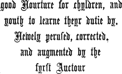
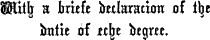
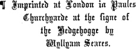

[From Harleian MS. 5401, ab. 1480-1500 A.D.]
FRUTURS. (page 194 or fol. 69 b.)
Recipe 1 þe cromys of whyte brede, & swete apyls, & ȝokkis of eggis, & bray þam wele, & temper it with wyne, & make it to sethe; & when it is thyk, do þer-to gode spyces, gynger & galingay & canyll & clows, & serve it forthe. (See also Liber Cure Cocorum, p. 39-40.)
FRUTURS OF FYGIS. (p. 197 or fol. 98.)
Recipe & make bature of floure, ale, peper & saferon, with oþer spices; þan cast þam2 in to a frying pann with batur, & ole, & bake þam & serve. (See another recipe in Household Ordinances, p. 450, under the head “Turtelettys of Fruture.”)
IUSSELL. (p. 198 or fol. 98 b.)
Recipe brede gratyd, & eggis; & swyng þam to-gydere, & do þerto sawge, & saferon, & salt; þan take gode brothe, & cast it þer-to, & bole it enforesayd, & do þer-to as to charlete &c. (See also Liber Cure Cocorum, p. 11; Jussel of Flesh, Household Ordinances, p. 462; Jussel enforsed, p. 463; Jussel of Fysshe, p. 469.)
MAWMENY. (p. 201 or fol. 100.)
Recipe brawne of Capons or of hennys, & dry þam wele, & towse þam smalle; þan take thyk mylk of almonds, & put þe saide brawñ þer-to, & styr it wele ouer þe fyre, & seson it with suger, & powder of Canelle, with mase, quibibs, & anneys in confete, & serve it forthe. (See also the recipe “For to make momene” in Liber Cure Cocorum, p. 26; for “Mawmene for xl. Mees” in Household Ordinances, p. 455; and “Mawmene to Potage,” p. 430.)
FRETOURE. (Harl. MS. 276.)
Vyaunde leche.
L.iiii.
Fretoure Take whete Floure, Ale, Ȝest, Safroun, & Salt, & bete alle to-gederys as þikke as þou schuldyst make oþer bature in fleyssche tyme, & þan take fayre Applys, & kut hem in maner of Fretourys, & wete hem in þe bature vp on downe, & frye hem in fayre Oyle, & caste hem in a dyssche, & caste Sugre þer-on, & serue forth. [The recipe for “Tansye” is No. l.vi.]
[From Harl. MS. 279, ab. 1430-40 A.D. A pretty MS. that ought to be printed.]
Potage dyuers .lxiij.
(fol. 15 a.)
Harys in cyueye. Take Harys, & Fle hem, & make hem clene, an hacke hem in gobettys, & sethe hem in Watere & Salt a lytylle; þan take Pepyr, an Safroun, an Brede, y-grounde y-fere, & temper it wyth Ale. þan take Oynonys & Percely y-mynced smal to-gederys, & sethe hem be hem self, & afterward take & do þer-to a porcyon of vynegre, & dresse in. (See also the recipe for “Harus in Cyue” in Liber Cure Cocorum, p. 21, & that for “Conyngus in cyue” p. 20. Chive is a kind of small onion.)
.lxxiii.
(fol. 16 a.)
Conyngys in cyveye. Take Conyngys, an fle hem & seþe hem, & make lyke þou woldyst make a sewe, saue alle to-choppe hem, & caste Safroun & lyer þer-to, & Wyne. (See also “Conyngus in cyue” in L. C. C., p. 20; and “Conynges in Cyue” in Household Ordinances, p. 434.)
xv.
(fol. 39 b.)
[1 fol. 40.]
Doucettes. Take Creme a gode cupfulle, & put it on a straynoure, þanne take ȝolkys of Eyroun, & put þer-to, & a lytel mylke; þen strayne it þrow a straynoure in-to a bolle; þen take Sugre y-now, & put þer-to, or ellys hony for defaute1 of Sugre; þan coloure it with Safroun; þan take þin cofyns, & put it in þe ovynne lere, & lat hem ben hardyd; þan take a dyssshe y-fastenyd on þe pelys ende, & pore þin comade in-to þe dyssche, & fro þe dyssche in-to þe cofyns; & whan þey don a-ryse Wel, teke hem out, & serue hem forth.
xxxvij.
(fol. 43 b.)
Doucettes. Take Porke & hakke it smal, & Eyroun y-mellyd to-gederys, & a lytel Milke, & melle hem to-gederys with Hony & Pepir, & bake hem in a cofyn, & serue forth.
xxxviij.
Doucettes a-forcyd. Take Almaunde Milke & ȝolkys of Eyroun y-mellid to-gederys, Safroun, Salt, & Hony: dry þin cofyn, & ley þin Maribonys þer-on, & serue forth.
[that is to say,
The boke of Seruyce & Keruynge and Sewynge
& all Maner of Offyce in his kynde
vnto a Prynce or ony other Estate,
& all the Feestes in the yere.]
Enprynted by Wynkyn de Worde at London in
Flete Strete at the sygne of the Sonne. The
yere of our Lorde God. M.CCCC.xiij.
[and now reprinted,
1867.]
150
CONTENTS.
(From the Headings in the Text, &c.)
151
¶ Here begynneth the boke of keruynge and sewynge / and all the feestes in the yere, for the seruyce of a prynce or ony other estate, as ye shall fynde eche offyce, the seruyce accordynge, in the boke folowynge.
¶ Termes of a Keruer.
Breke that dere
Slice brawn,lesche yt brawne
rere that goose
lyft that swanne
sauce that capon
spoil a hen,spoyle that henne
frusshe that chekyn
unbrace a mallard,vnbrace that malarde
vnlace that cony
dysmembre that heron
dysplaye that crane
dysfygure that pecocke
vnioynt that bytture
untache a curlew,vntache that curlewe
alaye that fesande
wynge that partryche
wynge that quayle
mynce that plouer
thye that pegyon
border a pasty,border that pasty
thye that wodcocke
thigh small birds.thye all maner of small byrdes
tymbre that fyre
tyere that egge
chyne that samon
strynge that lampraye
splat a pike,splatte that pyke
sauce that playce
sauce that tenche
splaye that breme
syde that haddocke
tuske that barbell
culpon that troute
fin a chub,fynne that cheuen
transsene that ele
traunche that sturgyon
vndertraunche yt purpos
tayme that crabbe
barb a lobster,barbe that lopster
¶ Here hendeth the goodly termes.
¶ Here begynneth Butler and Panter.
152Thou shalte be Butler and Panter all the fyrst yere / The Butler has 3 knives: and ye muste haue thre pantry knyues / 1. a squarer, 2. a chipper, 3. a smoother. one knyfe to square trenchoure loues / an other to be a [* Fol. A ii.] *chyppere / the thyrde shall be sharpe to make smothe trenchoures / than chyppe your soueraynes brede hote, and all other brede let it be a daye olde / housholde brede thre dayes olde / Trencher-bread must be 4 days old; trenchour brede foure dayes olde / than loke your salte by whyte and drye / the Salt-Planer of ivory; the planer made of Iuory, two inches brode & thre inches longe / & loke that youre salte seller lydde touche not the salte / table cloths kept in a chest, or hung on a perch. than loke your table clothes, towelles, and napkyns, be fayre folden in a cheste or hanged vpon a perche / than loke your table knyues be fayre pullysshed, & your spones clene / To broach a Pipe, have 2 augers, than loke ye haue two tarryours, a more & a lesse, & wyne cannelles of boxe made accordynge / funnels, and tubes, and pierce the Pipe 4 inches from the bottom. a sharpe gymlot & faucettes. And whan ye sette a pype on broche, do thus / set it foure fynger brede aboue ye nether chyme vpwardes aslaunte / and than shall ye lyes neuer a-ryse. seasons] Orig. seasous Always have ready fruits Also loke ye haue in all seasons butter, chese, apples, peres, nottes, plommes, grapes, dates, fygges & raysyns, compost, grene gynger and chardequynce. Serue fastynge butter, plommes, damesons, cheryes, and grapes, after mete, peres, nottes, strawberyes, hurtelberyes, and hard cheese. & hard chese. Also brandrels or pepyns with carawey in confetes. After souper, rost apples & peres, with blaunche poudre, & harde chese / Beware of cow cream. be ware of cowe creme, & of good strawberyes, hurtelberyes, Iouncat, for these wyll make your souerayne seke but he ete harde chese / Hard cheese is aperient, and harde chese hath these operacyons / it wyll kepe ye stomacke open / butter is holsome fyrst & last, keeps off poison. for it wyll do awaye all poysons / Milk and Junket mylke, creme, & Iouncat, close the Maw. they wyll close the mawe, & so dooth a posset / therfore ete harde chese, & drynke romney modon / beware of grene sallettes & rawe fruytes, for they wyll make your sourayne seke / [* Fol. A ii. b.] therfore set no mo-*che For food that sets your teeth on edge, eat an almond and hard cheese. by suche metes 153 as wyll set your tethe on edge; therfore ete an almonde & harde chese / but ete non moche chese without romney modon. Also yf dyuers drynkes, yf theyr fumosytees haue dyspleased your souerayne, A raw apple will cure indigestion. let hym ete a rawe apple, and ye fumosytees wyll cease: mesure is a mery mene & it be well vsed / abstynence is to be praysed whan god therwith is pleased. See every night that your wines don’t boil over or leak. Also take good hede of your wynes euery nyght with a candell, bothe rede wyne and swete wyne, & loke they reboyle nor leke not / & wasshe ye pype hedes euery nyght with colde water / & loke ye haue a chynchynge yron, addes, and lynen clothes, yf nede be / You’ll know their fermenting by their hissing. & yf the[y] reboyle, ye shall knowe by the hyssynge / therfore kepe an empty pype with ye lyes of coloured rose, & drawe the reboyled wyne to ye lyes, & it shal helpe it. Also yf your swete wyne pale, drawe it in to a romney vessell for lessynge.
Names of Wines¶ Here foloweth the names of wynes.
¶ Reed wyne / whyte wyne / clared wyne / osey / capryke / Campolet, Rhenish, &c campolet / renysshe wyne / maluesey / bastarde / tyer, romney / muscadell / clarrey / raspys / vernage / vernage wyne cut / pymente and ypocras.
FOR TO MAKE YPOCRAS, AND LAYE THE CLOTH. To make Ypocras.For to make ypocras.
Take spices; put 6 bags on a perch,¶ Take gynger / peper / graynes / canell / synamon / suger and tornsole / than loke ye haue fyue or syxe bagges for your ypocras to renne in, & a perche that your renners may ren on / 6 pewter basins under, than muste ye haue .vi. peautre basyns to stande vnder your bagges / than loke your spyce be redy / [* Fol. A iii.] ginger and cinnamon. & your gynger well pared or it be beten* to poudre / than loke your stalkes of synamon be well coloured; (Of the qualities of spices.) & swete canell is not so gentyll in operacyon; synamon is hote and drye / graynes of paradico] sic: o for e paradico ben hote and moyste / gynger / graynes / longe peper / and suger, ben hote and moyst / synamon / 154 canell, & rede wyne, ben hote and drye / tornsole is holsome / for reed wyne colourynge. Now knowe ye the proporcyons of your ypocras / Pound each spice separately, put ’em in bladders, and than bete your poudres eche by themselfe, & put them in bladders, hang ’em in your bags, & hange your bagges sure, that no bage touche other / but let eche basyn touche other; add a gallon of red wine to ’em, let the fyrste basyn be of a galon, and eche of the other of a potell / than put in your basyn a galon of reed wyne, put thereto your poudres, stir it well, run it through two bags, and styre them well / than put them in to the fyrste bagge, and let it renne / than put them in to the seconde bagge / than take a pece in your hande, and taste it, assaye yf it be stronge of gynger / and alaye it with synamon / and it be stro[n]ge of synamon / alaye it with suger / pass it through 6 runners, and put it in a close vessel. and loke ye lette it renne thrughe syxe renners / & your ypocras shall be the fyner / than put your ypocras in to a close vessell, and Keep the dregs for cooking. kepe the receyte / for it wyll serue for sewes / than serue your souerayne with wafers and ypocras. Have your Compost clean, and your ale 5 days old, Also loke your composte be fayre and clene / and your ale fyue dayes olde or men drynke it / than kepe your hous of offyce clene, & be curtoys of answere to eche persone, but not dead. and loke ye gyue no persone noo dowled drynke / for it wyll breke ye scabbe. HOW TO WAIT AT TABLE. To lay the Cloth. And whan ye laye the clothe, wype ye borde clene with a cloute / Put on a couch, then a second cloth, than laye a cloth, a couche, it is called, take your felawe that one ende, & holde you that other ende, than drawe the clothe straught, the fold on the outer edge; a third, the fold on the inner edge. the bought on ye vtter edge / take the vtter parte, & hange it euen / than take the thyrde clothe, [* Fol. A iii. b.] and lay ye bought on the inner *edge / and laye estat with the vpper parte halfe a fote brode / Cover your cupboard, than couer thy cupborde and thyn ewery with the towell of dyaper / put a towel round your neck, one side lying on your left arm; than take thy towell about thy necke, and laye that one syde of ye towell vpon thy lefte arme / on that, 7 loaves of eating bread and 4 trencher loaves. and there-on laye your soueraynes napkyn / and laye on thyn arme seuen loues of brede, with thre or foure trenchour loues, with the ende of ye towell in the lefte hande, as the 155 maner is / In your left hand a saltcellar, than take thy salte seller in thy lefte hande, in your right the towel. and take the ende of ye towell in your ryght hande to bere in spones and knyues / Set the saltcellar on your lord’s right, and trenchers on the left of it. than set your salt on the ryght syde where your souerayne shall sytte, and on ye lefte syde the salte set your trenchours / Lay knives, bread, spoons, napkins, than laye your knyues, & set your brede, one lofe by an other / your spones, and your napkyns fayre folden besyde your brede / and cover ’em up. than couer your brede and trenchoures, spones and knyues / & at euery ende of ye table set a salte seller with two treachour] sic: a for n treachour loues / To wrap your Lord’s bread stately. and yf ye wyll wrappe your soueraynes brede stately, Square the loaves; ye muste square and proporcyon your brede, and se that no lofe be more than an other / and than shall ye make your wrapper man[er]ly / take a Reynes towel 2½ yards long by the ends; than take a towell of reynes of two yerdes and an halfe, and take the towell by ye endes double, put it on the table, pinch up a handful of one end, and laye it on the table / than take the ende of ye bought a handfull in your hande, and wrappe it harde, and lay it between 2 towels, and on it lay your 6 or 7 loaves bottom to bottom. and laye the ende so wrapped bytwene two towelles; vpon that ende so wrapped, lay your brede, botom to botom, syxe or seuen loues / than set your brede manerly in fourme / and whan your soueraynes table is thus arayed, Put salt, cups, &c., on the other tables. couer all other bordes with salte, trenchoures, & cuppes. so] for se, see. See that your Ewery is properly supplied, and your ale-pots kept clean. Also so thyn ewery be arayed with basyns & ewers, & water hote & colde / and se’ ye haue napkyns, cuppes, & spones / & se your pottes for [* Fol. A 4.] wyne * and ale be made clene, To arrange the Surnape. Put a cloth under a double towel, hold 3 ends together, and to ye surnape make ye curtesy with a clothe vnder a fayre double napry / than take þe towelles ende nexte you / & the vtter ende of the clothe on the vtter syde of the table, & holde these thre endes atones, fold them in a foot-broad pleat, and lay it smooth. & folde them atones, that a plyte passe not a fote brode / than laye it euen there it sholde lye. After washing, And after mete wasshe with that that is at ye ryghte ende of the table / ye muste guyde it out, the Marshal must carry the surnape out. and the marshall must conuey it / and loke on eche clothe the ryght syde be outwarde, & drawe it streyght / than must ye reyse the vpper parte 156 of ye towell, & laye it with-out ony gronynge / and at Leave out half a yard to make estate. euery ende of ye towell ye must conuey halfe a yerde that ye sewer may make estate reuerently, and let it be. When your lord has washed, remove the Surnape. And whan your souerayne hath wasshen, drawe ye surnape euen / than bere the surnape to the myddes of the borde & take it vp before your souerayne, & bere it in to ye ewery agayne. it] for is When he is seated, And whan your souerayne it set, loke your towell be aboute your necke / salute him, uncover your bread, than make your souerayne curtesy / than vncouer your brede & set it by the salte & laye your napkyn, knyfe, & spone, afore hym / kneel on your knee till 8 loaves are served out (?) than knele on your knee tyll the purpayne passe eyght loues / & loke ye set at ye endes of ye table foure loues at a messe / and se that euery persone haue napkyn and spone / & wayte well to ye sewer how many dysshes be couered; Provide as many cups as dishes. ye so many cuppes couer ye / than serue ye forth the table manerly yt euery man may speke your curtesy.
HOW TO WAIT AT TABLE. SEWYNGE OF FLESSHE. ewynge of¶ Here endeth of the Butler and Panter, yoman of the seller and ewery. And here foloweth sewynge of flesshe.
[Fol. A 4 b.]The The Sewer or arranger of dishes sewer muste sewe, & from the borde conuey all maner of potages, metes, & sauces / & euery daye comon with the coke, must ascertain what dishes and fruits are prepared daily for dinner; and he must have people ready to carry up the dishes. and vnderstande & wyte how many dysshes shall be, and speke with the panter and offycers of ye spycery for fruytes that shall be eten fastynge. Than goo to the borde of sewynge, and se ye haue offycers redy to conuey, & seruauntes for to bere, your dysshes. bo] for be Also yf marshall, squyers, and seruauntes of armes, bo there, than serue forth your souerayne withouten blame.
The Succession of Dishes.¶ Seruyce.
1. Brawn, &c.¶ Fyrste sette ye forthe mustarde and brawne, potage, befe, motton stewed. 2. Pheasant, &c. Fesande / swanne / 157 capon / pygge, venyson bake / custarde / and leche lombarde. 3. Meat Fritters, &c Fruyter vaunte, with a subtylte, two potages, blaunche manger, and gelly. 4. For a standard, For standarde, venyson roste, kydde, fawne & cony / bustarde, storke, crane, a peacock with his tail. pecocke with his tayle, heronsewe, bytture, woodcocke, partryche, plouer, rabettes, grete byrdes, larkes / 5. Doucettes, Paynpuff, Brew, Snipe, doucettes, paynpuffe, whyte leche, ambre / gelly, creme of almondes, curlewe, brewe, snytes, quayle, sparowes, martynet, perche in gelly / petyperuys] ? u for n Petyperuys and petyperuys, quynces bake / leche dewgarde, Fayge, fruyter fayge, blandrelles or pepyns Caraways, &c. with carawaye in confettes, wafers and ypocras, they be a-greable. Clear the table Now this feest is done, voyde ye the table.
KERUYNGE OF FLESSHE. Keruynge of Flesshe.
¶ Here endeth the sewynge of flesshe. And begynneth the keruynge of flesshe.
The keruer must knowe the keruynge and the fayre handlynge of a knyfe, and how ye shall seche al maner of fowle / [* Fol. A 5.] Your hands must be clean; only two fingers and a thumb should be put on your knife, your knyfe muste be fayre and *your handes muste be clene; & passe not two fyngers & a thombe vpon your knyfe. In ye myddes of your hande set the halfe sure, wich] for with vnlassynge ye mynsynge wich two fyngers & a thombe; keruynge of brede, layenge, & voydynge of crommes, with two fyngers and a thombe / loke ye haue ye cure / or on fish, flesh, set neuer on fysshe / flesshe / beest / or fowl. ne fowle, more than two fyngers and a thombe / than take your lofe in your lefte hande, & holde your knyfe surely; enbrewe not the table clothe / Wipe your knife on your napkin. but wype vpon your napkyn / than take your trenchouer lofe in your lefte hande, and with the edge of your table knyfe take vp your trenchours as nye the poynt as ye may / Lay 4 trenchers for your lord, with 2 or 4 on them than laye foure trenchours to your soferayne, one by an other / and laye theron other foure trenchours or elles twayne / than take a lofe in your lyfte hande, & pare ye lofe rounde aboute / and the upper crust of a fine loaf. than cut the ouer cruste to your souerayne, and cut the nether cruste, & voyde 158 the parynge, & touche the lofe no more after it is so serued / than clense the table that the sewer may serue youre souerayne. fumosytces] sic: c for e Give heed to what is indigestible, Also ye muste knowe the fumosytces of fysshe, flesshe, and foules, & all maner of sauces accordynge to theyr appetytes / these ben the fumosytes / salte, soure, as resty, fat things, resty, fatte, fryed, senewes, skynnes, hony, croupes, pygous] sic: u for n feathers, heads, yonge feders, heddes, pygous bones, legs, &c. all maner of legges of bestees & fowles the vtter syde; for these ben fumosytees; laye them neuer to your souerayne.
Keruynge of Flesshe.¶ Seruyce.
How to carve Brawn,¶ Take your knyfe in your hande, and cut brawne in ye dysshe as it lyeth, & laye it on your soueraynes trenchour, & se there be mustarde. Venison, Venyson with fourmenty is good for your souerayne: touche not the venyson with your hande, [* Fol. A 5 b.] (cut it in 12 bits and slice it into the furmity,) but with your knyfe cut it .xii. draugh*tes with the edge of your knyfe, and cut it out in to ye fourmenty / doo in the same wyse with pesen & bacon, befe chyne and motton / pare the befe, cut the motton / & laye to your souerayne / beware of fumosytees / salte, senewe, fatte, resty & rawe. In syrupe, Pheasant, Stockdoves, fesande, partryche, stockdoue, & chekyns / in the lefte hande take them by the pynyon, & with the foreparte of your knyfe (mince the wings into the syrup,) lyfte vp your wynges / than mynce it in to the syrupe / beware of skynne rawe & senowe. reyse] The top of the s is broken off, making the letter look like an l rubbed at the top. Goose, Teal, &c., (take off the legs and wings,) Goos, tele, malarde, & swanne, reyse the legges, than the wynges / laye the body in ye myddes or in a nother plater / the wynges in the myddes & the legges; after laye the brawne bytwene the legges / & the wynges in the plater. Capon, Capon or henne of grece, lyfte the legges, (mince the wing with wine or ale,) than the wynges, & caste on wyne or ale, than mynce the wynge & giue your souerayne. Fesande, partryche, Plover, Lapwing, Bittern, Egret. plouer or lapwynge, reyse ye wynges, & after the legges. 159 woodcocke, bytture, egryt, snyte, curlewe & heronsewe, vnlace them, breke of the pynyons, necke & becke / than reyse the legges, & let the fete be on styll, than the wynges. How to carve a Crane, (mind the trump in his breast,) A crane, reyse the wynges fyrst, & beware of the trumpe in his brest. Pecocke, storke, bustarde & Shoveler, shouyllarde, vnlace them as a crane, and let ye fete be on styll. Quail, Martins, Quayle, sparow, larke, martynet, pegyon, Swallow, swalowe, & thrusshe, ye legges fyrst, than ye wynges. Fawn, Kid, Fawne, kyde, and lambe, laye the kydney to your souerayne, than lyfe vp the sholder & gyue your souerayne a rybbe. Roast Venison, Venyson roste, cut it in the dysshe, & laye it to your souerayne. Cony, A cony, lay hym on the backe, cut away the ventes bytwene the hynder legges, breke the canell bone, than reyse the sydes, (lay him on his belly with his two cut-off sides, on each side of him.) than lay the cony on ye wombe, on eche syde the chyne ye two sydes departed from the chyne, than laye the bulke, chyne, & sydes, in ye dysshe. [* Fol. A 6.] *Also ye must mynce Cut 4 strips to each bit of meat, for your lord to pick it up by. foure lesses to one morcell of mete, that your soverayne may take it in the sauce. Open hot Meat-Pies at the top; cold in the middle. All bake metes that ben hote, open them a-boue the coffyn; & all that ben colde, open theym in the mydwaye. Cut Custards in inch blocks. Custarde, cheke them inche square that your souerayne may ete therof. Doucettes, pare off sides and bottom. Doucettes, pare awaye the sydes & the bottom: beware of fumosytes. Fritters hot are good, Fruyter vaunte, fruyter say, be good; better is fruyter pouche; apple fruyters ben good hote / and all cold bad. Tansey is good. colde fruters, touche not. Tansey is good / hote wortes, or gruell of befe or of motton is good. Jelly, Blanche Manger, Charlet, &c., are good, and Gelly, mortrus, creme almondes, blaunche manger, Iussell, and charlet, cabage, and nombles of a dere, ben good / no other potages. & all other potage beware of.
SAUCES FOR FOWLES. Sauces for all maner of Fowles.
¶ Here endeth ye keruynge of flesshe. And begynneth sauces for all maner of fowles.
Mustarde Mustard for beef; Verjuice for boiled chickens; Cawdrons for swans; is good with brawne, befe, chyne, bacon, & motton. Vergius is good to boyled chekyns and capon / swanne with cawdrons / rybbes of 160 Garlick, &c., for beef. befe with garlycke, mustarde, peper, vergyus; Ginger for lamb; gynger sauce to lambe, pygge, & fawne / mustarde & suger to fesande, partryche, and conye / Gamelyne for heronsewe, &c.; sauce gamelyne to heronsewe, egryt, plouer, & crane / to brewe, curlewe, Salt, Sugar and Water of Tame for brew, &c. salte, suger, & water of tame / to bustarde, shouyllarde, & bytture, sauce gamelyne: White salt for lapwings, &c. Cinnamon and salt for thrushes &c. woodcocke, lapwynge, larke, quayle, mertynet, venyson, and snyte, with whyte salte / sparowes & throstelles with salte & synamon / thus with all metes, sauce shall haue the operacyons.
¶ Here endeth the sauces for all maner of fowles and metes.
FEESTES AND SERUYCE. [Fol. A 6 b.] The Dinner Courses from Easter to Whitsunday.¶ Here begynneth the feestes and seruyce from Eester vnto whytsondaye.
On From Easter to Pentecost, set bread, trenchers and spoons: Eester daye & so forthe to Pentycost, after ye seruynge of the table there shall be set brede, trenchours, and spones, after the estymacyon of them that shall syt there; and thus ye shall serue your souerayne; 6 or 8 trenchers for a great lord, 3 for one of low degree. laye [six or eight1*] trenchours / & yf he be of a lower degre [or] estate, laye fyue trenchours / & yf he be of lower degre, foure trenchours / & of an other degre, thre trenchours / Then cut bread for eating. than cut brede for your souerayne after ye knowe his condycyons, wheder it be cutte in ye myddes or pared, or elles for to be cut in small peces. Also ye must vnderstande how ye mete shall be serued before youre souerayne, & namely on For Easter-day Feast: Eester daye after the gouernaunce & seruyce of ye countree where ye were borne. First Course: A Calf, boiled and blessed; Fyrste on that daye he shall serue a calfe soden and blessyd / and than boiled Eggs and green sauce; soden egges with grene sauce, and set them before the most pryncypall estate / and that lorde by cause of his hyghe estate shall departe them all aboute hym / than serue Potage, with beef, potage, as wortes, Iowtes, or browes, with befe, motton, 161 or vele / saffron-stained Capons. & capons that ben coloured with saffron, and bake metes. Second Course: And the seconde course, Iussell with Mameny, Pigeons, mamony, and rosted, endoured / & pegyons with bake metes, as tartes, Chewets, Flawnes. chewettes, & flawnes, & other, after the dysposycyon of the cokes. broche] ? brothe Supper: And at soupertyme dyuers sauces of motton or vele in broche, after the ordynaunce of the stewarde / and than Chickens, Veal, chekyns with bacon, vele, roste pegyons or lambe, roast Kid, & kydde roste with ye heed & the portenaunce on lambe & Pigs’-Feet, pygges fete, with vinegre & percely theron, & a Tansey fried. a tansye fryed, & other bake metes / ye shall vnderstande this maner of seruyce [* Fol. B i.] *dureth to Pentecoste, saue fysshe dayes. Also take hede how ye shall araye these thynges before your souerayne / fyrst ye shall se there be Green Sauces of sorrel or vines, for the first course. grene sauces of sorell or of vynes, that is holde a sauce for the fyrst course / and ye shall begyn to reyse the capon.
KERUYNG OF ALL MANER OF FOWLES. Keruyng of all maner of Fowles.¶ Here endeth the feest of Eester tyll Pentecoste. And here begynneth keruyng of all maner of fowles.
How to carve a Capon.¶ Sauce that capon.
¶ Take vp a capon, & lyfte vp the ryght legge and the ryght wynge, & so araye forth & laye hym in the plater as he sholde flee, & serve your souerayne / & knowe well that capons or chekyns ben arayed after one sauce; Sauce: green sauce or verjuice. the chekyn shall be sauced with grene sauce or vergyus.
Swan.¶ Lyfte that swanne.
Chawdron is the sauce for him.¶ Take and dyghte hym as a goose, but let hym haue a largyour brawne, & loke ye haue chawdron.
Pheasant.¶ Alaye that fesande.
¶ Take a fesande, and reyse his legges & his wynges as it were an henne, No sauce but Salt. & no sauce but onely salte.
Partridge.¶ wynge that partryche.
¶ Take a partryche, and reyse his legges and his wynges as a henne / & ye mynce hym, sauce hym with 162 Sauce for Partridges. wyn, poudre of gynger, & salte / that set it vpon a chaufyng-dysshe of coles to warme & serue it.
How to carve a Quail.¶ wynge that quayle.
¶ Take a quayle, and reyse his legges and his wynges as an henne, Sauce: salt. and no sauce but salte.
Crane.Dysplaye that crane.
¶ Take a crane, and vnfolde his legges, and cut of his wynges by the Ioyntes: than take vp hys wynges and his legges, Sauce: ginger, mustard, vinegar, and salt. and sauce hym with poudres of gynger, mustarde, vynegre, and salte.
[Fol. B i. b.] Heron.Dysmembre that heron.
¶ Take an heron, and reyse his legges and his wynges as a crane, and sauce hym with Sauce as before. vynegre, mustarde, poudre of gynger, and salte.
Rittern.Vnioint that bytture.
¶ Take a bytture, and reyse his legges & his wynges as an heron, Salt, the sauce. & no sauce but salte.
Egret.Breke that egryt.
¶ Take an egryt, and reyse his legges and his wynges as an heron, Salt, the sauce. and no sauce but salte.
Curlew.Vntache that curlewe.
¶ Take a curlewe, and reyse his legges and his wynges as an henne, Salt, as sauce. and no sauce but salte.
Brew.¶ Vntache that brewe.
¶ Take a brewe, and reyse his legges and his wynges in the same maner, and Salt, as sauce. no sauce but onely salte, & serue your souerayne.
Cony (or Rabbit.)Vnlace that cony.
¶ Take a cony, and laye hym on the backe, & cut awaye the ventes / than reyse the wynges and the sydes, and laye bulke, chyne, and the sydes togyder; Sauce: vinegar and ginger. sauce, vynegre and poudre of gynger.
163 Sarcel or Teal.Breke that sarcell.
¶ Take a sarcell or a teele, and reyse his wynges & his legges, and no sauce but salte onely.
Plover.Mynce that plouer.
¶ Take a plouer, and reyse his legges and his wynges as an henne, and no sauce but onely salt.
Snipe.A snyte.
¶ Take a snyte, and reyse his wynges, his legges, and his sholdres, as a plouer; and no sauce but salte.
[Fol. B ij.] Woodcock.¶ Thye that woodcocke.
Take a woodcocke, & reyse his legges and his wynges as an henne; this done, dyght the brayne. And here begynneth the feest from Pentecost vnto mydsomer.
Sauces for the Second Course.In the seconde course for the metes before sayd ye shall take for your sauces, wyne, ale, vynegre, and poudres, after the mete be; & gynger & canell from Pentecost to the feest of saynt Iohn baptyst. First Course: Beef and Capons. The fyrst course shall be befe, motton soden with capons, or rosted / & yf the capons be soden, araye hym in the maner aforesayd. How to sauce and carve a Roast capon: And whan he is rosted, thou must caste on salte, with wyne or with ale / than take the capon by the legges, & caste on the sauce, & breke hym out, lay him out as if ready to fly. & laye hym in a dysshe as he sholde flee. Fyrst ye shall cut the ryght legge and the ryght sholdre, & bytwene the foure membres laye the brawne of the capon, with the croupe in the ende bytwene the legges, as it were possyble for to be Ioyned agayne togyder / & other bake metes after: Second Course: Potage, Charlet, young Geese, Payne Puff, &c. And in the seconde course, potage shall be, Iussell, charlet, or mortrus, with yonge geese, vele, porke, pygyons or chekyns rosted, with payne puffe / fruyters, and other bake metes after the ordynaunce of the coke. How to carve a Goose. Also the goose ought to be cut membre to membre, begynnynge at the ryght legge, and so forth vnder the ryght wynge, 164 & not vpon the Ioynte aboue / Goose must be eaten with green garlic or verjuice. & it ought for to be eten with grene garlyke, or with sorell, or tender vynes, or vergyus in somer season, after the pleasure of your souerayne. Also ye shall vnderstande that all maner of fowle that hath hole fete sholde be reysed vnder the wynge, and not aboue.
THE SERVICE FROM MIDSUMMER TO CHRISTMAS. Dinner Courses from the Nativity* of St John the Baptist, (June 24,) to Michaelmas.¶ Here endeth the feest from Pentecost to mydsomer. And here begynneth from the feest of saynt Iohn the baptist vnto Myghelmasse.
First Course: soups, vegetables, legs of Pork, &c.In the fyrst course, potage, wortes, gruell, & fourmenty, with venyson, and mortrus and pestelles of porke with grene sauce. Rosted capon, swanne with chawdron. Second Course: In the seconde course, potage after the ordynaunce of the cokes, roast Mutton, with rosted motton, vele, porke, chekyns or glazed Pigeons, endoured pygyons, heron-sewes, Fritters, &c. fruyters or other bake metes / & take hede to the fesande: he shall be arayed in the maner of a capon / Serve a Pheasant dry, with salt and ginger: but it shall be done drye, without ony moysture, and he shall be eten with salte and pouder of gynger. And a Heronsewe with salt and powder (blanche?) the heronsewe shall be arayed in the same maner without ony moysture, & he shulde be eten with salte and poudre. Also ye shall vnderstande that Treat open-clawed birds like capons. all maner of fowles hauynge open clawes as a capon, shall be tyred and arayed as a capon and suche other.
Dinner Courses from Michaelmas to Christmas.¶ From the feest of saynt Myghell vnto the feest of Chrystynmasse.
In First Course: legs of Pork, &c. the fyrst course, potage, befe, motton, bacon, or pestelles of porke, or with goose, capon, mallarde, swanne, or fesande, as it is before sayd, with tartes, or bake metes, or chynes of porke. Second Course: In the second course, potage, mortrus, or conyes, or sewe / than roste flesshe, motton, porke, vele, pullettes, chekyns, pygyons, teeles, 165 Widgeon, wegyons, mallardes, partryche, woodcoke, plouer, bytture, curlewe, heronsewe / venyson roost, grete byrdes, snytes, Fieldfares, Chewets, Beef, with sauces Gelopere and Pegyll. feldefayres, thrusshes, fruyters, chewettes, befe with sauce gelopere, roost with sauce pegyll, & other [* Fol. B iii.] ba*ke metes as is aforesayde. And yf ye kerue afore your lorde or your lady ony soden flesshe, Cut the skin off boiled meats. kerue awaye the skynne aboue / than kerue resonably of ye flesshe to your lorde or lady, ye] for they Carve carefully for Ladies; and specyally for ladyes, for ye they soon get angry wyll soone be angry, for theyr thoughtes ben soone changed / and some lordes wyll be sone pleased, & some wyll not / as they be of compleccyon. Carve Goose and Swan like other birds. The goos & swanne may be cut as ye do other fowles yt haue hole fete, or elles as your lorde or your lady wyll aske it. Also a swanne with chawdron, capon, or fesande, ought for to be arayed as it is aforesayd / but the skynne must be had awaye / & whan they ben kerued before your lorde or your lady / for generally The skin of cloven-footed birds is unwholsome; the skynne of all maner cloven foted fowles is vnholsome / of whole-footed birds & the skynne of all maner hole foted fowles ben holsome for to be eten. Also wete ye well that all maner hole foted fowles that haue theyr lyuyng vpon the water, theyr skynnes ben wholesome, holsome & clene, for by ye clenes of the water / & fysshe, is theyr lyuynge. And yf that they ete ony stynkynge thynge, because the water washes all corruption out of ’em. it is made so clene with ye water that all the corrupcyon is clene gone away frome it. Chicken’s skin is not so pure, And the skynne of capon, henne, or chekyn, ben not so clene, for the[y] ete foule thynges in the strete / & therfore the skynnes ben not so holsome / because their nature is not to enter into the river. for it is not theyr kynde to entre in to ye ryuer to make theyr mete voyde of ye fylth. Mallarde, goose, or swanne, they ete vpon the londe foule mete / River birds cleanse their foul stink in the river. but a-non, after theyr kynde, they go to the ryuer, & theyr they clense them of theyr foule stynke. A fesande as it is aforesayd / but ye skynne is not holsome / Take off the heads of all field birds, than take ye heddes of all felde byrdes and wood byrdes, as fesande, pecocke, partryche, woodcocke, and curlewe, for they eat worms, toads, and the like. for they ete in 166 theyr degrees foule thynges, as wormes, todes, and other suche.
SEWYNGE OF FYSSHE. Sewynge of Fysshe.
¶ Here endeth the feestes and the keruynge of flesshe, And here begynneth the sewynge of fysshe.
First Course:¶ The fyrst course.
Musculade.To go to sewynge of fysshe: musculade, menewes in sewe of porpas or of samon, bacon herynge with suger, grene fysshe, pyke, lampraye, Salens, &c., baked Gurnet. salens, porpas rosted, bake gurnade, and lampraye bake.
Second Course:¶ The seconde course.
Jelly, dates, &c.¶ Gelly whyte and rede, dates in confetes, congre, samon, dorrey, brytte, turbot, halybut / For a standard, for standarde, base, troute, Mullet, Chub, Seal, &c. molette, cheuene, sele, eles & lamprayes roost, tenche in gelly.
Third Course:¶ The thyrde course.
Bream, Perch, Whelks; and pears in sugar candy. Figs, dates capped with minced ginger, &c.¶ Fresshe sturgyon, breme, perche in gelly, a Ioll of samon, sturgyon, and welkes; apples & peres rosted with suger candy. raysyns] Orig. raysyus Fygges of malyke, & raysyns, dates capte with mynced gynger / wafers and ypocras, they ben agreable / All over! Clear the table. this feest is done, voyde ye the table.
KERUYNGE OF FYSSHE. [Fol. B iii. b.] Carving and Dressing of Fish.
¶ Here endeth sewynge of fysshe. And here foloweth keruynge of fysshe.
The keruer of fysshe Put tails and livers in the pea broth and furmity. must se to pessene & fourmentye the tayle and ye lyuer: ye must loke yf there be a salte purpos, How to carve Seal Turrentyne, or sele turrentyne, & do after ye fourme of venyson / baked Herring, baken herynge, laye it hole vpon your soueraynes trenchour / white Herring, whyte herynge in a disshe, open it by ye backe, pyke out the bones & the rowe, & se there be mustarde. Of salte fysshe, Green Fish, grene fysshe, salt samon & congre, pare away ye skyn / salte fysshe, stocke fysshe, Merling, Hake, marlynge, makrell, and hake, with butter: take awaye the bones & the skynnes. Pike, A pyke, laye ye 167 wombe vpon his trenchour with pyke sauce ynoughe. [* Fol. B 4.] salt Lamprey, Plaice. A salte * lampraye, gobone it flatte in .vii. or .viii. peces, & lay it to your souerayne. A playce, put out the water / than crosse hym with your knyfe, caste on salte & wyne or ale. Gurnard, Bream, Gornarde, rochet, breme, cheuene, base, molet, Roach, Whiting, roche, perche, sole, makrell & whytynge, haddocke and Codling. codlynge, reyse them by the backe, & pyke out the bones, & clense the refet in ye bely. Carp Trout, Carpe, breme, sole, & troute, backe & belly togyder. Samon, Conger, Thornback, Halibut, congre, sturgyon, turbot, thorpole, thornebacke, hounde-fysshe, & halybut, cut them in the dysshe as ye porpas aboute / Tench, tenche in his sauce, cut it / eles & lamprayes roost, pull of the skynne, pyke out ye bones, put therto vyneger & poudre. and Crab. A crabbe, breke hym a-sonder in to a dysshe, make ye shelle clene, How to dress and serve up a Crab. & put in the stuffe agayne, tempre it with vynegre & pouder, than couer it with brede, and sende it to the kytchyn to hete / than set it to your souerayne, and breke the grete clawes, and laye them in a disshe. slytee] sic How to dress and carve a Crayfish, A creues, dyght hym thus: departe hym a-sonder, & slytee the belly, and take out ye fysshe; pare away the reed skynne, and mynce it thynne; put vynegre in the dysshe, and set in on ye table without hete. a Joll of Sturgeon, A Iol of sturgyon, cut it in thynne morselles, & lay it rounde aboute the dysshe. a fresh Lamprey, pasty. Fresshe lampraye bake: open ye pasty / than take whyte brede, and cut it thynne, & lay it in a dysshe, (sauce, Galentyne with red wine and powdered cinnamon.) & with a spone take out galentyne, & lay it vpon the brede with reed wyne & poudre of synamon / than cut a gobone of the lampraye, & mynce the gobone thynne, and laye it in the galentyne; than set it vpon the fyre to hete. Fresh Herring, &c. Fresshe herynge with salte & wyne / shrympes wel pyked, floundres, gogyons, menewes & musceles, eles and lamprayes: Sprats, sprottes is good in sewe / Musculade in worts, Oysters. musculade in wortes / oystres in ceuy, oysters in grauy, menewes in porpas, samon & seele, [* Fol. B 4 b.] gelly * whyte and reede, creme of almondes, Dates, pears, dates in 168 comfetes, peres and quynces in syrupe, with percely rotes; Mortrewes of Dogfish. mortrus of houndes fysshe, ryse standynge.
SAUCES FOR FYSSHE. Sauces for Fish.¶ Here endeth the keruynge of fysshe. And here begynneth sauces for all maner of fysshe.
Mustard forMustarde is good for salte herynge / salte fysshe, salte congre, Salmon, &c.; samon, sparlynge, salt ele & lynge: Vinegar for salt Whale, &c.; vynegre is good with salte porpas, turrentyne salte / sturgyon salte, threpole, & salt wale / Galentyne for Lamprey; Verjuice for Roach, &c.; Cinnamon for Chub, &c.; lampray with galentyne / vergyus to roche, dace, breme, molet, base, flounders, sole, crabbe, and cheuene, with poudre of synamon; to thornebacke, herynge, houndefysshe, haddocke, whytynge, & codde, vynegre, poudre of synamon, & gynger; Green Sauce for Halibut, &c. grene sauce is good with grene fysshe & halybut, cottell, & fresshe turbot / put not your grene sauce awaye, for it is good with mustarde.
¶ Here endeth for all maner of sauces for fyssche accordynge to theyr appetyte.
THE CHAUMBERLAYNE. The Duties of a Chamberlain.¶ The chaumberlayne.
He must be cleanly, and comb his hair;The caumberlayne muste be dylygent & clenly in his offyce, with his heed kembed, & so to his souerayne that he be not recheles, see to his Lord’s clothes, and brush his hose; & se that he haue a clene sherte, breche, petycote, and doublet / than brusshe his hosen within & without, & se his shone & slyppers be made clene / in the morning warm his shirt, & at morne whan your souerayne wyll aryse, warme his sherte by the fyre / and prepare his footsheet; & se ye haue a fote shete made in this maner. Fyrst set a chayre by the fyre with a cuysshen, an other vnder his fete / than sprede a shete ouer the chayre, and se there be redy a [* Fol. B 5.] kerchefe * and a combe / than warm his petycote, &c.; warme his petycote, his doublet, and his stomachere / & than put on his hosen & put on his shoes, his shone or slyppers, than tie up his hose, stryke vp his hosen manerly, & tye them vp, than lace 169 his doublet hole by hole, & laye the clothe aboute his necke & comb his head, kembe his hede / than loke ye haue a basyn, wash his hands, & an ewer with warme water, and a towell, and wasshe his handes / than knele vpon your knee, put on the robe he orders. & aske your souerayne what robe he wyll were, & brynge him such as your souerayne commaundeth, & put it vpon hym; than doo his gyrdell aboute hym, & take your leue manerly, Make ready his Closet in the Church or Chapel, & go to the chyrche or chapell to your soueraynes closet, & laye carpentes & cuysshens, & lay downe his boke of prayers / than drawe the curtynes, and take your leue goodly, then come home to his Bedchamber, take off the bed-clothes. & go to youre soueraynes chambre, & cast all the clothes of his bedde, & bete the feder bedde & the bolster / but loke ye waste no feders; than shall the blankettes, & se the shetes be fayre & swete, or elles loke ye haue clene shetes / Make his lord’s bed again with clean sheets, than make vp his bedde manerly, than lay the hed shetes & the pyllowes / than take vp the towel & the basyn, and lay hangings round the bed, and windows, &c. & laye carpentes aboute the bedde, or wyndowes & cupbordes layde with carpettes and cuysshyns. Also loke there be a good fyre brennynge bryght / Keep the privy clean, and the board covered with green cloth, and provide down or cotton for wiping. & se the hous of hesement be swete & clene, & the preuy borde couered with a grene clothe and a cuysshyn / than se there be blanked, donne, or cotton, for your souerrayne / When he goes to bed, let him wash; put him on a mantle, take off his shoes, &c. & loke ye haue basyn, & euer with water, & a towell for your souerayne / than take of his gowne, & brynge him a mantell to kepe hym fro colde / than brynge hym to the fyre, & take of his shone & his hosen; than take a fayre kercher of reynes / Comb his head, & kembe his heed, put on his night-cap, & put on his kercher and his bonet / than sprede downe his bedde, laye the heed shete and the pyllowes / & whan your souerayne is to [* Fol. B 5 b.] bedde * draw the curtains round him, drawe the curtynes / than se there be morter or waxe or perchoures be redy / than drive out the dogs and cats, set the urinal near, and then take leave. dryue out dogge or catte, & loke there be basyn and vrynall set nere your souerayne / than take your leue manerly that your souerayne may take his rest meryly.
¶ Here endeth of the chaumberlayne.
170 OF THE MARSHALL AND THE VSSHER. Of the Marshal and Usher.¶ Here foloweth of the Marshall and the vssher.
He must know the orders of precedence of all ranks.The Marshall and the vssher muste knowe all the estates of the chyrche, and the hyghe estate of a kynge, with the blode royall.
¶ The estate of a Pope hath no pere.
¶ The estate of an Emperour is nexte.
¶ The estate of a kynge.
A Cardinal before a Prince.¶ The estate of a cardynall.
¶ The estate of a kynges sone, a prynce.
¶ The estate of an archebysshop.
¶ The estate of a duke
¶ The estate of a bysshop
¶ The estate of a marques
¶ The estate of an erle
¶ The estate of a vycount
¶ The estate of a baron.
¶ The estate of an abbot with a myter
The Mayor of London ranks with the 3 Chief Justices.¶ The estate of the thre chefe Iuges & the Mayre of London.
¶ The estate of an abbot without a myter
¶ The estate of a knyght bacheler
The Knight’s equals.¶ The estate of a pryour, dene, archedeken, or knyght
[Fol. B 6.]¶ The estate of the mayster of the rolles.
¶ The estate of other Iustices & barons of the cheker
¶ The estate of the mayre of Calays.
¶ The estate of a prouyncyall, a doctour dyvyne,
¶ The estate of a prothonat: he is aboue the popes collectour, and a doctour of bothe the lawes.
The ex-Mayor of London.¶ The estate of him that hath ben mayre of London and seruaunt of the lawe.
The Esquire’s equals.¶ The estate of a mayster of the chauncery, and other worshypfull prechours of pardon, and clerkes that ben gradewable / & all other ordres of 171 chastyte, persones & preestes, worshypfull marchauntes & gentylmen, all this may syt at the squyers table.
Who must dine alone,¶ An archebysshop and a duke may not kepe the hall, but eche estate by them selfe in chaumbre or in pauylyon, that neyther se other.
who 2 together,¶ Bysshoppes, Marques, Erles, & Vycountes, all these may syt two at a messe.
who 2 or 3,¶ A baron, & the mayre of London, & thre chefe Iuges, and the speker of the parlyament, & an abbot with a myter, all these may svttwo or thre at a messe
¶ And all other estates may syt thre or foure at a messe
The Marshall must know who are of royal blood,¶ Also the Marshall muste vnderstande and knowe the blode royall, for some lorde is of blode royall & of small lyuelode. And some knyght is wedded to a lady of royal blode; she shal kepe the estate that she was before. And a lady of lower degree shal kepe the estate of her lordes blode / for that has the reverence. & therfore the royall blode shall haue the reuerence, as I haue shewed you here before.
¶ Also a marshall muste take hede of the byrthe, and nexte of the lyne, of the blode royall.
He must take heed of the King’s officers,¶ Also he must take hede of the kynges offycers, of the Chaunceler, Stewarde, Chamberlayne, Tresourer, and Controller.
do honour to strangers,¶ Also the marshall must take heed vnto straungers, & put them to worshyp & reuerence; for and they haue good chere it is your soueraynes honour.
and receive a Messenger from the King as if one degree higher than he is, for a King’s groom may sit at a Knight’s table.¶ Also a Marshall muste take hede yf the kynge sende to your souerayne ony message; and yf he send a knyght, receyue hym as a baron; and yf he sende a squyre, receyue hym as a knyght / and yf he sende you a yoman, receyue hym as a squyer / and yf he sende you a grome, receyue hym as a yoman.
172¶ Also it is noo rebuke to a knyght to sette a grome of the kynge at his table.
Here ends this Book¶ Here endeth the boke of seruyce, & keruynge, and sewynge, and all maner of offyce in his kynde vnto a prynce or ony other estate, & all the feestes in the yere. printed by Wynkyn de Worde. Enprynted by wynkyn de worde at London in Flete strete at the sygne of the sonne. A.D. 1513. The yere of our lorde god M.CCCCC.xiij.
[Wynkyn .de. worde’s device here.]
1*. See above, in the Keruynge of Flesshe, p. 157, lines 5 and 4 from the bottom.
* The feast of St John’s Beheading is on Aug. 29.
NOTES.
Wynkyn de Worde introduces some dishes, sauces, fish, and one wine, not mentioned by Russell.
The new Dishes are—
Fayge (p. 157, l. 10). This may be for Sage, the herb, or a variety of Fritter, like Fruyter vaunte (p. 157, l. 2; p. 159, l. 24), fruyter say (p. 159, l. 24), or a dish that I cannot find, or a way of spelling figs.
Fruyter say, p. 159, l. 24. If say is not for Sage, then it may be a fish, contrasted with the vaunte, which I suppose to mean ‘meat.’ Sey is a Scotch name for the Coalfish, Merlangus Carbonarius. Yarrell, ii. 251.
Charlet (p. 159, l. 28). The recipe in ‘Household Ordinances,’ p. 463, is, Take swete cowe mylk and put into a panne, and cast in therto ȝolkes of eyren and the white also, and sothen porke brayed, and sage; and let hit boyle tyl hit crudde, and colour it with saffron, and dresse hit up, and serve hit forthe.” Another recipe for Charlet Enforsed follows, and there are others for Charlet and Charlet icoloured, in Liber Cure, p. 11.
Jowtes, p. 160, last line. These are broths of beef or fish boiled with chopped boiled herbs and bread, H. Ord. p. 461. Others are made ‘with swete almond mylke,’ ib. See ‘Joutus de Almonde,’ p. 15, Liber Cure. For ‘Joutes’ p. 47; ‘for oþer ioutes,’ p. 48.
Browes, p. 160, last line. This is doubtless the Brus of Household Ordinances, p. 427, and the bruys of Liber Cure, p. 19, l. 3, brewis, or broth. Brus was made of chopped pig’s-inwards, leeks, onions, bread, blood, vinegar. For ‘Brewewes in Somere’ see H. Ord. p. 453.
Chewettes, p. 161, l. 4, were small pies of chopped-up livers of pigs, hens, and capons, fried in grease, mixed with hard eggs and ginger, and then fried or baked. Household Ordinances, p. 442, and Liber Cure, p. 41. The Chewets for fish days were similar pies of chopped turbot, haddock, and cod, ground dates, raisins, prunes, powder and salt, fried in oil, and boiled in sugar and wine. L. Cure, p. 41. Markham’s Recipe for ‘A Chewet Pye’ is at p. 80-1 of his English Houswife. Chewit, or small Pie; minced or otherwise. R. Holme. See also two recipes in MS. Harl. 279, fol. 38.
Flaunes (p. 161, l. 4) were Cheesecakes, made of ground cheese beaten up with eggs and sugar, coloured with saffron, and baked in ‘cofyns’ or crusts. ‘A Flaune of Almayne’ or ‘Crustade’ was a more elaborate preparation of dried or fresh raisins and pears or apples pounded, with cream, eggs, bread, spices, and butter, strained and baked in ‘a faire coffyn or two.’ H. Ord. p. 452. ‘Pro Caseo ad flauns qualibet die . panis j’ (allowance of). Register of Worcester Priory, fol. 121 a. ed. Hale, 1865. Corrigenda
Of new Sauces, Wynkyn de Worde names Gelopere & Pegyll (p. 165, l. 4). Gelopere I cannot find, and can only suggest that its p may be for f, and that “cloves of gelofer,” the clove-gillyflower, may have been the basis of it. These cloves were stuck in ox tongues, see “Lange de beof,” Liber Cure, p. 26. 174 Muffett also recommends Gilly-flour Vinegar as the best sauce for sturgeon in summer, p. 172; and Vinegar of Clove-Gilliflowers is mentioned by Culpepper, p. 97, Physical Directory, 1649.
Pegylle I take to be the Pykulle of Liber Cure Cocorum, p. 31, made thus;
‘Take droppyng of capone rostyd wele
With wyne and mustarde, as have Þou cele [bliss],
With onyons smalle schrad, and sothun in grece,
Meng alle in fere, and forthe hit messe.’
The new Wine is Campolet, p. 153. Henderson does not mention it; Halliwell has ‘Campletes. A kind of wine, mentioned in a curious list in MS. Rawl. C. 86.’ [See the list in the Notes to Russell, above, p. 86.] I suppose it to be the wine from ‘Campole. The name of a certaine white grape, which hath very white kernels.’ Cotgrave.
Of new Fish W. de Worde names the Salens (p. 166, l. 8), Cottell and Tench (p. 167). Torrentyne he makes sele turrentyne (p. 166, l. 8 from bottom) seemingly, but has turrentyne salte as a fish salted, at p. 168, l. 7.
Cottell, p. 168, l. 14, the cuttlefish. Of these, Sepiæ vel Lolligines calamariæ, Muffet says, they are called also ‘sleewes’ for their shape, and ‘scribes’ for their incky humour wherewith they are replenished, and are commended by Galen for great nourishers; their skins be as smooth as any womans, but their flesh is brawny as any ploughmans; therefore I fear me Galen rather commended them upon hear-say then upon any just cause or true experience.
For the Salens I can only suggest thunny. Aldrovandi, de Piscibus, treating of the synonyms of the Salmon, p. 482, says, “Græcam salmonis nomenclaturam non inuenio, neque est quod id miretur curiosus lector, cum in Oceano tantum fluminibusque in eum se exonerantibus reperiatur, ad quæ veteres Græci nunquam penetrarunt. Qui voluerit, Salangem appellare poterit. Σαλαγξ enim boni, id est, delicati piscis nomen legitur apud Hesychium, nec præterea qui sit, explicatur: aut a migrandi natura κατανάδρομος, vel δρόμας fluviatilis dicatur, nam Aristoteles in mari dromades vocat Thunnos aliosque gregales, qui aliunde in Pontum excurrunt, et vix vno loco conquiescunt; aut nomen fingatur a saltu, & ἄλμων dicitur. Non placet tamen, salmonis nomen a saltu deduci, aut etiam á sale, licet saliendi natura ei optimè quadret saleque aut muria inueturaria etiam soleat. Non enim latine sed a Germanis Belgisuè Rheni accolis, aut Gallis Aquitanicis accepta vox est.” See also p. 318, ‘Scardula, et Iucohia ex Pigis, et Plota, Salena.’ Gesner, de Piscibus, p. 273. Can salens be the Greek ‘σωλην, a shell-fish, perhaps like the razor-fish. Epich. p. 22.’—Liddell and Scott—? I presume not. ‘Solen. The flesh is sweet; they may be eaten fryed or boiled.’ 1661, R. Lovell, Hist. of Animals, p. 240. ‘Solen: A genus of bivalve mollusks, having a long slender shell; razor-fish.’ Webster’s Dict.
Sele turrentyne, p. 166, l. 8 from bottom. Seemingly a variety of seal, or of eel or sole if sele is a misprint. But I cannot suggest any fish for it.
Rochets, p. 167, l. 5. Rubelliones. Rochets (or rather Rougets, because they are so red) differ from Gurnards and Curs, in that they are redder by a great deal, and also lesser; they are of the like flesh and goodness, yet better fryed with onions, butter, and vinegar, then sodden. Muffett, p. 166.
FROM THE SLOANE MS. 1986 IN THE BRITISH MUSEUM,
AB. 1460 A.D.
CONTENTS.
| PAGE | |
| 177 | |
| 181 | |
|
THE THIRD BOOK: |
|
| 187 | |
| 188 | |
| 188 | |
|
Per quantum tempus armigeri habebunt liberatam et ignis ardebit in aula |
189 |
| 190 | |
| 190 | |
| 190 | |
| 191 | |
| 194 | |
| 195 | |
| 195 | |
| 195 | |
| 195 | |
| 196 | |
| 197 | |
| 197 | |
| 198 | |
| 198 | |
| 199 | |
| 199 | |
| 200 | |
| 200 | |
| 201 | |
| 202 | |
| 204 | |
HEre begynnethe þe fyrst boke of curtasye.
[Fol. 12.] In this book you may learn Courtesy. Every one needs it.Qwo so wylle of curtasy lere,
In this boke he may hit here!
Yf thow be gentylmon, ȝomon, or knaue,
4The nedis nurture for to haue.
On reaching a Lord’s gate, give the Porter your weapon, and ask leave to go in.Wheñ thou comes to a lordis ȝate,
The porter þou shalle fynde ther-ate;
Take hym thow shalt þy wepyn tho,
8And aske hym leue in to go
¶ To speke with lorde, lady, squyer, or grome.
Ther-to the nedys to take the tome1;
If the master is of low degree, he will come to you: if of high, the Porter will take you to him.For yf he be of loghe degre,
12Than hym falles to come to the;
¶ Yf he be gentylmon of kyñ,
The porter wille lede the to hym.
At the Hall-door, take off your hood and gloves.When thow come tho halle dor to,
16Do of thy hode, thy gloues also;
greet the Steward, &c., at the dais,¶ Yf þo halle be at the furst mete,
This lessoun loke thow noȝt for-ȝete:
greet the Steward, &c., at the dais,Þe stuard, countroller, and tresurere,
20Sittand at de deshe, þou haylse in fere.
bow to the Gentlemen on each side of the hall.¶ Withiñ þe halle sett on ayther side,
Sitten other gentylmen as falles þat tyde;
Enclyne þe fayre to hom also,
both right 24First to the ryȝht honde þou shalle go,
178 and left;¶ Sitthen to þo left honde þy neghe þou cast;
To hom þou boghe withouten wrast2;
notice the yeomen, then stand before the screenTake hede to ȝomon on þy ryght honde,
28And sithen byfore the screne þou stonde
¶ In myddys þe halle opon þe flore,
till the Marshal or Usher leads you to the table.Whille marshalle or vssher come fro þe dore,
And bydde the sitte, or to borde the lede.
HOW TO BEHAVE AT TABLE. Be sedate and courteous if you are set with the gentlemen. 32Be stabulle of chere for menske3, y rede;
¶ Yf he þe sette at gentilmonnes borde,
Loke þou be hynde4 and lytulle of worde.
Cut your loaf in two, the top from the bottom;Pare þy brede and kerue in two,
36Tho ouer crust þo nether fro;
cut the top crust in 4, and the bottom in 3.¶ In fowre þou kutt þo ouer dole,
Sett hom to-gedur as hit where hole;
cut the top crust in 4, and the bottom in 3.Sithen kutt þo nether crust in thre,
40And turne hit dowñ, lerne þis at me.
Put your trencher before you,¶ And lay thy trenchour þe be-fore,
And sitt vp-ryȝht for any sore.
and don’t eat or drink till your Mess is brought from the kitchen, lest you be thought starved or a glutton.Spare brede or wyne, drynke or ale,
44To thy messe of kochyñ be sett in sale;
¶ Lest men sayne þou art hongur beteñ,
Or ellis a gloten þat alle men wyteñ,
Have your nails clean.Loke þy naylys ben clene in blythe,
48Lest þy felaghe lothe ther-wyth.
Don’t bite your bread,¶ Byt not on thy brede and lay hit doun,—
That is no curteyse to vse in towñ;—
but break it.But breke as myche as þou wylle ete,
52The remelant to pore þou shalle lete.
Don’t quarrel at table,¶ In peese þou ete, and euer eschewe
To flyte5 at borde; þat may þe rewe.
or make grimaces.Yf þou make mawes6 on any wyse,
56A velany þou kacches or euer þou rise.
179 [Fol. 13.]¶ Let neuer þy cheke be Made to grete
Don’t cram your cheeks out with food like an ape,With morselle of brede þat þou shalle ete;
An apys mow men sayne he makes,
60Þat brede and flesshe in hys cheke bakes.
for if any one should speak to you, you can’t answer, but must wait.¶ Yf any mañ speke þat tyme to the,
And þou schalle onsware, hit wille not be
But waloande, and a-byde þou most;
64Þat is a schame for alle the host.
Don’t eat on both sides of your mouth.¶ On bothe halfe þy mouthe, yf þat þou ete,
Mony a skorne shalle þou gete.
Don’t laugh with your mouth full,Þou shalle not lauȝhe ne speke no þynge
68Whille þi mouthe be fulle of mete or drynke;
or sup up your potage noisily.¶ Ne suppe not with grete sowndynge
Noþer potage ne oþer þynge.
Don’t leave your spoon in the dish or on its side,Let not þi spone stond in þy dysche,
72Wheþer þou be serued with fleshe or fische;
¶ Ne lay hit not on thy dishe syde,
but clean your spoon.But clense hit honestly with-outen pride.
Let no dirt off your fingers soil the cloth. [p. 27, bot.]Loke no browynge on þy fyngur þore
76Defoule þe clothe þe be-fore.
¶ In þi dysche yf þou wete þy brede,
Don’t put into the dish bread that you have once bitten.Loke þer-of þat noȝt be lede
To cast agayne þy dysche in-to;
80Þou art vn-hynde yf þou do so.
Dry your mouth before you drink.¶ Drye þy mouthe ay wele and fynde
When þou schalle drynke oþer ale or wyne.
Don’t call for a dish once removed,Ne calle þou noȝt a dysche a-ȝayne,
84Þat ys take fro þe borde in playne;
or spit on the table:¶ Ȝif þou sp[i]tt ouer the borde, or elles opoñ,
that’s rude.Þou schalle be holden an vncurtayse mon;
Don’t scratch your dog.Yf þy nowñ dogge þou scrape or clawe,
88Þat is holden a vyse emong men knawe.
If you blow your nose,¶ Yf þy nose þou clense, as may be-falle,
clean your hand; wipe it with your skirt or put it through your tippet.Loke þy honde þou clense, as wythe-alle,
Priuely with skyrt do hit away,
92Oþer ellis thurghe thi tepet þat is so gay.
180 HOW TO BEHAVE AT MEALS. Don’t pick your teeth at meals,¶ Clense not thi tethe at mete sittande,
With knyfe ne stre, styk ne wande.
or drink with food in your mouth,While þou holdes mete in mouthe, be war
96To drynke, þat is an-honest7 char,
¶ And also fysike for-bedes hit,
as you may get choked,And sais þou may be choket at þat byt;
or killed, by its stopping your wind.Yf hit go þy wrang throte into,
100And stoppe þy wynde, þou art fordo.
Tell no tale to harm or shame your companions.¶ Ne telle þou neuer at borde no tale
To harme or shame þy felawe in sale;
For if he then withholde his methe8,
104Eftsons he wylle forcast þi dethe.
¶ Where-sere þou sitt at mete in borde,
Don’t stroke the cat or dog.Avoide þe cat at on bare worde
For yf þou stroke cat oþer dogge,
108Þou art lyke an ape teyȝed with a clogge.
Don’t dirty the table cloth with your knife.¶ Also eschewe, with-outen stryfe,
To foule þe borde clothe with þi knyfe;
Don’t blow on your food,Ne blow not on þy drynke ne mete,
112Neþer for colde, neþer for hete;
or put your knife in your mouth,¶ With mete ne bere þy knyfe to mowthe,
Wheþer þou be sett be strong or couthe;
[Fol. 14.] or wipe your teeth or eyes with the table cloth.Ne with þo borde clothe þi tethe þou wype,
116Ne þy nyen þat rennen rede, as may betyde.
If you sit by a good man,¶ Yf þou sitt by a ryȝht good mañ,
Þis lessoñ loke þou þenke apoñ:
don’t put your knee under his thigh.Vndur his theȝghe þy kne not pit,
120Þou ar fulle lewed yf þou dose hit.
Don’t hand your cup to any one with your back towards him.¶ Ne bacwarde sittande gyf noȝt þy cupe,
Noþer to drynke, noþer to suppe;
Bidde þi frende take cuppe and drynke,
124Þat is holden an-honest thyng.
Don’t lean on your elbow,¶ Lene not on elbowe at þy mete,
Noþer for colde ne for hete;
181 or dip your thumb into your drink, or your food into the salt cellar:Dip not þi thombe þy drynke into,
128Þou art vncurtayse yf þou hit do;
¶ In salt saler yf þat þou pit
Oþer fisshe or flesshe þat men may wyt,
That is a vice.Þat is a vyce, as men me telles,
132And gret wonder hit most be elles.
Don’t spit in the basin you wash in¶ After mete when þou shalt wasshe,
Spitt not in basyn, ne water þou dasshe;
or loosely (?) before a man of God.Ne spit not lorely, for no kyn mede,
136Be-fore no mon of god for drede.
¶ Who so euer despise þis lessoun ryȝt,
At borde to sitt he hase no myȝt.
Here endys now oure fyrst talkyng,
140Crist graunt vs alle his dere blessyng!
¶ Here endithe þe [first] boke of curtasye.
HOW TO BEHAVE AT CHURCH, TO PARENTS, ETC.
THE SECOND BOOK.
If you go to schoolYF that þou be a ȝong enfaunt,
And thenke þo scoles for to haunt,
you shall learn:This lessoun schalle þy maistur þe merke,
1. Cross of Christ, 144Croscrist8a þe spede in alle þi werke;
2. Pater Noster,Sytthen þy pater noster he wille þe teche,
As cristes owne postles con preche;
3. Hail Mary and the Creed,Aftur þy Aue maria and þi crede,
148Þat shalle þe saue at dome of drede;
4. In the name of the Trinity,¶ Theñ aftur to blesse þe with þe trinité,
In nomine patris teche he wille þe;
5. of the Apostles,Þen with marke, mathew, luke, and Ion,
152With þe þer crucis and the hegh name;
6. the Confession.¶ To schryue þe in general þou schalle lere
Þy Confiteor and misereatur in fere.
182 Seek the kingdom of God, andTo seche þe kyngdam of god, my chylde,
156Þerto y rede þou be not wylde.
worship Him.¶ Ther-fore worschip god, bothe olde and ȝong,
To be in body and soule yliche stronge.
At church, take holy water;When þou comes to þo chirche dore,
160Take þe haly water stondand on flore;
pray for all Christian companions;¶ Rede or synge or byd prayeris
To crist, for alle þy crysten ferys;
kneel to God on both knees,Be curtayse to god, and knele doun
164On bothe knees with grete deuocioun.
to man only on one.¶ To mon þou shalle knele opon þe toñ,
Þe toþer to þy self þou halde aloñ.
At the Altar, serve the priest with both hands.When þou ministers at þe heghe autere,
168With bothe hondes þou serue þo prest in fere,
Þe ton to stabulle þe toþer
Lest þou fayle, my dere broþer.
Speak gently to your father and mother, and honour them.¶ Anoþer curtayse y wylle þe teche,
[Fol. 15.] 172Thy fadur And modur, with mylde speche,
In worschip and serue with alle þy myȝt,
Þat þou dwelle þe lengur in erthely lyȝt.
Do to others as you would they should do to you.¶ To anoþer man do no more amys
176Then þou woldys be doñ of hym and hys;
So crist þou pleses, and getes þe loue
Of meñ and god þat syttis aboue.
Don’t be foolishly meek.¶ Be not to meke, but in mene þe holde,
180For ellis a fole þou wylle be tolde.
The seed of the righteous shallHe þat to ryȝtwysnes wylle enclyne,
As holy wryȝt says vs wele and fyne,
never beg or be shamed.His sede schalle neuer go seche hor brede,
184Ne suffur of mon no shames dede.
Be ready forgive,¶ To for-gyf þou shalle þe hast;
To veniaunce loke þou come on last;
and fond of peace.Draw þe to pese with alle þy strengþe;
188Fro stryf and bate draw þe on lengþe.
If you cannot give an asker goods,¶ Yf mon aske þe good for goddys sake,
And þe wont thynge wher-of to take,
183 give him good words.Gyf hym boner wordys on fayre manere,
192 semblaunt] MS. semblamtWith glad semblaunt and pure good cher.
Be willing to help every one.¶ Also of seruice þou shalle be fre
To euery mon in hys degré.
Þou schalle neuer lose for to be kynde;
196That on forȝetis, anoþer hase in mynde.
Give your partner his fair share.¶ Yf Any man haue part with þe in gyft,
With hym þou make an euen skyft;
Let hit not henge in honde for glose,
200Þou art vncurtayse yf þou hyt dose.
Go on the pilgrimages (?) you vow to saints,¶ To sayntis yf þou þy gate hase hyȝt,
Thou schalle fulfylle hit with alle þy myȝt,
lest God take vengeance on you.Lest god þe stryk with grete veniaunce,
204And pyt þe in-to sore penaunce.
Don’t believe all who speak fair:¶ Leue not alle men that speke þe fayre,
Wheþer þat hit ben comyns, burges, or mayre;
the Serpent spoke fair words (to Eve).In swete wordis þe nedder was closet,
208Disseyuaunt euer and mysloset;
Þer-fore þou art of adams blode,
Be cautious with your words, except when angry.With wordis be ware, but þou be wode:
A schort worde is comynly sothe
212Þat fyrst slydes fro monnes tothe.
Don’t lie, but keep your word.¶ Loke lyȝer neuer þat þou be-come,
Kepe þys worde for alle and somme.
Don’t laugh too often,Lawȝe not to of[t] for no solace,
216For no kyn myrthe þat any man mase;
or you’ll be called a shrew or a fool.Who lawes alle þat men may se,
A schrew or a fole hym semes to be.
Man’s 3 enemies are:¶ Thre enmys in þys worlde þer are
220Þat coueyteñ alle men to for-fare,—
the Devil, the Flesh, and the World.The deuel, þe flesshe, þe worlde also,
That wyrkyn mankynde ful mykyl wo:
Destroy these, and be sure of heaven.Yf þou may strye þes þre enmys,
224Þou may be secur of heueñ blys.
THE RULE OF GOOD MANNERS. Don’t strive with your lord,¶ Also, my chylde, a-gaynes þy lorde
Loke þou stryfe with no kyn worde,
184 or bet or play with him.Ne waiour non with hym þou lay,
228Ne at þe dyces with hym to play.
¶ Hym that þou knawes of gretter state,
[Fol. 16.]Be not hys felaw in rest ne bate.
In a strange placeȜif þou be stad in strange contré,
don’t be too inquisitive or fussy. 232Enserche no fyr þen falles to the,
Ne take no more to do on honde
Þen þou may hafe menske of alle in londe.
If a man falls, don’t laugh, but help him up:¶ Ȝif þou se any mon fal by strete,
236Laweghe not þer-at in drye ne wete,
But helpe hym vp with alle þy myȝt,
As seynt Ambrose þe teches ryȝt;
your own head may fall to your feet.Þou that stondys so sure on sete,
240Ware lest þy hede falle to þy fete.
At the Mass, if the priest doesn’t please you,¶ My chylde, yf þou stonde at þo masse,
At vndur stondis bothe more and lasse,
Yf þo prest rede not at þy wylle,
don’t blame him. 244Repreue hym noȝt, but holde þe stylle.
Don’t tell your secrets to a shrew.¶ To any wyȝt þy counselle yf þou schewe,
Be war þat he be not a schrewe,
Lest he disclaundyr þe with tong
248Amonge alle men, bothe olde and ȝong.
Don’t beckon, point, or whisper.¶ Bekenyng, fynguryng, non þou vse,
And pryué rownyng loke þou refuse.
When you meet a man, greet him,Yf þou mete knyȝt, ȝomon, or knaue,
252Haylys hym a-non, “syre, god ȝou saue.”
or answer him cheerily if he greets you:Yf he speke fyrst opon þe þore,
Onsware hym gladly with-outen more.
don’t be dumb,¶ Go not forthe as a dombe freke,
256Syn god hase laft the tonge to speke;
lest men say you have no mouth.Lest meñ sey be sibbe or couthe,9
“Ȝond is a mon with-outen mouthe.”
Never speak improperly of women,¶ Speke neuer vnhonestly of woman kynde,
260Ne let hit neuer renne in þy mynde;
185Þe boke hym calles a chorle of chere,
That vylany spekes be wemen sere:
for we and our fathers were all born of women.For alle we ben of wymmen borñ,
264And oure fadurs vs be-forne;
Þerfore hit is a vnhonest thyng
To speke of hem in any hethyng.10
A wife should honour and obey her husband,¶ Also a wyfe be-falle of ryȝt
268To worschyp hyr husbonde bothe day and nyȝt,
To his byddyng be obediente,
and serve him.And hym to serue with-outen offence.
Try to reconcile brothers if they quarrel.¶ Yf two brether be at debate,
272Loke noþer þou forþer in hor hate,
But helpe to staunche hom of malice;
Þen þou art frende to bothe I-wys.
At a gate, let your equal precede you;¶ Ȝif þou go with a-noþer at þo gate,
276And ȝe be bothe of on astate,
Be curtasye and let hym haue þe way,
That is no vylanye, as men me say;
go behind your superiorAnd he be comen of gret kynraden,
280Go no be-fore þawgh þou be beden;
and your masterAnd yf þat he þy maystur be,
Go not be-fore, for curtasé,
unless he bids you go beside him.Noþer in fylde, wode, noþer launde,
284Ne euen hym with, but he commaunde.
On a pilgrimage don’t be third man:¶ Yf þou schalle on pilgrimage go,
Be not þe thryd felaw for wele ne wo;
[Fol. 17.] 3 oxen can’t draw a plough.Thre oxen in plowgh may neuer wel drawe,
288Noþer be craft, ryȝt, ne lawe.
Don’t drink all that’s in a cup offered you; take a little.¶ Ȝif þou be profert to drynk of cup,
Drynke not al of, ne no way sup;
Drynk menskely and gyf agayne,
292Þat is a curtasye, to speke in playne.
If you sleep with any man, ask what part of¶ In bedde yf þou falle herberet to be,
With felawe, maystur, or her degré,
186 the bed he likes, and lie far from him.Þou schalt enquere be curtasye
296In what par[t] of þe bedde he wylle lye;
Be honest and lye þou fer hym fro,
Þou art not wyse but þou do so.
HOW TO BEHAVE. If you journey with any man, find out his name, who he is, where he is going.¶ With woso men, boþe fer and negh,
300The falle to go, loke þou be slegh
To aske his nome, and qweche he be,
Whidur he wille: kepe welle þes thre.
With friars on a pilgrimage, do as they do.¶ With freres on pilgrimage yf þat þou go,
304Þat þei wille ȝyme,11 wilne þou also;
Als on nyȝt þou take þy rest,
And byde þe day as tru mannes gest.
Don’t put up at a red (haired and faced) man or woman’s house.¶ In no kyn house þat rede mon is,
308Ne womon of þo same colour y-wys,
Take neuer þy Innes for no kyn nede,
For þose be folke þat ar to drede.
Answer opponents meekly,¶ Yf any thurgh sturnes þe oppose,
312Onswere hym mekely and make hym glose:
but don’t tell lies.But glosand wordys þat falsed is,
Forsake, and alle that is omys.
Before your lord at table,¶ Also yf þou haue a lorde,
316And stondes by-fore hym at þe borde,
keep your hands, feet, andWhile þat þou speke, kepe welle þy honde,
Thy fete also in pece let stonde,
¶ His curtasé nede he most breke,—
fingers still. 320Stirraunt fyngurs toos when he shalle speke.
Be stabulle of chere and sumwhat lyȝt,
Don’t stare about, or at the wall,Ne ouer alle wayue þou not thy syȝt;
¶ Gase not on walles with þy neghe12,
324Fyr ne negh, logh ne heghe;
or lean against the post.Let not þe post be-cum þy staf,
Lest þou be callet a dotet daf;
Don’t pick your nose,Ne delf þou neuer nose thyrle
328With thombe ne fyngur, as ȝong gyrle;
187 scratch your arm, or stoop your head.¶ Rob not þy arme ne noȝt hit claw,
Ne bogh not doun þy hede to law;
Listen when you’re spoken to.Whil any man spekes with grete besenes,
332Herken his wordis with-outen distresse.
¶ By strete or way yf þou schalle go,
Fro þes two þynges þou kepe þe fro,
Never harm child or beast with evil eye (?)Noþer to harme chylde ne best,
336With castyng, turnyng west ne est;
Don’t blush when you’re chaffed,Ne chaunge þou not in face coloure,
For lyghtnes of worde in halle ne boure;
or you’ll be accused of mischief.Yf þy vysage chaunge for noȝt,
340Men say ‘þe trespas þou hase wroȝght.’
Don’t make faces.¶ By-fore þy lorde, ne mawes þou make
Ȝif þou wylle curtasie with þe take.
Wash before eating.With hondes vnwasshen take neuer þy mete;
344Fro alle þes vices loke þou þe kepe.
[Fol. 18.] Sit where the host tells you; avoid the highest place unless you’re told to take it.¶ Loke þou sytt—and make no stryf—
est] Read ostWhere þo est commaundys, or ellis þo wyf.
Eschewe þe heȝest place with wyn,13
348But þou be beden to sitt þer-in.
Of curtasie here endis þe secunde fyt,
To heuen crist mot oure saules flyt!
OF THE PORTER, AND MARSHAdv. OF THE HALL.
THE THIRD BOOK.
Of the Officers in Lords’ Courts.¶ De officiarijs in curijs dominorum.
Now speke we wylle of officiers
352Of court, and als of her mestiers.
Four bear rods; three wands:Foure men þer beñ þat ȝerdis schalle bere,
1. Porter, the longest,Porter, marshalle, stuarde, vsshere;
The porter schalle haue þe lengest wande,
2. Marshal, 356The marshalle a schorter schalle haue in hande;
188 3. Usher, the shortest,The vssher of chambur smallest schalle haue,
4. Steward, a staff, a finger thick, half a yard long.The stuarde in honde schalle haue a stafe,
A fyngur gret, two wharters long,
360To reule þe meñ of court ymong.
Of the Porter.¶ De Ianitore.14
He keeps the Gate¶ The porter falle to kepe þo ȝate,
and Stocks,Þe stokkes with hym erly and late;
takes charge of misdoersȜif any mañ hase in court mys-gayne,
364To porter warde he schalle be tane,
Þer to a-byde þe lordes wylle,
till judged,What he wille deme by ryȝtwys skylle.
also of clothes,For wesselle clothes, þat noȝt be solde,
368Þe po[r]ter hase þat warde in holde.
and warns strangers.Of strangers also þat comen to court,
Þo porter schalle warne ser at a worde.
He is found in meat and drink.Lyueray he hase of mete and drynke,
372And settis with hym who so hym thynke.
On his lord’s removing,When so euer þo lorde remewe schalle
To castelle til oþer as hit may falle,
he hires horses at 4d. a piece,For cariage þe porter hors schalle hyre,
376Foure pens a pece with-in þo schyre;
the statute price.Be statut he schalle take þat on þe day.
Þat is þe kyngis crye in faye.
Of the Marshal of the Hall¶ De Marescallo aule.15
spelle,] MS. spekle.¶ Now of marschalle of halle wylle I spelle,
380And what falle to hys offyce now wylle y telle;
189 He shall arrest rebels, when the steward is away. Yeoman-Usher and Groom are under him.In absence of stuarde he shalle arest
Who so euer is rebelle in court or fest;
Ȝomon-vsshere, and grome also,
384Vndur hym ar þes two:
The Groom gets fuel for the fire,Þo grome for fuelle þat schalle brenne
In halle, chambur, to kechyn, as I þe kenne,
He shalle delyuer hit ilke a dele,
and makes one in Hall for every meal; 388In halle make fyre at yche a mele
looks after tables, trestles, forms, the cup-board, and hangings of the Hall.Borde, trestuls, and formes also,
Þe cupborde in his warde schalle go,
Þe dosurs cortines to henge in halle.
392Þes offices nede do he schalle;
Fires last from Allsaints’ Day to Candlemas Eve, (Nov. 1 to Feb. 2.)Bryng in fyre on alhalawgh day,
To condulmas euen, I dar welle say.
How long Squires shall have allowances, and Fire shall burn in the Hall.15a¶ Per quantum tempus armigeri habebunt liberatam et ignis ardebit in aula.
and thus long, Squires receive their daily candle? (see l. 839.)So longe squiers lyuerés shalle hafe,16
396Of grome of halle, or ellis his knafe;
But fyre shalle brenne in halle at mete,
To Cena domini þat men base ete;
[Fol. 19.]Þer browȝt schalle be a holyn kene,
400Þat sett schalle be in erber grene,
And þat schalle be to alhalawgh day,
And of be skyfted, as y þe say.
The Marshal shall seat men in the Hall.In halle marshalle alle men schalle sett
404After here degré, with-outen lett.17
190 OF THE BUTLER AND PANTER. Of the Butler, Panter, and Cooks serving him.¶ De pincernario, panetario, et cocis sibi seruientibus.
They are the Marshal’s servants.¶ The botelar, pantrer, and cokes also,
To hym ar seruauntis with-outen mo;
He shall score up all messes served, and order bread and ale for men,Þer-fore on his ȝerde skore shalle he20
408Alle messys in halle þat seruet be,
Commaunde to sett bothe brede and ale
To alle men þat seruet ben in sale;
but wine for gentlemen.¶ To gentilmen with wyne I-bake,
412Ellis fayles þo seruice, y vnder-take;
Each mess shall be reckoned at 6d.Iche messe at vjd breue shalle he
At the countyng house with oþer mené;
and be scored up to prevent the cook’s cheating.Yf þo koke wolde say þat were more,
416Þat is þo cause þat he hase hit in skore.
Þe panter18 also yf he wolde stryfe,
For rewarde þat sett schalle be be-lyue.
If bread runs short, the Marshal orders more, ‘a reward.’Wheñ brede faylys at borde aboute,
420The marshalle gares sett with-outen doute
More brede, þat calde is a rewarde,
So shalle hit be preuet be-fore stuarde.
Of the Butler’s duties.¶ De officio pincernarij.19
He shall put a pot and loaf to each mess.¶ Botler shalle sett for yche a messe
424A pot, a lofe, with-outen distresse;
He is the panter’s mate.Botler, pantrer, felawes ar ay,
Reken hom to-gedur fulle wel y may.
The Marshal shall see to men’s lodging.The marshalle shalle herber alle men in fere,
428That ben of court of any mestere;
The Lord’s Chamber and Wardrobe are under the Usher of the Chamber.Saue þe lordys chambur, þo wadrop to,
Þo vssher of chambur schalle tent þo two.
Of the Usher and Grooms of the Chamber.
¶ De hostiario et suis seruientibus.20
¶ Speke I wylle A lytulle qwyle
1. Usher, 432Of vssher of chambur, with-outen gyle.
191 2. Yeoman-usher,Þer is gentylmen, ȝomon-vssher also,
3. Two grooms and a Page.Two gromes at þo lest, A page þer-to.
OF THE GROOMS AND USHER OF THE CHAMBER. The Duties of the Grooms of the Chamber.
¶ De Officio garcionum.21
They shall make palets of litter 9 ft. long, 7 broad,¶ Gromes palettis shyn fyle and make litere,22
436ix fote on lengthe with-out diswere;
vij fote y-wys hit shalle be brode,
watered, twisted, trodden, with wisps at foot and side, twisted and turned back; from the floor-level to the waist.Wele watered, I-wrythen, be craft y-trode,
Wyspes drawen out at fete and syde,
440Wele wrethyn and turnyd a-ȝayne þat tyde;
On legh vnsonken hit shalle be made,
To þo gurdylstode hegh on lengthe and brade.
For lords, 2 beds,For lordys two beddys schalle be made,
outer and inner, 444Bothe vtter and inner, so god me glade,
hung with hangings, hooks and eyes set on the binding; the valance hanging on a rod (?), four curtains reaching to the ground;Þat henget shalle be with hole sylour,23
With crochettis24 and loupys sett on lyour;25
¶ Þo valance on fylour26 shalle henge with wyn,
448iij curteyns streȝt drawen with-inne,
Þat reche schalle euen to grounde a-boute,
Noþer more, noþer lesse, with-outen doute;
these he takes up with a forked rod.He strykes hom vp with forket wande,
452And lappes vp fast a-boute þe lyft hande;
192Þo knop vp turnes, and closes on ryȝt,
[Fol. 20.]¶ As bolde by nek þat henges fulle lyȝt.
The counterpane is laid at the foot, cushions on the sides,Þo counturpynt he lays on beddys fete,
456Qwysshenes on sydes shyn lye fulle mete.
tapestry on the floorTapetis27 of spayne on flore by syde,
Þat sprad shyn be for pompe and pryde;
and sides of the room.Þo chambur sydes ryȝt to þo dore,
460He henges with tapetis þat ben fulle store;
The Groom gets fuel, and screens.And fuel to chymné hym falle to gete,
And screnes in clof to y-saue þo hete
The Groom keeps the table, trestles, and forms for dinner;Fro þo lorde at mete when he is sett;
464Borde, trestuls, and fourmes, with-outen let,
¶ Alle thes þynges kepe schalle he,
and water in a heater.And water in chafer for laydyes fre;
He puts 3 wax-lights over the chimney,iij perchers of wax þen shalle he fet,
468A-boue þo chymné þat be sett
all in different syces.In syce;28 ichoñ from oþer shalle be
Þe lenghthe of oþer þat men may se,28a
To brenne, to voide, þat dronkyn is,
472Oþer ellis I wote he dose Amys.
The Usher of the Chamber walks about and sees that all is served right,Þo vssher alle-way shalle sitt at dore
At mete, and walke schalle on þe flore,
To se þat alle be seruet on ryȝt,
476Þat is his office be day and nyȝt,
orders the table to be set and removed,And byd set borde when tyme schalle be,
And take hom vp when tyme ses he.
193 takes charge of the Wardrobe and Bedchamber, bids the Wardroper get all ready before the fire,¶ The wardrop29 he herbers and eke of chambur
480Ladyes with bedys of coralle and lambur,
Þo vsshere schalle bydde þo wardropere
Make redy for alle nyȝt be-fore þe fere;
nightgown,Þen bryngis he forthe nyȝt goun also,
carpet, 2 cushions, 484And spredys a tapet and qwysshens two,
a form with aHe layes hom þen opon a fourme,
footsheet over it;And foteshete þer-on and hit returne.
on which the lord changes his gown.¶ Þo lorde schalle skyft hys gowñ at nyȝt,
488Syttand on foteshete tyl he be dyȝt.
The Usher orders what’s wanted from the Buttery:Þen vssher gose to þo botré,
“Haue in for alle nyȝt, syr,” says he;
a link from the Chandler,Fyrst to þe chaundeler he schalle go,
492To take a tortes lyȝt hym fro;
and ale and wine.¶ Bothe wyne and ale he tase indede,
Þo botler says, with-outen drede,
(No meat shall be assayed except for King, Prince, Duke or Heirs-apparent.)No mete for mon schalle sayed30 be,
496Bot for kynge or prynce or duke so fre;
For heiers of paraunce also y-wys,
Mete shalle be sayed, now thenkys on this.
From the Pantry the Usher takes fine and coarse bread,Þen to pantré he hyȝes be-lyue,
500¶ “Syrs, haue in with-outen stryffe;”
Manchet and chet31 bred he shalle take,
Þo pantere assayes þat hit be bake;
and a wax-lightA morter of wax ȝet wille he bryng,
504Fro chambur, syr, with-out lesyng;
that burns all night in a basin.Þat alle nyȝt brennes in bassyn clere,
To saue þo chambur on nyȝt for fyre.
(The Yeoman-Usher removes the torches.)¶ Þen ȝomon of chambur shynne voyde with ryme,
508The torches han holden wele þat tyme;
The Usher puts lights on the Bedroom door,Tho chambur dore stekes þo vssher thenne,
With preket and tortes þat conne brenne;
194 brings bread and wine,Fro cupborde he brynges bothe brede and wyne,
512And fyrst assayes hit wele a[nd] fyne.
[Fol. 21.] (the lord washing first,)But fyrst þe lorde shalle vasshe I-wys,
Fro þo fyr hous when he comen is;
offers the drink kneeling; puts his lord to bed,Þen kneles þe vssher and gyfes hym drynke,
516Brynges hym in bed where he shalle wynke;
In strong styd on palet he lay,
and then goes home himself. The Yeoman-Usher sleeps at the Lord’s door.At home tase lefe and gose his way;
Ȝomon vssher be-fore þe dore,
520In vttur chambur lies on þe flore.
OF THE STEWARD. Of the Steward.
¶ De seneschallo.32
¶ Now speke I wylle of þo stuarde als,
ar] MS. and Few are true, but many false. He, the clerk,Few ar trew, but fele ar fals.
Þo clerke of kechyn, countrollour,
cook and surveyor 524Stuarde, coke, and surueyour,
consult over theirAssenten in counselle, with-outen skorne,
Lord’s dinner.How þo lorde schalle fare at mete þo morne.
Any dainty that can be had, the Steward buys.Yf any deyntethe in countré be,
528Þo stuarde schewes hit to þo lorde so fre,
And gares by hyt for any cost,
Hit were grete syn and hit were lost.
Before dishes are put on, the Steward enters first, then the Server.Byfore þe cours þo stuarde comes þen,
532Þe seruer hit next of alle kyn men
Mays way and stondes by syde,
Tyl alle be serued at þat tyde.
The Steward shall post into books all accounts written on tablets,At countyng stuarde schalle ben,
536Tylle alle be breuet of wax so grene,
Wrytten in-to bokes, with-out let,
Þat be-fore in tabuls hase ben sett,
Tyl countes also þer-on ben cast,
and add them up. 540And somet vp holy at þo last.
195 Of the Controller.¶ De contrarotulatore.33
He puts down the¶ The Countrollour shalle wryte to hym,
Taunt resceu, no more I myn;
receipt and consumption of every day.And taunt dispendu þat same day,
544Vncountabulle he is, as y ȝou say.
Of the Surveyor.¶ De superuisore.34
¶ Surueour and stuarde also,
He, the steward, and controller, receive nothing, but see that all goes straight.Thes thre folke and no mo,
For noȝt resayuen bot euer sene
548Þat noþyng fayle and alle be whene;
Þat þo clerke of kechyn schulde not mys,
The Controller checks daily the Clerk of the kitchen’s account.Þer-fore þo countrollour, as hafe I blys,
Wrytes vp þo somme as euery day,
552And helpes to count, as I ȝou say.
Of the Clerk of the Kitchen.¶ De Clerico coquine.35
He shall keep account of all¶ The clerke of þe cochyñ shalle alle þyng breue,
Of men of court, bothe lothe and leue,
purchases, and payments, and wages,Of achatis and dispenses þen wrytes he,
556And wages for gromes and ȝemen fre;
shall preside at the Dresser,At dressour also he shalle stonde,
And fett forthe mete dresset with honde;
and keep the spices, stores, &c.,Þe spicery and store with hym shalle dwelle,
560And mony thynges als, as I noȝt telle,
and the clothes of the officers.For clethyng of officers alle in fere,
Saue þe lorde hym self and ladys dere.
OF THE CHANCELLOR AND TREASURER. Of the Chancellor.¶ De cancellario.36
He looks after the servants’ clothes, and horses,¶ The chaunceler answeres for hor clothyng,
564For ȝomen, faukeners, and hor horsyng,
196For his wardrop and wages also;
[Fol. 22.] seals patents, and grants of land, &c., for life, or during the lord’s pleasure.And asseles patentis mony and mo;
Yf þo lorde gyf oȝt to terme of lyf,
568The chaunceler hit seles with-outen stryf;
þat] MS. þerTan come nos plerra men seyne, þat is quando nobis placet,
Þat is, whille vs lykes hym noȝt omys;
He oversees the land too, and is a great man.Ouer-se hys londes þat alle be ryȝt:
572On of þo grete he is of myȝt.
Of the Treasurer.¶ De thesaurizario.37
¶ Now speke y wylle of tresurere,
Husbonde and houswyf he is in fere;
He takes from the Receiver what is collected from bailiff and grieve, courts and forfeits.Of þe resayuer he shalle resayue,
576Alle þat is gedurt of baylé and grayue,38
Of þe lordes courtes and forfetis als,
Wheþer þay ben ryȝt or þay ben fals.
He gives the Kitchen clerk money to buy provisions with, and the clerk gives some to the baker and butler.To þo clerke of cochen he payes moné
580For vetayle to bye opon þo countré:
The clerke to kater and pulter is,
To baker and butler bothe y-wys
Gyffys seluer to bye in alle thyng
584Þat longes to here office, with-outen lesyng.
The Treasurer pays all wages.Þe tresurer schalle gyfe alkyn wage,
To squyer, ȝomon, grome, or page.
He, the Receiver, Chancellor, Grieves, &c.,Þo resayuer and þo tresurer,
588Þo clerke of cochyn and chaunceler,
Grayuis, and baylys, and parker,
account once a year to the Auditor,Schone come to acountes euery ȝere
By-fore þo auditour of þo lorde onone,
592Þat schulde be trew as any stone;
from whom they can appeal to a Baron of the Exchequer.Yf he dose hom no ryȝt lele,
To A baron of chekker þay mun hit pele.
197 Of the Receiver of Rents.¶ De receptore firmarum.
¶ Of þe resayuer speke wylle I,
596Þat fermys39 resayuys wytturly
He gives receipts,Of grayuys, and hom aquetons makes,
and gets a fee of 6d.Sex pons þer-fore to feys he takes,
He pays fees to park-keepers, and looks after castles and manor-houses.And pays feys to parkers als I-wys,
600 loued] Or loned.Þer-of at acountes he loued is,
And ouer-seys castels, maners a-boute,
Þat noȝt falle with-in ne with-oute.
Now let we þes officers be,
604And telle we wylle of smaller mené.
Of the Avener.¶ De Auenario.40
He shall give the horses in the stable¶ Þe Aueyner schalle ordeyn prouande41 good won,
For þo lordys horsis euerychon;
two armsful of hay and a peck of oats, daily.Þay schyn haue two cast42 of hay,
608A pek of prouande on a day;
Euery horse schalle so muche haue,
At racke and manger þat standes with staue.
A Squire is Master of the Horse; under him are Avener and Farrier,A maystur of horsys a squyer43 þer is,
612Aueyner and ferour vndur hym I-wys;
Þose ȝomen þat olde sadels schyn haue,
Þat schyn be last for knyȝt and knaue,
(the Farrier has a halfpenny a day for every horse he shoes,)For yche a hors þat ferroure44 schalle scho,
616An halpeny on day he takes hym to;
198 and grooms and pages hiredVndur ben gromes and pages mony one,
Þat ben at wage euerychone;
[Fol. 23.] at 2d. a day, or 3 halfpence,Som at two pons on a day,
620and som at iij ob., I ȝou say;
and footmen who run by ladies’ bridles.Mony of hem fote-men þer ben,
Þat rennen by þe brydels of ladys shene.
OF THE BAKER AND HUNTSMAN. Of the Baker.¶ De pistore.45
¶ Of þo baker now speke y wylle,
624And wat longes his office vntylle;
Out of a London bushel he shall bake 20 loaves, fine and coarse.Of a lunden buschelle he shalle bake
xx louys, I vndur-take;
brom] Read broun, brown.Manchet and chet to make brom bred hard,
628For chaundeler and grehoundes and huntes reward.
Of the Huntsman and his Hounds.¶ De venatore et suis canibus.
He gets a halfpenny a day for every hound.¶ A halpeny þo hunte takes on þe day
For euery hounde, þo sothe to say:
The Feuterer 2 lots of bread if he has 2 leash of Greyhounds, and a bone for each,Þo vewter, two cast of brede he tase,
632Two lesshe of grehoundes yf þat he hase;
To yche a bone, þat is to telle,
If I to ȝou þe sothe shalle spelle;
besides perquisites of skins, &c.By-syde hys vantage þat may be-falle,
636Of skynnes and oþer thynges with-alle,
Þat hunteres con telle better þan I,
Þer-fore I leue hit wytt[ur]ly.
199 Of the Ewerer or Water-bringer.¶ De aquario.46
¶ And speke I wylle of oþer mystere
640Þat falles to court, as ȝe mun here;
He has all the candles and clothsAn euwere in halle þere nedys to be,
And chandelew schalle haue and alle napere;
and gives water to every one.He schalle gef water to gentilmen,
644And als in alle ȝomen.
Who may wash his hands, and where.¶ Qui debent manus lauare et in quorum domibus.
¶ In kynges court and dukes also,
Þer ȝomen schynne wasshe and no mo;—
In duke Ionys house a ȝoman þer was,
648For his rewarde prayde suche a grace;
Þe duke gete graunt þer-of in londe,
Of þe kyng his fader, I vndudurstonde.—(so)
The bringer of WaterWosoeuer gefes water in lordys chaunber,
652In presens of lorde or leuedé dere,
shall kneel down.He schalle knele downe opoñ his kne,
Ellys he forȝetes his curtasé;
The Ewerer shall cover the lord’s table with a double cloth, the lower with the selvage to the lord’s side; the upper cloth shall be laid double,Þis euwer schalle hele his lordes borde,
656With dowbulle napere at on bare worde:
The seluage to þo lordes syde with-inne,
And douñ schalle heng þat oþer may wynne;
Þo ouer nape schalle dowbulle be layde,
660To þo vttur syde þe seluage brade;
the upper selvage turned back as if for a towel.Þo ouer seluage he schalle replye,47
As towelle hit were fayrest in hye;
Browers48 he schalle cast þer-opon,
He shall put on cleaners for every one. 664Þat þe lorde schulle clense his fyngers [on],
Þe leuedy and whoseuer syttes with-inne,
Alle browers schynne haue bothe more and myñ.
200 OF THE PANTER, THE LORD’S KNIVES, ETC. Of the Panter.¶ De panetario.
He carries 3 loaves cut square for trenchers,¶ Þenne comes þe pantere with loues thre,
668Þat square are coruyn of trenchour fre,
To sett with-inne and oon with-oute,
and the covered Saltcellar,And saller y-coueryd and sett in route;
[Fol. 24.]With þo ouemast lofe hit shalle be sett,
672With-oute forthe square, with-outen lett;
2 Carving-knives, and sets the 3rd, and a spoon to his lord.Two keruyng knyfes with-oute one,
Þe thrydde to þo lorde, and als a spone.
Of the Lord’s Knives, (Bread, and Washing.)¶ De Cultellis domini.
The hafts of 2 are laid outwards, that of the 3rd inwards, and the steel spoon by it.¶ Of þo two þo haftes schynne outwarde be,
676Of þe thrydd þe hafte inwarde lays he,
Þe spony stele þer by schalle be layde;
More trencher loaves are set, and wine served to the Duchess.Moo loues of trenchirres at a brayde
He settes, and seruys euyr in fere
680To duches his wyne þat is so dere.
2 Trencher-loaves, and salt, to the lord’s son; and 1 loaf and saltcellar set at the end of the table.Two loues of trenchors and salt þo,
He settes be-fore his son also;
A lofe of trenchours and salt on last,
684At bordes ende he settes in hast.
Then 3 loaves of white bread are brought, and 1 coarse loaf is put in the Alms-dish.Þen brede he brynges, in towelle wrythyñ,
Thre lofys of þo wyte schalle be geuyñ;
A chet lofe to þo elmys dyshe,
688Weþer he seruyd be with flesshe or fysche;
At aþer ende he castes a cope,
Layde dowñ on borde, þe endys plyed vp.
To assay bread, the Panter kneels, the Carver cuts him a slice,That he assayes knelande on kne,
692Þo keruer hym parys a schyuer so fre;
And touches þo louys yn quere a-boute,
and he eats it.Þo pantere hit etys with-oute dowte;
The Ewerer strains water into his basins,Þo euwere thurgh towelle syles49 clene
696His water into þo bassynges shene;
on the upper one of which is a towelÞo ouer bassyn þer-on schalle close,
A towelle þer-on, as I suppose,
201 folded dodgily.Þat folden schalle be with fulle grete lore,
700Two quarters on lenkethe and sumdele more;
Then the water is assayed in a cup of white wood.A qwyte cuppe of tre þer-by shalle be,
Þer-with þo water assay schalle he;
Quelmes50 hit agayn by-fore alle men;
The Carver takes up the basins; a knight takes down the towel, and wipes the cup, into which the Carver pours water; 704Þo keruer þe bassynges tase vp þenne;
Annaunciande squier, or ellis a knyȝt,
Þo towelle dowñ tase by fulle good ryȝt;
Þo cuppe he tase in honde also,
708Þo keruer powres wat[er] þe cuppe into;
the knight hands it to him; he assays it, and empties the cup.The knyȝt to þo keruer haldes anon,
He says hit ar he more schalle doñ;
Þo cuppe þen voyde is in þo flette,51
712Þe euwer hit takes with-outen lette.
Two knights hold the towel before the lord’s sleeves,The towelle two knyȝhtis schyn halde in fere,
Be-fore þe lordes sleues, þat ben so dere;
and hold the upper basin while the Carver pours water into the lower;The ouer bassyn þay halde neuer þe queder,
716Quylle þo keruer powre water in-to þe nedur.
For a pype þer is insyde so clene,
Þat water deuoydes, of seluer schene;
then he puts the lower into the upper, and empties both,Þen settes he þe nethyr, I vnd[u]rstonde,
720In þe ouer, and voydes with bothe is honde;
takes them to the Ewerer, returns to the lord’s table, lays 4 trenchers for him, with 1 above.And brynges to þe euwer þer he come fro;
To þo lordys bordes aȝayn con go;
And layes iiij trenchours þo lorde be-fore,
724Þe fyft aboue by good lore;
The Carver takes 3 to cut the lord’s messes on,By hym self thre schalle he dresse,
[Fol. 25.]To cut opon þe lordes messe;
and has a cloth round his neck to wipe his knives on.Smale towelle a-boute his necke shalle bene,
728To clens his knyfys þat ben so kene.
OF THE ALMONER AND DISH-SERVER. Of the Almoner.¶ De Elemosinario.52
He says grace, sets down the Alms-dish,¶ The aumenere by þis hathe sayde grace,
And þo almes dysshe hase sett in place;
202 and the Carver puts the first loaf in it.Þer-in þe keruer a lofe schalle sette,
732To serue god fyrst with-outen lette;
The other loaves he pares round,Þese oþer lofes he parys a-boute,
Lays hit myd dysshe with-outen doute.
cuts one in two, and gives the upper half in halves to him.Þe smalle lofe he cuttis euen in twynne,
736Þo ouer dole in two lays to hym.
The Almoner has a staff in his hand.The aumenere a rod schalle haue in honde,
As office for almes, y vndurstonde.
He keeps the broken food and wine left, for poor men at the gate,Alle þe broken met he kepys y wate,
740To dele to pore men at þe ȝate.
And drynke þat leues serued in halle;
Of ryche and pore bothe grete and smalle.
and is sworn to give it all to them.He is sworne to ouer-se þe seruis wele,
744And dele hit to þe pore euery dele;
He distributes silver as he rides.Seluer he deles rydand by way;
And his almys dysshe, as I ȝou say,
To þe porest man þat he can fynde,
748Oþer ellys I wot he is vnkynde.
Of the Sewer (or setter-on of Dishes).¶ De ferculario.
¶ This wyle þo squyer to kechyn shalle go,
And brynges a bof for assay þo;
The Cook assays the meat before it’s dished.Þo Coke assayes þe mete vngryȝt,
The Sewer puts the cover on it, 752Þo sewer he takes and kouers on ryȝt;
Wo so euer he takes þat mete to bere,
and the cover must never be raisedSchalle not so hardy þo couertoure rere,
For colde ne hote, I warne ȝou alle,
for fear of treason. 756For suspecyoñ of tresoun as may befalle.
(A Dodge: If the silver dish burns you,Yf þo syluer dysshe wylle algate brenne,
A sotelté I wylle þe kenne,
put bits of bread under it.)Take þe bredde coruyn and lay by-twene,
760And kepe þe welle hit be not sene;
¶ I teche hit for no curtayse,
But for þyn ese.
The Sewer assays all the food:When þe sewer comys vnto þe borde,
764Alle þe mete he sayes at on bare worde,
203 potage with a piece of bread;Þe potage fyrst with brede y-coruyn,
Couerys hom agayn lest þey ben storuyn;
fish or flesh, he eats a piece;With fysshe or flessh yf [they] be serued,
768A morselle þer-of shalle he be keruyd;
And touche þe messe ouer alle aboute,
Þo sewer hit etis with-outen doute.
baked meats hot, he lifts up the crust,With baken mete yf he seruyd be þo,
772Þo lydes vp-rered or he fyr go,
Þe past or pye he sayes with-inne,
and dips bread in the gravy;Dippes bredde in graué no more ne mynne;
baked meats cold, he eats a bit.Ȝif þe baken mete be colde, as may byfalle,
776A gobet of þo self he sayes with-alle.
The meat-bearer stands or kneels as the Sewer does.But þou þat berys mete in hande,
Yf þo sewer stonde, loke þou stande;
Yf he knele, knele þou so longe for oȝt,
[Fol. 26.] 780¶ Tylle mete be sayde þat þou hase broght.
As oft at hegh borde yf brede be nede,
When bread is wanted, the Butler puts one loaf on the table, the other on the cupboard.The butler two louys takys indede;
Þat on settes down, þat oþer agayn
784He barys to cupborde in towelle playn.
The Butler assays all the wine.As oft as þe keruer fettys drynke,
Þe butler assayes hit how good hym thynke;
What is left in the lord’s cup goes to the Alms-dish.In þe lordys cupp þat leuys vndrynken,
788Into þe almesdisshe hit schalle be sonken.
The keruer anon with-outen thouȝt,
OF THE CARVER, SURNAPE-LAYERS, AND CHANDLER. The Carver fills the empty cup,Vnkouers þe cup þat he hase brouȝt;
Into þe couertoure wyn he powres owt,
792Or in-to a spare pece, with-outen doute;
assays it, and gives it the lord or puts it down.Assayes, an gefes þo lorde to drynke,
Or settes hit doun as hym goode thynke.
He carves the lord’s meat,Þo keruer53 schalle kerue þo lordes mete,
204 796Of what kyn pece þat he wylle ete;
and lays it on his trencher,And on hys trenchour he hit layes,
On þys maner with-out displayes;
putting a piece of every thing in the Alms-dish,In almesdysshe he layes yche dele,
800Þat he is with serued at þo mele;
But he sende hit to ony strongere,
except any favourite piece or potage sent to a stranger.A pese þat is hym leue and dere,
And send hys potage also,
804Þat schalle not to þe almes go.
(To say more about the Carver would require another section, so I pass it over.)Of keruer more, yf I shulde telle,
Anoþer fytt þenne most I spelle,
Ther-fore I let hit here ouer passe,
808To make oure talkyng summedelasse.
After dinner the Sewer brings the Surnape, a broad towel and a narrow, and slides it down.When þe lorde hase eten, þo sewer schalle bryng
Þo surnape on his schulder bryng,
A narew towelle, a brode be-syde,
812And of hys hondes he lettes hit slyde;
The Usher takes one end of the broad one, the Almoner the other, and when it is laid, he folds the narrow towel double before his lord and lady.Þe vssher ledes þat on hed ryȝt,
Þo aumener þo oþer away shalle dyȝt.
When þe vssher comys to þe borde ende,
816Þo narow towelle he strecches vnkende;
Be-fore þo lorde and þe lady so dere,
Dowbelle he playes þo towelle þere;
After grace removes them,Whenne þay haue wasshen and grace is sayde,
820Away he takes at a brayde;
lays the table on the floor, and takes away the trestles.Awoydes þo borde in-to þo flore,
Tase away þo trestis þat ben so store.
Of the Chandler.¶ De candelario.54
¶ Now speke I wylle a lytulle whyle
824Of þo chandeler, with-outen gyle,
205 He can make all kinds of candles, little and big,Þat torches55 and tortes56 and preketes57 con make,
Perchours,58 smale condel, I vnder-take;
Of wax þese candels alle þat brennen,
and mortars of wax. 828And morter of wax þat I wele kenne;
He snuffs them with short scissors.Þo snof of hom dose a-way
With close sesours, as I ȝow say;
Þe sesours ben schort and rownde y-close,
832With plate of irne vp-on bose.
In bed-chambers wax lights only shall be burnt;In chambur no lyȝt þer shalle be brent,
Bot of wax þer-to, yf ȝe take tent;
[Fol. 27.] in hall, Candles of Paris,In halle at soper schalle caldels (so) brenne
836Of parys, þer-in þat alle men kenne;
each mess having one from Nov. 1 to Feb. 2 (see l. 393), and squires one too.Iche messe a candelle fro alhalawghe day
To candelmesse, as I ȝou say;
Of candel liueray squiyers schalle haue,
840So long, if hit is mon wille kraue.
The Butler shall give Squires their daily bread and ale all the year, and Knights their wine.Of brede and ale also þo boteler
Schalle make lyueré thurgh-out þe ȝere
To squyers, and also wyn to knyȝt,
844Or ellys he dose not his office ryȝt.
Here endys the thryd speche.
May Christ bring us to His dwelling-place. Amen!Of alle oure synnes cryst be oure leche,
And bryng vs to his vonyng place!
848Amen, sayes ȝe, for hys grete grace!
¶ Amen, par charite.
1. Toom or rymthe. Spacium, tempus, oportunitas. P. Parv.
1782. AS. wræsten, to writhe, twist.
3. grace, civility; from AS. mennise, human; cp. our double sense of humanity. H. Coleridge.
4. courteous.
5. AS. flytan, dispute, quarrel.
6. Mowe, or skorne. Vangia, vel valgia, cachinna. Promptorium.
1797. an privative, unhonest.
8. AS. mod, mood, passion, violence.
1818a. Croscrist. La Croix de par Dieu. The Christs-crosse-row; or, the hornebooke wherein a child learnes it. Cotgrave. The alphabet was called the Christ-cross-row, some say because a cross was prefixed to the alphabet in the old primers; but as probably from a superstitious custom of writing the alphabet in the form of a cross, by way of charm. This was even solemnly practised by the bishop in the consecration of a church. See Picart’s Religious Ceremonies, vol. i. p. 131. Nares. Corrigenda
1849. to relation or friend.
18510. contempt, scorn, O.N. heðung. H. Coleridge.
18611. AS. gýman, attend, regard, observe, keep.
12. thine eye
18713. AS. win, contention, labour, war; win, wyn, joy, pleasure.
18814. See the duties of Prince Edward’s Porters, A.D. 1474, in Household Ordinances, p. *30, and of Henry VIII.’s Porters, ibid. p. 239.
15. Though Edward IV. had Marshals (Household Ordinances, p. 84, &c.), one of whom made the Surnape when the King was in the Hall (p. 32), or Estate in the Surnape (p. 38), yet there is no separate heading or allowance for them in the Liber Niger. Two yeomen Ushers are mentioned in p. 38, but the two yeomen Ewars, their two Grooms and Page, p. 84, perform (nearly) the duties given above to the Usher and his Grooms.
18915a. Fires in Hall lasted to Cena Domini, the Thursday before Easter: see l. 398. Squires’ allowances of lights ended on Feb. 2, I suppose. These lights, or candle of l. 839, would be only part of the allowances. The rest would continue all the year. See Household Ordinances & North. Hous. Book. Dr Rock says that the holyn or holly and erbere grene refer to the change on Easter Sunday described in the Liber Festivalis:—“In die paschẽ. Good friends ye shall know well that this day is called in many places God’s Sunday. Know well that it is the manner in every place of worship at this day to do the fire out of the hall; and the black winter brands, and all thing that is foul with smoke shall be done away, and there the fire was, shall be gaily arrayed with fair flowers, and strewed with green rushes all about, showing a great ensample to all Christian people, like as they make clean their houses to the sight of the people, in the same wise ye should cleanse your souls, doing away the foul brenning (burning) sin of lechery; put all these away, and cast out all thy smoke, dusts; and strew in your souls flowers of faith and charity, and thus make your souls able to receive your Lord God at the Feast of Easter.” —Rock’s Church of the Future, v. iii. pt. 2, p. 250. “The holly, being an evergreen, would be more fit for the purpose, and makes less litter, than the boughs of deciduous trees. I know some old folks in Herefordshire who yet follow the custom, and keep the grate filled with flowers and foliage till late in the autumn.” —D. R. On Shere-Thursday, or Cena Domini, Dr Rock quotes from the Liber Festivalis—“First if a man asked why Sherethursday is called so, ye may say that in Holy Church it is called ‘Cena Domini,’ our Lord’s Supper Day; for that day he supped with his disciples openly.... It is also in English called Sherethursday; for in old fathers’ days the people would that day sheer their heads and clip their beards, and poll their heads, and so make them honest against Easter-day.” —Rock, ib., p. 235. Corrigenda
16. Edward IV.’s Esquiers for the Body, IIII, had ‘for wynter lyverey from All Hallowentide (Nov. 1) tyll Estyr, one percher wax, one candell wax, ij candells Paris, one tallwood and dimidium, and wages in the countyng-house.’ H. Ord. p. 36. So the Bannerettes, IIII, or Bacheler Knights (p. 32), who are kervers and cupberers, take ‘for wynter season, from Allhallowentyde till Estyr, one tortays, one percher, ii candelles wax, ii candelles Paris, ii talwood, ii faggotts,’ and rushes, litter, all the year; which the Esquiers have too. The Percy household allowance of Wax was cciiij score vij lb. dimid. of Wax for th’ expensys of my House for oone hole Yere. Viz. Sysez, Pryketts, Quarions, and Torches after ix d. the lb. by estimacion; p. 12.
17. The Liber Niger of Edw. IV. assigns this duty to one of the Gentylmen Usshers. H. Ord. p. 37.
19018. See the Office of Panetry, H. Ord. p. 70.
19. See the Office of Butler of Englond, H. Ord. p. 73.
20. See Gentylmen Usshers of Chaumbre, IIII, H. Ord. p. 37. ‘This name ussher is a worde of Frenshe,’ p. 38.
19121. Compare H. Ord. p. 39. ‘Yeomen of Chambre, IIII, to make beddes, to bere or hold torches, to sette bourdes, to apparayle all chaumbres, and suche other servyce as the chaumberlayn, or usshers of chambre command or assigne.’ Liber Niger Edw. IV. See also H. Ord. p. 40, Office of Warderobe of Beddes, p. 41, Gromes of Chambyr, X; and the elaborate directions for making Henry VII.’s bed, H. Ord. p. 121-2.
22. Hoc stramentum, lyttere, (the straw with which the bed was formerly made) p. 260, col. 2, Wright’s Vocabularies.
23. Sylure, of valle, or a nother thynge (sylure of a walle), Celatura, Celamen, Catholicon, in P. Parv. Fr. Ciel, Heauen, pl. Ciels, a canopie for, and, the Testerne and Valances of a Bed. Cotgrave. A tester over the beadde, canopus. Withals.
24. Crochet, a small hooke.
25. Lyowre, to bynde wythe precyows clothys. Ligatorium. P. Parv.
26. Fylowre, of barbours crafte, Acutecula, filarium. P. Parv. See note 3, p. 160.
19227. Tapet, a clothe, tappis. Palsgrave, 1530. Tapis, Tapistrie, hangings, &c., of Arras. Cotgrave, 1611. Tapis, carpet, a green square-plot. Miege, 1684. The hangynges of a house or chambre, in plurali, aulæa ... Circundo cubiculum aulæis, to hange the chambre. The carpettes, tapetes. Withals.
28. And he (a Grome of Chambyr) setteth nyghtly, after the seasons of the yere, torchys, tortays, candylles of wax, mortars; and he setteth up the sises in the King’s chambre, H. Ord. p. 41, ‘these torches, five, seven, or nine; and as many sises sett upp as there bee torches,’ ib. p. 114; and dayly iiii other of these gromes, called wayters, to make fyres, to sett up tressyls and bourdes, with yomen of chambre, and to help dresse the beddes of sylke and arras. H. Ord. p. 41.
28a. ? some omission after this line. Corrigenda
19329. Wardroppe, or closet—garderobe. Palsgrave.
30. See the duties of Edward IV.’s Sewar, H. Ord. p. 36.
31. Manchet was the fine bread; chet, the coarse. Fr. pain rouffet, Cheat, or boulted bread; houshold bread made of Wheat and Rie mingled. Cotgrave.
19432. See the ‘Styward of Housholde,’ H. Ord. p. 55-6: ‘He is head officer.’
19533. See the ‘Countroller of this houshold royall,’ H. Ord. p. 58-9.
34. See the duties and allowances of A Surveyour for the Kyng, in Household Ordinances, p. 37.
35. See the ‘chyef clerke of kychyn,’ t. Edw. IV., H. Ord. p. 70; and Henry VIII.’s Clerke of the Kitchen, A.D. 1539, ib. p. 235.
36. The duties of the Chauncellor of Englond are not stated in Edw. IV.’s Liber Niger, H. Ord. p. 29; but one of the two Clerkys of Grene-Clothe was accustomed to ‘delyver the clothinge of housholde,’ p. 61.
19637. See the ‘Thesaurere of Housholde’ in Edw. IV.’s Liber Niger, H. Ord. p. 56-8: ‘the grete charge of polycy and husbandry of all this houshold growyth and stondyth moste part by hys sad and dylygent pourveyaunce and conduytes.’
38. AS. gerefa, reeve, steward, bailiff.
19739. Rents, in kind or money; AS. feorme, food, goods.
40. The Avener of Edw. IV. is mentioned in H. Ord. p. 69. See the Charge of Henry VIII.’s Stable, A.D. 1526, ib. p. 206-7.
41. Prouender or menglid corne—fovrraige ... provende. Palsgrave.
42. See ‘two cast of brede,’ l. 631. ‘One caste of brede’ for the Steward’s yeoman, H. Ord. p. 56, &c.
43. Mayster of the horses—escvier de escvirie. Palsg.
44. See Rogers’s Agriculture and Prices in England, v. 1, p. 280-1. The latest prices he gives for shoeing are in 1400; “Alton Barnes, Shoeing 5 horses, a year, 6s. 8d. Takley, Shoeing 2 cart horses [a year] 1s. 8d.” A.D. 1466, ‘fore shoyinge ij.d.’ Manners and Household Expenses (ed. Dawson Turner), 1841, p. 380. (Sir Jn. Howard, Knt., 1462-9.) The Percy allowance in 1512 was “ij s 198 viiij d. every Hors Shoynge for the hole Yere by estimacion, Viz. a Hors to be shodd oons in iij moneths withowt they jornay.” p. 24. A horse’s daily allowance was ‘a Peck of Oats, or 4d. in Breade after iiij Loiffes, 4d. for Provaunder, from 29th Septr. 8 Hen. VIII. to 3rd May following,’ p. 266.
45. See Edw. IV.’s Office of Bakehouse, H. Ord. p. 68-70. ‘The sergeaunt of thys office to make continually of every busshell, halfe chiete halfe rounde, besydes the flowre for the Kinges mouthe, xxvii loves, every one weying, after one daye olde, xxiii ounces of troye weyghtes.’ p. 69.
19946. In Edward the Fourth’s Court, ‘Knyghts of Household, XII, bachelers sufficiant, and most valient men of that ordre of every countrey’ had ‘to serve the King of his bason.’ H. Ord. p. 33.
47. Replier, To redouble, to bow, fould, or plait into many doublings. Cotgrave.
48. Napkins? O. Fr. brueroi is bruyère, heath.
20049. ? Du. zijgen (door een zifte ofte Stramijn), to runne (through a Sift or a Strainer.). een Suyle a Pale or a Water-pale. Hexham.
20150. covers. ‘Ovyr quelmyd or ouer hyllyde. Obvolutus.’ P. Parv.
51. A.S. flett, room, hall.
52. See The Almonry of Henry VIII. A.D. 1526, H. Ord. p. 154, and p. 144; A.D. 1539, H. Ord. p. 239.
20353. Edward IV. had ‘Bannerettes, IIII, or Bacheler Knights, to be kervers and cupberers in his Courte.’ ‘The kerver at the boarde, after the King is passed it, may chese for hymself one dyshe or two, that plentie is among.... Theis kervers and cupberers ... them nedeth to be well spede in taking of degree in the schole of urbanytie.’ H. Ord. p. 32-3.
20454. See the ‘Office of Chaundlerye,’ H. Ord. p. 82-3. Paris candles, torches, morters, tortayes, sizes, and smalle lightes, are mentioned there.
20555. Torche. Cereus. P. Parv.
56. ? same as tortayes, p. 192, note 2; p. 204, n. Notes 28 and 54 in this section.
57. Pryket, of a candylstykke, or other lyke. Stiga, P. Parv. Candlesticks (says Mr Way) in ancient times were not fashioned with nozzles, but with long spikes or prykets.... (See wood cut at the end of this book.) In the Memoriale of Henry, prior of Canterbury, A.D. 1285, the term prikett denotes, not the candlestick, but the candle, formed with a corresponding cavity at one end, whereby it was securely fixed upon the spike. p. 413, n. 1. Henry VIII.’s allowance ‘unto our right dere and welbilovede the Lady Lucy,’ July 16, 1533, included ‘at our Chaundrye barr, in Wynter, every night oon preket and foure syses of Waxe, with eight Candells white lights, and oon Torche.’ Orig. Letters, ed. Ellis, Series I., vol. ii. p. 31.
NOTES TO THE BOOK OF CURTASYE.
The Notes were printed near the end of the volume, immediately before the Index. They have been moved here for convenience.
p. 188, l. 377-8, Statut. The only Statute about horse-hire that I can find, is 20 Ric. II. cap. 5, A.D. 1396-7, given below. I suppose the Foure pens of l. 376 of the Boke of Curtasye was the price fixed by “the kyngis crye” or Proclamation, l. 378, or by the sheriff or magistrates in accordance with it as the “due Agreement to the party” required by the Statute.
“Item. Forasmuch as the Commons have made Complaint, that many great Mischiefs Extortions & Oppressions be done by divers people of evil Condition, which of their own Authority take & cause to be taken royally Horses and other Things, and Beasts out of their Wains Carts and Houses, saying & devising that they be to ride on hasty Messages & Business, where of Truth they be in no wise privy of any Business or Message, but only in Deceit & Subtilty, by such Colour and Device to take Horses, and the said Horses hastily to ride & evil entreat, having no Manner of Conscience or Compassion in this Behalf, so that the said Horses become all spoiled and foundered, paying no manner of Thing nor penny for the same, nor giving them any manner of sustenance; and also that some such manner of people, changing & altering their Names, do take and ride such Horses, and carry them far from thence to another Place, so that they to whom they belong, can never after by any mean see, have again, nor know their said Horses where they be, to the great Mischief Loss Impoverishment & Hindrance of the King’s poor People, their Husbandry, and of their Living: Our Lord the King willing, for the Quietness and Ease of his People, to provide Remedy thereof, will & hath ordained, That none from henceforth shall take any such Horse or Beast in Such Manner, against the Consent of them to whom they be; and if any that do, and have no sufficient Warrant nor Authority of the King, he shall be taken and imprisoned till he hath made due Agreement to the Party.”
That this seizing of horses for the pretended use of the king was no fancied grievance, even in much later times, is testified by Roger Ascham’s letter to Lord Chancellor Wriothesley (? in 1546 A.D.) complaining of an audacious seizure of the horse of the invalid Master of Peterhouse, Cambridge, on the plea that it was to carry the king’s fish, whereas the seizer’s own servant was the nag’s real burden: “tentatum est per hominem apud nos valde turbulentum, nomine Maxwellum.” Ascham’s Works, ed. Giles, v. 1, p. 99. In vols. ix., x., and xi. of Rymer, I find no Proclamation or Edict about horse-hire. In 1413 Henry V.’s Herbergeator is to provide 284 Henry le Scrop, knight, with all that he wants “Proviso semper quòd idem Henricus pro hujusmodi Fœnis, Equis, Carectis, Cariagiis, & aliis necessariis, per se, seu Homines & Servientes suos prædictos, ibidem capiendis, fideliter solvat & satisfaciat, ut est justum.” Rymer, ix. 13.
The general rule shown by the documents in Rymer is that reasonable payments be made.
De Equis pro Cariagio Gunnorum Regis capiendis.
A.D. 1413 (1 Sept.), An. 1. Hen. V. Pat. 1, Hen. V. p. 3, m. 19. Rex, Dilectis sibi, Johanni Sprong, Armigero, & Johanni Louth Clerico, Salutem.
Sciatis quod Assignavimus vos, conjunctim & divisim, ad tot Equos, Boves, Plaustra, & Carectas, quot pro Cariagio certorum Gunnorum nostrorum, ac aliarum Rerum pro eisdem Gunnis necessarium, a Villa Bristolliæ usque Civitatem nostram Londoniæ, indiguerint, tàm infra Libertates, quàm extea (Feodo Ecclesiæ dumtaxat excepto) pro Denariis nostris, in hac parte rationabiliter solvendis Capiendum & Providendum. Rymer, ix. p. 49.
So in 1417 the order to have six wings plucked from the wing of every goose (except those commonly called Brodoges—? brood geese—) to make arrows for our archers, says that the feathers are rationabiliter solvendis. See also p. 653.
p. 188, l. 358. The stuarde and his stafe. Cp. Cavendish’s Life of Wolsey (ed. Singer, i. 34), “he had in his hall, daily, three especial tables furnished with three principal officers; that is to say, a Steward, which was always a dean or a priest; a Treasurer, a knight; and a Comptroller, an esquire; which bare always within his house their white staves.
“Then had he a cofferer, three marshals, two yeomen ushers, two grooms, and an almoner. He had in the hall-kitchen two clerks of his kitchen, a clerk comptroller, a surveyor of the dresser, a clerk of his spicery.” See the rest of Wolsey’s household officers, p. 34-9.
p. 190, l. 409. Ale. See in Notes on the Months, p. 418, the Song “Bryng us in good ale,” copied from the MS. song-book of an Ipswich Minstrel of the 15th century, read by Mr Thomas Wright before the British Archæological Association, August, 1864, and afterwards published in The Gentleman’s Magazine. P.S.—The song was first printed complete in Mr Wright’s edition of Songs & Carols for the Percy Society, 1847, p. 63. He gives Ritson’s incomplete copy from Harl. MS. 541, at p. 102.
Bryng us in good ale, and bryng us in good ale;
For owr blyssyd lady sak, bryng us in good ale.
Bryng us in no browne bred, fore that is made of brane,
Nor bryng us in no whyt bred, for therin is no game;
But bryng us in good ale.
Bryng us in no befe, for there is many bonys;
But bryng us in good ale, for that goth downe at onys,
And bryng us in good ale.
285Bryng us in no bacon, for that is passing fate;
But bryng us in good ale, and gyfe us i-nought of that,
And bryng us in good ale.
Bryng us in no mutton, for that is often lene,
Nor bryng us in no trypes, for thei be syldom clene;
But bryng us in good ale.
Bryng us in no eggys, for ther ar many schelles;
But bryng us in good ale, and gyfe us no[th]yng ellys,
And bryng us in good ale.
Bryng vs in no butter, for therin ar many herys
Nor bryng us in no pygges flesch, for that will make us borys;
But bryng us in good ale.
Bryng us in no podynges, for therin is al Godes-good;
Nor bryng us in no venesen, for that is not for owr blood;
But bryng us in good ale.
Bryng us in no capons flesch, for that is ofte der;
Nor bryng us in no dokes flesche, for thei slober in the mer;
But bryng us in good ale.
See also the other ale song at p. 81 of the same volume, with the burden
Doll thi ale, doll; doll thi ale, doll;
Ale mak many a mane to have a doty poll.
p. 191, l. 435, Gromes. “the said four groomes, or two of them at the least, shall repaire and be in the King’s privy chamber, at the farthest between six and seven of the clock in the morning, or sooner, as they shall have knowledge that the King’s highnesse intendeth to be up early in the morning; which groomes so comen to the said chamber, shall not onely avoyde the pallets, but also make ready the fire, dresse and straw the chamber, purgeing and makeing cleane of the same of all manner of filthynesse, in such manner and wise as the King’s highnesse, at his upriseing and comeing thereunto, may finde the said chamber pure, cleane, whollsome, and meete, without any displeasant aire or thing, as the health, commodity, and pleasure of his most noble person doth require.” Household Ordinances, p. 155, cap. 56, A.D. 1526.
[From the reprint by Bensley & Sons (in 1817) of
“The Booke of Demeanor from Small Poems entitled
The Schoole of Vertue by Richard Weste,” 1619, 12mo.]
To the Reader.
| R | Ightly conceiue me, and obserue me well, |
| I | Doe what heere is done for Childrens good, |
| C | Hrist in his Gospell (as S. Marke doth tell) |
| H | Ath not forbidden Children, nor withstood |
| A | Ny that should but aske the ready way, |
| R | Egarding Children, not to say them nay. |
| D | Irecting all that came, how faith should be, |
| W | Hat they should crave of Gods high Majestie, |
| E | Ven Salvation, through their faithful Prayer, |
| S | Ending their contemplations into the ayre, |
| T | O his high throne, whose love so guide us all |
| E | Ven to the end we neuer cease to call. |
[N.B.—The stops and sidenotes are those of the original, but that has no Headlines.]
209
The Booke of
Demeanor.
Stand straight vpright, and both thy feet
together closely standing,
Be sure on’t, ever let thine eye
4be still at thy commanding.
Observe that nothing wanting be
which should be on the bord.
SilenceVnlesse a question moved be,
8be carefull: not a word.
Serving or filling drinke.If thou doe give or fill the drinke,
with duty set it downe,
And take it backe with manlike cheere
12not like a rusticke Lowne.
[p. 6.] If on an errand.If on an errand thou be sent,
make haste and doe not stay,
When all have done, observe the time,
16serve God and take away.
To schoole againe.When thou hast done and dined well,
remember thou repaire
To schoole againe with carefulnesse,
20be that thy cheefest care.
And marke what shall be read to thee,
or given thee to learne,
That apprehend as neere as may be,
24wisdome so doth warne.
210With stedfast eye and carefull eare,
remember every word
Thy Schoole master shall speake to thee,
28as memory shall afford.
[p. 7.] To use the browes.Let not thy browes be backward drawn,
it is a signe of pride,
Exalt them not, it shewes a hart
32most arrogant beside.
The eyes.Nor let thine eyes be gloting downe,
cast with a hanging looke:
For that to dreamers doth belong,
36that goodnesse cannot brooke.
The forehead.Let forehead joyfull be and full,
it shewes a merry part,
And cheerefulnesse in countenance,
40and pleasantnesse of heart.
Countenance.Nor wrinckled let thy countenance be,
still going to and fro:
For that belongs to hedge-hogs right,
44they wallow even so.
[p. 8.] The nose.Nor imitate with Socrates,
to wipe thy snivelled nose
Vpon thy cap, as he would doe,
48nor yet upon thy clothes.
But keepe it cleane with handkerchiffe,
provided for the same,
Not with thy fingers or thy sleeve,
52therein thou art too blame.
Blowing or breathing.Blow not alowd as thou shalt stand,
for that is most absurd,
211Iust like a broken winded horse.
56it is to be abhord.
Snuffling in the nose when you speake.Nor practize snufflngly to speake,
for that doth imitate
The brutish Storke and Elephant,
60yea and the wralling cat.
[p. 9.] Neezing.If thou of force doe chance to neeze,
then backewards turne away
From presence of the company,
64wherein thou art to stay.
The Cheekes.Thy cheekes with shamefac’t modesty,
dipt in Dame Natures die,
Not counterfet, nor puffed out,
68observe it carefully.
Breathing.Keepe close thy mouth, for why, thy breath
may hap to give offence,
And other worse may be repayd
72for further recompence.
Lips.Nor put thy lips out like a foole
as thou wouldst kisse a horse,
When thou before thy betters art,
76and what is ten times worse,
[p. 10.] Yawning.To gape in such unseemely sort,
with ugly gaping mouth,
Is like an image pictured
80a blowing from the south.
Which to avoyd, then turne about,
and with a napkin hide
That gaping foule deformity,
84when thou art so aside.
212 Laughing.To laugh at all things thou shalt heare,
is neither good nor fit,
It shewes the property and forme
88of one with little wit.
Biting the lip.To bite the lip it seemeth base,
for why, to lay it open,
Most base dissembling doggednesse,
92most sure it doth betoken.
[p. 1.] Biting the upper lip.And so to bite the upper lip
doth most uncomely shew,
The lips set close (as like to kisse)
96in manner seeme not so.
The tongue.To put the tongue out wantonly,
and draw it in agen,
Betokens mocking of thy selfe,
100in all the eyes of men,
Spitting.If spitting chance to move thee so
thou canst it not forbeare,
Remember do it modestly,
104consider who is there.
If filthiness, or ordure thou
upon the floore doe cast,
Tread out, and cleanse it with thy foot,
108let that be done with haste.
[p. 12.] Hammering in speech.If in thy tale thou hammering stand,
or coughing twixt thy words,
It doth betoken a liers smell,
112that’s all that it affords.
Belching.To belch or bulch like Clitipho,
whom Terence setteth forth,
213Commendeth manners to be base,
116most foule and nothing worth.
Vomiting.If thou to vomit be constrain’d,
avoyd from company:
So shall it better be excus’d,
120if not through gluttony.
Keeping the teeth cleane.Keep white thy teeth, and wash thy mouth
with water pure and cleane,
And in that washing, mannerly
124observe and keep a meane.
[p. 13.] Kembing the head.Thy head let that be kembd and trimd,
let not thy haire be long,
It is unseemely to the eye,
128rebuked by the tongue.
Hanging down the headAnd be not like a slothfull wight,
delighted to hang downe
The head, and lift the shoulders up,
132nor with thy browes to frowne.
Carriage of the body.To carry up the body faire,
is decent, and doth shew
A comely grace in any one,
136Where ever he doth goe.
Hanging the head aside.To hang the head on any side,
doth shew hypocrisie:
And who shall use it trust him not,
140he deales with policie.
[p. 14.] Privy members.Let not thy privy members be
layd open to be view’d,
It is most shamefull and abhord,
144detestable and rude.
214 Urine or winde.Retaine not urine nor the winde,
which doth thy body vex,
So it be done with secresie,
148let that not thee perplex.
Sitting.And in thy sitting use a meane,
as may become thee well,
Not straddling, no nor tottering,
152and dangling like a bell.
Curtesie.Observe in Curtesie to take
a rule of decent kinde,
Bend not thy body too far foorth,
156nor backe thy leg behind.
[p. 15.] The gate in going.In going keep a decent gate,
not faining lame or broken,
For that doth seeme but wantonnesse,
160and foolishnesse betoken.
Apparrell.Let thy apparrell not exceede,
to passe for sumptuous cost,
Nor altogether be too base,
164for so thy credit’s lost.
Be modest in thy wearing it,
and keep it neat and cleane,
For spotted, dirty, or the like,
168is lothsome to be seene.
This for thy body may suffice,
how that must ordred be:
Now at the Church thou shalt observe
172to God how all must be.
[No doubt incomplete, or to be inserted before Cap. v. of Weste’s Schoole of Vertue, at the end of this Part. F. J. F.]
[Sloane MS. 1986, p. 193, ab. 1450-60. The last
page
mentions the 19th year of Henry VI., A.D. 1440-1.]
INcipiunt statuta familie bone Memorie dompni
Roberti Grossetest, lincolnie episcopi.
Let alle men be warned þat seruen ȝou, and warnyng be ȝeue to alle men that be of howseholde, All servants should serve truly God and their Master; to serue god and ȝou trewly & diligently and to performyng, or the wyllyng of god to be performed and fulfyllydde. primus uersiculus doing fully all that their Master orders, Fyrst let seruauntis doo perfytely in alle thyngis youre wylle, and kepe they ȝoure commaundementis after god and ryȝthwysnesse, and with-oute condicioñ and also with-oute gref or offense. And sey ȝe, that be principalle heuede or prelate to alle ȝoure seruauntis bothe lesse and more, that they doo fully, reedyly, and treuly, without answering. with-oute offense or ayenseyng, alle youre wille & commaundement that is not ayeynys god. 2us T* the secunde ys, that ȝe commaunde them that kepe and haue kepyng of ȝoure howseholde, The upper servants must be honest and diligent, a-fore ȝoure meynye, that bothe with-in and with-oute the meynye be trewe, honest, diligent, bothe chast and profitabulle. 3us ¶ the thrydde: commaunde ye that nomañ be admittyd in ȝoure howseholde, nother inwarde nother vtwarde, and engage no untrusty or unfit man. but hit be trustyd and leuyd that ȝe be trewe and diligent, and namely to that office to the whiche he is admyttyd; Also þat he be of goode maners iv. ¶ The fowrethe: be hit sowȝht and examined ofte tymys yf ther be ony vntrewman, vnkunnyng, Dishonest, vnhonest, lecherous, 216 quarrelsome, and drunken servants must be turned out. stryffulle, [* p. 194] drunke*lewe, vnprofitabulle, yf there be ony suche yfunde or diffamydde vppon these thyngis, that they be caste oute or put fro the howseholde. v. All must be of one accord, ¶ The fyft: commaunde ȝe that in no wyse be in the howseholde men debatefulle or stryffulle, but that alle be of ooñ a-corde, of ooñ wylle, euen lyke as in them ys oon mynde and oon sowle. vi. ¶ The sixte: commaunde ȝe that alle tho that seruen in ony offyce be obedient to those above them, obedient, and redy, to them that be a-bofe them in thyngis that perteynyñ to there office. vii. ¶ The seuenthe: commaunde ȝe that ȝoure gentilmen yomen and other, dayly bere and dress in livery, were there robis in ȝoure presence, and namely at the mete, for ȝoure worshyppe, and not oolde robis and not cordyng to the lyuerey, and not wear old shoes. nother were they oolde schoon ne fylyd. viii. ¶ The viij: Order your Alms to be Commaunde ȝe that ȝoure almys be kepyd, & not sende not to boys and knafis, nother in the halle nothe oute of þe halle, ne be wasted in soperys ne dyners of gromys, but wysely, temperatly, with-oute bate or betyng, given to the poor and sick. be hit distribute and the[n] departyd to powre meñ, beggers, syke folke and febulle. ix. Make all the household dine together in the Hall. ¶ The ix.: Make ȝe ȝoure owne howseholde to sytte in the alle, as muche as ye mow or may, at the bordis of oon parte and of the other parte, and lette them sitte to-gedur as mony as may, not here fowre and thre there: and when youre chef maynye be sett, then alle gromys [* p. 195] may* entre, sitte, And ryse x. Let no woman dine with you. wyfe] MS. wyse ¶ The x.: Streytly for-bede ȝe that no wyfe be at ȝoure mete. And sytte ȝe euer in the myddul of the hye borde, Let the Master show himself to all. that youre fysegge and chere be schewyd to alle meñ of bothe partyes, and that ȝe may see lyȝhtly the seruicis and defawtis: and diligently see ȝe that euery day in ȝoure mete seson be two men ordeyned to ouer-se youre mayny, and of that they shalle drede ȝou xi. ¶ The xi: commaunde ȝe, and yeue licence as lytul tyme as ye may with honeste to them that be in ȝoure howseholde, Let your servants go to their homes. to go home. And whenne ȝe yeue licence 217 to them, Assigne ȝe to them a short day of comyng a yeyne vndur peyne of lesyng there seruice. Don’t allow grumbling. And yf ony mañ speke ayen or be worthe] t.i. wroth worthe, say to hym, “what! wille ye be lorde? ye wylle þat y serue you after ȝoure wylle.” and they that wylle not here that ȝe say, effectually be they ywarnyd, and ye shalle prouide other seruantis the whiche shalle serue you to youre wylle or plesyng. xii. Tell your Panter and Butler to come to the table before grace. ¶ The xij is: command the panytrere with youre brede, & the botelare with wyne and ale, come to-gedur afore ȝou at the tabulle afore gracys, Tell off three yeomen to wait at table. And let be there thre yomen assigned to serue the hye tabulle and the two syde tabullis in solenne dayes; ¶ And ley they not the vessels deseruyng for ale and wyne vppon the [* p. 196] tabulle,* but afore you, But be thay layid vnder þe tabulle. xiii. ¶ The 13: Tell the Steward to keep good order in the Hall, commaunde ye the stywarde þat he be besy and diligent to kepe the maynye in hys owne persone inwarde and vtwarde, and namely in the halle and at mete, that they be-haue them selfe honestly, with-out stryffe, fowlespekyng, and noyse; And that they that be ordeynyd to sette messys, and serve every one fairly. bryng them be ordre and continuelly tyl alle be serued, and not inordinatly, And thorow affeccion] MS. affecciori affeccion to personys or by specialte; And take ȝe hede to this tyl messys be fully sett in the halle, and after tende ye to ȝoure mette. xiv. Have your dish well filled ¶ The xiiij: commaunde ȝe þat youre dysshe be welle fyllyd and hepid, and namely of entermes, and of pitance with-oute fat, that you may help others to it. carkyng that ȝe may parte coureteysly to thoo that sitte beside, bothe of the ryght hande and the left, thorow alle the hie tabulle, and to other as plesythe you, thowȝght they haue of the same that ye haue. At the soper be seruantis seruid of oon messe, & byȝth metis, & after of chese. ¶ And yf the[r] come gestis, seruice schalle be haued as nedythe. xv. Always admit your special friends, and show them you are glad to see them. ¶ The xv: commaunde ye the officers that they admitte youre knowlechyd men, familiers frendys, and strangers, with mery chere, the 218 wh[i]che they knowen you to wille for to admitte and receyue, and to them the whiche wylle you worschipe, [* p. 197] and* they wylleñ to do that ye wylle to do, that they may know them selfe to haue be welcome to ȝou, and to be welle plesyd that they be come. ¶ And al so muche as ȝe may with-oute peril of sykenes & werynys ete ȝe in the halle afore ȝoure meyny, ¶ For that schalle be to ȝou profyte and worshippe. xvi. Talk familiarly to your Bailiffs, ¶ The xvj: when youre ballyfs comyn a-fore ȝoure, speke to them fayre and gentilly in opyñ place, and not in priuey, ¶ And shew them mery chere, ask how your tenants and store do. & serche and axe of them “how fare owre meñ & tenauntis, & how cornys dooñ, & cartis, and of owre store how hit ys multiplyed,” Axe suche thyngis openly, and knowe ȝe certeynly that they wille the more drede ȝou. xvii. Allow no private meals; only those in Hall. ¶ The xvij: commaunde ȝe that dineris and sopers priuely in hid plase be not had, & be thay forbeden that there be no suche dyners nother sopers oute of the halle, For of suche comethe grete destr[u]ccion, and no worshippe therby growythe to the lorde.
¶ Expliciunt Statuta Familie bone Memorie.
Prof. Brewer has, I find, printed these Statuta in his most interesting and valuable Monumenta Franciscana, 1858, p. 582-6. He differs from Mr Brock and me in reading drunkelewe (drunken, in Chaucer, &c.) as ‘drunke, lewe,’ and vessels as ‘bossels,’ and in adding e’s1 to some final g’s. He says, by way of Introduction, that, “Though entitled Ordinances for the Household of Bishop Grostete, this is evidently a Letter addressed to the Bishop on the management of his Household by some very intimate friend. From the terms used in the Letter, it is clear that the writer must have been on confidential terms with the Prelate. I cannot affirm positively that the writer was Adam de Marisco, although to no other would this document be attributed with greater probability. No one else enjoyed such a degree of Grostete’s affection; none would have ventured to address him with so much familiarity. Besides, the references made more than once by Adam de Marisco in his letters to the management of the Bishop’s household, greatly strengthen this supposition. See pp. 160, 170 (Mon. Francisc.). The MS. is a small quarto on vellum, in the writing of the 15th century. It is in all probability a translation from a Latin original.”
* The T of T the is used as a paragraph mark in the MS. Italics partly added by transcriber; see Corrigenda.
1. In this he is probably right. The general custom of editors justifies it. Our printers want a pig-tailed or curly g to correspond with the MS. one.
[From the Rawlinson MS., C. 86, fol. 31,
in the Bodleian Library.]
Vtter thy langage wyth good avisement;
Reule the by Reasoun in thy termoȝ alle;
Never mistrust or fail your friend.Mystruste not thy frende for none accusement,
4Fayle him neuer at nede, what so euer befalle;
Solace þi selfe when menn to sporte þee calle;
Don’t talk too much.Largely to speke be wele ware for þat cause;
Rolle faste this reasoun & thynke wele on þis clause.
Spare your master’s goods as your own. 8What mann þou seruyst, alle wey him drede;
His good as þyñ owne, euer þou spare.
Lette neuer þy wylle þy witt ouer lede,
But be glad of euery mannys welfare.
12Folus lade polys; wisemenn ete þe fysshe;
Wisemenn hath in þer hondis ofte þat folys after wysshe.
A lawless youth, a despised old age.Who so in youthe no vertu vsith,
In age alle honour him refusith.
220 16Deame þee best in euery doute
Tyl þe trouthe be tryed oute.
A Gentleman says the best he can of every one.It is þe properte of A gentilmann
To say the beste þat he cann.
20Si vieȝ dolere tua crimina die miserere
Permiserere mei frangitur ira dei
[Follows:—Policronica.
Josephus of Iewes þat Nobyl was, the firste Auctour of the booke of Policronica, &c.]

F. S.[eager]

Anno. 1557.
Dispise not councel, rebuking foly
Esteme it as, nedefull and holy.

¶ THE AUCTOURS NAME IN VERDYT.
| S | Saye well some wyll | by this my labour |
| E | Euery man yet | Wyll not say the same |
| A | Amonge the good | I doubt not fauour |
| G | God them forgeue | For it me blame |
| E | Eche man I wyshe | It shall offende |
| R | Reade and then iudge | Where faulte is amende |
Face aut Tace.
223CONTENTS.
(Taken from the headings in the Text.)
| PAGE | |||
| The mornynge prayer | 225 | ||
| Cap. | i. | Howe to order thy selfe when thou rysest, and in apparelynge thy body |
226 |
| Cap. | ii. | Howe to behaue thy selfe in going by the streate and in the schoole |
227 |
| Cap. | iii. | 229 | |
| Cap. | iiii. | 231 | |
| Cap. | v. | 233 | |
| Cap. | vi. | 234 | |
| Cap. | vii. | 235 | |
| Cap. | viii. | 236 | |
| Cap. | ix. | 236 | |
| Cap. | x. | 237 | |
| Cap. | xi. | 238 | |
| Cap. | xii. | 239 | |
| Cap. | xiii. | 239 | |
| A praier to be saide when thou goest to bedde | 240 | ||
| The dutie of eche degred. (so) brefely declared | 241 | ||
[N.B. The even lines (2, 4, &c.) of the original are printed here opposite the odd ones (1, 3, &c.), instead of after them, to save space. The lines must therefore be read right across the page. The sidenotes in large type, ‘Cato, Isocra, &c.,’ are those of the original. The rest are the editor’s, and he has added headlines, some stops, &c.]
For this e-text, the lines have been re-split. Line numbers have been regularized to multiples of 4, as in other selections.
225FIrst in the mornynge
when thou dost awake,
say this prayer:To God for his grace
4thy peticion then make;
This prayer folowynge
vse dayly to say,
Thy harte lyftynge vp;
8Thus begyn to pray
¶ The mornynge prayer.
“O God!“O God, from whom
al good gifts procede!
enable us to follow virtue.To thee we repayre
12in tyme of our nede,
That with thy grace
thou wouldst vs endue
Vertue to folowe
16and vyce to exchue:
Heare this our request,
and graunt our desyre,
[sign. A. ii. b.]O lorde! moste humbly
20we do the requyre!
Defend us this day.This day vs defende,
that we walkynge aryght
May do the thynge
24acceptable in thy syght,
That as we in yeares
26And body do growe,
Let us abound with virtues,So in good vertues
28we may lykewyse flowe
To thy honour,
and ioy of our parentes,
Learninge to lyue well,
32and kepe thy commaundmentes;
flee from vice,In flyinge from all
Vice, synne, and cryme,
Applyinge our bookes,
36not losynge our tyme,
and go forward in good doing to our live’s end.”May fructifye and go forwarde
here in good doynge
In this vale of miserie
40vnto oure lyuees endynge,
[sign. A. iii.]That after this lyfe
here transitory
We may attayne
44to greater glory.”
Repeat the Lord’s Prayer night and morning.The Lordes prayer then
se thou recyte,
So vsynge to do
48at mornynge and nyght.
226 HOW TO RISE AND DRESS IN THE MORNING. How to wash and dress yourself.
¶ Howe to order thy selfe when thou rysest,
and in apparelynge thy body.
Capitulo .i.
Cato.
Flye euer slouthe
50and ouer much slepe;
Don’t sleep too long.In health the body
52therby thou shalte kepe.
Muche slepe ingendereth
54diseases and payne,
It dulles the the wyt
56and hurteth the brayne.
[sign. A. iii. b.] Rise early;Early in the mornynge
58thy bed then forsake,
Thy rayment put on,
60thy selfe redy make.
cast up your bed,To cast vp thy bed
62It shalbe thy parte,
Els may they say
64that beastly thou art;
and don’t let it lie.So to departe
66and let the same lye,
It is not semynge
68nor yet manerly.
Go down,Downe from thy chamber
70when thou shalte go,
salute your parents,Thy parentes salute thou,
72and the famely also;
wash your hands, comb your head,Thy handes se thou washe,
74and thy hed keame,
And of thy rayment
76se torne be no seame;
[sign. A. iiii.] brush your cap and put it on.Thy cappe fayre brusht,
78thy hed couer than,
Takynge it of
80In speakynge to any man.
Cato.Cato doth councel thee
thyne elders to reuerence
Declarynge therby
84thy dutye and obedience.
Tie on your shirt-collar,Thy shyrte coler fast
86to thy necke knyt;
Comely thy rayment
88loke on thy body syt.
fasten your girdle,Thy gyrdell about
90thy wast then fasten,
rub your breeches, clean your shoes,Thy hose fayre rubd
92thy showes se be cleane.
A napkyn se that
94thou haue in redines
Thy nose to clense
96from all fylthynes.
[sign. A. iiii. b.] wipe your nose on a napkin, pare your nails, clean your ears, wash your teeth.Thy nayles, yf nede be,
98se that thou payre;
Thyne eares kepe cleane,
100thy teath washe thou fayre.
Have your torn clothes mended,If ought about thee
102chaunce to be torne,
Thy frendes therof shewe
104howe it is worne,
or new ones obtained.And they wyll newe
106for thee prouyde,
Or the olde mende,
108In tyme beinge spyde,
Get your satchell and books, and haste to School,This done, thy setchell
110and they bokes take,
And to the scole
112haste see thou make.
227 taking tooBut ere thou go,
with thy self forthynke.
pen, paper, and ink,That thou take with thee
116pen, paper, and ynke;
For these are thynges
for thy study necessary,
Forget not then
120with thee them to cary.
The souldiar preparynge
122hym selfe to the fielde
[sign. A. v.] which are necessaryLeaues not at home
124his sworde and his shielde,
No more shulde a scoler
126forget then truly
for use at school.what he at scole
128shulde nede to occupy.
Then start off.These thynges thus had,
Take strayght thy way
Vnto the schole
132without any stay.
How to behave going to, and at, School.
Howe to behaue thy selfe in going by
the streate and in the schoole .ii.
Take off your cap to those you meet;
In goynge by the way
and passynge the strete,
Isocra.Thy cappe put of,
136Salute those ye mete;
Cato.In geuynge the way
to suche as passe by,
give way to passers by.It is a poynte
140of siuilitie.
[sign. A. v. b.] Call your playmates on your road.And thy way fortune
so for to fall,
Let it not greue thee
144thy felowes to call.
At Schoolwhen to the schole
thou shalte resort,
This rule note well
148I do the exhort:
salute your master,Thy master there beynge,
Salute with all reuerence,
Declarynge thereby
152thy dutye and obedience;
and the scholars.Thy felowes salute
154In token of loue,
Lest of inhumanitie
156they shall the reproue.
Go straight to your place, undo your satchell, take out your books and learn your lesson;Vnto thy place
158appoynted for to syt,
Streight go thou to,
160and thy setchel vnknyt,
Thy bokes take out,
162thy lesson then learne
[sign. A. vi.] Humbly] Orig. HuublyHumbly thy selfe
164Behaue and gouerne.
stick well to your books.Therein takynge payne,
with all thyne industry
Learnynge to get
168thy boke well applye:
All thynges seme harde
when we do begyn,
Virgil.But labour and diligence
172yet both them wyn;
we ought not to recken
and coumpt the thyng harde
That bryngeth ioye
176and pleasure afterwarde;
If you don’t work,Leaue of then laboure,
178and the lacke rue,
228 you’ll repent it when you grow up.Lament and repent
180when age doth insue.
Who could now speak of famous deeds of old,Deades that deserued
Fame and greate prayse,
Buried had ben,
184we se in olde dayes;
[sign. A. vi. b.] had not Letters preserved them?If letters had not then
brought them to lyght
The truth of suche thynges
188who coulde nowe resyght?
Applye thy minde
to learnynge and scyence,
Cato.For learnynge in nede
192wyll be thy defence.
Nothinge to science
compare we may well,
Cicero.The swetenes wherof
196all thynges doth excell.
And Cato the wyse
this worthy sayinge hath,
Cato.That man wantinge learnynge
200is as the image of death.
Aristot.The rootes of learnynge
202most bytter we deme;
The fruites at last
204Moste pleasaunt doth seme.
Work hard then,Then labour for learnynge
whyle here thou shalt lyue,
[sign. A. vii.]The ignoraunt to teache,
208and good example geue;
and you’ll be thought worthy to serve the state.So shalte thou be thought
A membre most worthy
The common welth to serue
Orig. ryme 212In tyme of necessitie.
Experience doth teache
And shewe to thee playne
Men of low birth win honour by Learning,That many to honour
216By learninge attayne
That were of byrthe
But symple and bace,—
Suche is the goodnes
220Of Gods speciall grace,—
For he that to honour
222by vertue doth ryse,
and then are doubly happy.Is double happy,
224and counted most wyse.
When you doubt, ask to be told.If doubte thou doest,
226Desyre to be toulde,
No shame is to learne,
228Beinge neuer so oulde;
[sign. A. vii. b.]Ignoraunce doth cause
230Great errors in vs
For wantynge of knowledge
232Doubts to discusse;
Then learne to discerne
234the good from the yll,
Wish well to those who warn you.And suche as thee warne,
236Bere them good will.
HOW TO BEHAVE IN SCHOOL AND STREET. On your way home walk two and two orderlywhen from the schoole
ye shall take your waye,
Or orderly then go ye,
240twoo in aray,
your selues matchynge
So equall as ye may,
(for which men will praise you);That men it seynge
244May well of you saye
In commendynge this
your laudable wayes,
whiche must nedes sounde
248to your great prayse,
229 don’t run in heaps like a swarm of beesNot runnynge on heapes
as a swarme of bees,
As at this day
252Euery man it nowe sees;
[sign. A. viii.]Not vsynge, but refusynge,
254Suche foolyshe toyes
like boys do now.As commonly are vsed
256In these dayes of boyes,
Don’t whoop or hallow as in fox-huntingAs hoopynge and halowynge
as in huntynge the foxe,
That men it hearynge
260Deryde them with mockes.
This foolyshnes forsake,
this folly exchewynge,
And learne to followe
264this order insuynge.
don’t chatter,In goynge by the way
Neyther talke nor iangle,
or stare at every new fangle,Gape not nor gase not
268at euery newe fangle,
but walk soberly,But soberly go ye
with countinaunce graue;
Isocra.Humblye your selues
272towarde all men behaue;
[sign. A. viii. b.] taking your cap off to all,Be free of cappe
274and full of curtesye;
Greate loue of al men
276you shall wyn therby.
and being gentle.Be lowly and gentyll
278and of meke moode;
Then men con not
280but of you say good.
Do no man harm; speak fair words.In passynge the strete
282Do no man no harme;
Vse thou fewe wordes,
284and thy tounge charme,
Then men shal see
that grace in the groweth
From whom vertues
288So aboundantly floweth.
On reaching homewhen thou arte come
290where thy parentes do dwell,
Thy leaue then takynge
292Byd thy felowes farewell;
salute your parents reverently.The house then entrynge,
In thy parence presence
[sign. B. i.]Humbly salute them
296with all reuerence.
How to wait at table.
¶ Howe to behaue thi selfe in seruynge
the table. Cap. iii.
VVhen thy parentes downe
to the table shall syt,
In place be ready
300For the purpose moste fyt:
Look your parents in the face,With sober countinaunce
Lokynge them in the face,
hold up your hands, and sayThy handes holdynge vp,
304this begyn grace:
Grace before meate.“Geue thankes to God
with one accorde
For that shall be
308Set on this borde.
230 Grace before Meat.And be not carefull
what to eate,
To eche thynge lyuynge
312the Lorde sends meate;
For foode he wyll not
314Se you peryshe,
[sign. B. i. b.]But wyll you fede,
316Foster, and cheryshe;
Take well in worth
318what he hath sent,
At this tyme be
320therwith content,
322Praysynge God.”
¶ So treatablie speakyng
324as possible thou can,
That the hearers therof
326May thee vnderstan.
Make a low curtesy;Grace beynge sayde,
328Lowe cursie make thou,
wish your parents’ food may do ’em good.Sayinge “muche good
330May it do you.”
HOW TO SERVE AT DINNER. If you are big enough,Of stature then
332yf thou be able,
It shall become thee
334to serue the table
bring the food to table.In bringynge to it
336Suche meate as shall nede
[sign. B. ii.]For thy parence vpon
338that tyme to fede.
Don’t fill dishes so full as to spill themDisshes with measure
340thou oughtest to fyll,
Els mayste thou happen
342thy seruyce to spyll
on your parents’ dress, or they’ll be angry.On theyr apparell
344Or els on the cloth,
whiche for to doe
wolde moue them to wroth.
Have spare trenchers ready for guests.Spare trenchers with napkyns
348haue in redynes
To serue afterwarde,
If there come any gesse.
Be circumspecte;
352see nothynge do wante;
See there’s plenty of everything wanted.Of necessary thynges
354that there be no skant,
As breade and drynke,
356se there be plentie;
Empty the Voiders often.The voyders with bones
358Ofte se thou emptie.
[sign. B. ii. b.]At hande be ready,
360If any do call,
Be at hand if any one calls.To fetche or take vp,
If ought fortune to fall.
When the meat is over,when they haue done,
364then ready make
clear the table:The table vp fayre
In order to take:
1. cover the salt,Fyrste the saulte
368Se that thou couer,
2. have a tray by you to carry things off on,Hauynge by thee
Eyther one or other
thynges from thy handes
372then to conuaye
That from the table
thou shalt take awaye.
3. put the trenchers, &c., in one Voider,A voyder vpon
376the table then haue,
The trenchers and napkyns
therein to receaue;
231 4. sweep the crumbs into another,The croomes with a napkyn
380together them swepe,
[sign. B. iii.]It at the tables ende
In a voyder them kepe.
5. set a clean trencher before every one,Then before eche man
384A cleane treanchour lay,
The best fyrste seruynge,
As iudge thou soone may;
6. put on Cheese, Fruit, Biscuits, andThen cheese with fruite
388On the table set,
With Bisketes or Carowayes,
As you may get.
7. serve Wine, Ale or Beer.Wyne to them fyll,
392Els ale or beare;
But wyne is metest,
If any there were.
When these are finished,Then on the table
396Attende with all diligence,
clear the table,It for to voyde
398when done haue thy parence:
and fold up the cloth.Eche syde of the clothe
400Do thou tourne in,
Foldynge it vp,
At the hygher ende begin.
[sign. B. iii. b.] Then spread a clean towel,A cleane towell then
404On the table spreade,—
The towell wantynge,
the cloth take in steade,—
bring bason and jug,The bason and ewer
408to the table then brynge,
and when your parents are ready to wash,In place conuenient
theyr pleasure abydynge.
and when your parents are ready to wash,when thou shalt see
412them redy to washe,
The ewer take vp,
and be not to rashe
pour out the water.In powrynge out water
416More then wyll suffise.
Clear the table;The table then voyde
that they may ryse.
All thynges thus done,
420forget not thy dutie,
make a low curtsey.Before the table
Make thou lowe cursie.
HOW TO BEHAVE AT ONE’S OWN DINNER. [sign. B. iiii.] How to behave at your own dinner.
¶ Howe to order thy selfe syttynge at the table.
Capitulo .iiii.
O Chyldren! geue eare
424your duties to learne,
Howe at the table
you may your selues gouerne.
Socra. Cato.Presume not to hyghe,
428I say, in no case;
Let your betters sit above you.In syttynge downe,
to thy betters geue place.
See others served first,Suffer eche man
432Fyrste serued to be,
For that is a poynte
Of good curtesie.
then wait a while before eating.when they are serued,
436then pause a space,
For that is a sygne
of nourture and grace.
232 Take salt with your knife, cut your bread, don’t fill your spoon too full,Saulte with thy knyfe
440then reache and take,
[sign. B. iiii. b.]The breade cut fayre,
And do not it breake.
Thy spone with pottage
444to full do not fyll,
For fylynge the cloth,
If thou fortune to spyll,
or sup your pottage.For rudnes it is
448thy pottage to sup,
Or speake to any,
his head in the cup.
Have your knife sharp.Thy knyfe se be sharpe
452to cut fayre thy meate;
Thy mouth not to full
454when thou dost eate;
Don’t smack your lipsNot smackynge thy lyppes,
456As comonly do hogges,
or gnaw your bones:Nor gnawynge the bones
458As it were dogges;
avoid such beastliness.Suche rudenes abhorre,
460Suche beastlynes flie,
At the table behaue
462thy selfe manerly.
[sign. B. v.] Keep your fingers clean,Thy fyngers se cleane
464that thou euer kepe,
Hauynge a Napkyn
thereon them to wype;
wipe your mouth before drinking.Thy mouth therwith
468Cleane do thou make,
The cup to drynke
In hande yf thou take,
Let not thy tongue
472At the table walke,
Plato. Don’t jabber or stuff.And of no matter
Neyther reason nor talke.
Temper thy tongue
476and belly alway,
For “measure is treasure,”
the prouerbe doth say,
Cicero.And measure in althynges
480Is to be vsed;
what is without measure
Ought to be refused.
Silence hurts no one,For silence kepynge
484thou shalt not be shent,
[sign. B. v. b.]where as thy speache
May cause thee repent.
Isocra.Bothe speache and silence
488are commendable,
and is fitted for a child at table.But sylence is metest
In a chylde at the table.
Cato.And Cato doth saye,
492that “in olde and yonge
The fyrste of vertue
494Is to kepe thy tonge.”
Don’t pick your teeth,Pyke not thy teethe
496at the table syttynge,
or spit too much.Nor vse at thy meate
Ouer muche spytynge;
this rudnes of youth
500Is to be abhorde;
Behave properly.thy selfe manerly
Behaue at the borde.
Don’t laugh too much.If occasion of laughter
504at the table thou se,
Beware that thou vse
the same moderately.
[sign. B. vi.] Learn all the good manners you can.Of good maners learne
508So muche as thou can;
It wyll thee preferre
510when thou art a man.
233 Aristot.Aristotle the Philosopher
512this worthy sayinge writ,
They are better than playing the fiddle,That “maners in a chylde
514are more requisit
then playnge on instrumentes
516and other vayne pleasure;
For vertuous maners
Is a most precious treasure.”
though that’s no harm,Let not this saynge
520In no wyse thee offende,
For playnge of instrumentes
He doth not discommende,
but necessary;But doth graunt them
524for a chylde necessary,
yet manners are more important.Yet maners muche more
526see here he doth vary.
Refuse not his councell,
528Nor his wordes dispise;
[sign. B. vi. b.]To vertue and knowledge
By them mayste thou ryse.
How to behave at Church.
¶ Howe to order thy selfe in the Churche.
Cap. .v.
Vvhen to the Churche
532thou shalt repayer,
Pray kneeling or standing.Knelynge or standynge,
to God make thy prayer;
All worldely matters
536From thy mynde set apart,
Earnestly prayinge,
to God lyfte vp thy hart.
Psal. 1.A contrite harte
540He wyll not dispyse,
whiche he doth coumpt
A sweete sacrifice.
Confess your sins to God.To hym thy sinnes
544shewe and confesse,
Askynge for them
Grace and forgyuenes;
[sign. B. vii.] He knows your disease.He is the Phisition
548that knoweth thy sore,
And can to health
550A-gayne thee restore.
Iames the .i. Ask in faith, and what you ask you shall have;Aske then in fayth,
552Not doubtynge to haue;
The thynges ye desyre
554ye shall then receaue;
So they be lawfull
Of God to requyre,
He wyll the heare
558and graunt thy desyre;
He is more merciful than pen can tell.More mercifull he is
560then pen can expresse,
The aucthor and geuer
here of all goodnesse.
Math. x.“All ye that laboure
564and burdened be,
I wyll you refreshe
In commynge to me.”
These are Chrystes wordes,
568the scripture is playne,
[sign. B. vii. b.]Spoken to all suche
570as here suffre payne;
Our wylles to his worde
572then let vs frame,
The heauenly habytacion
574therby we may clame.
234 Behave nicely in church,In the churche comly
576thy selfe do behaue,
In vsage sober,
thy countinaunce graue.
and don’t talkwhyle you be there,
580taulke of no matter,
or chatter.Nor one with an other
whisper nor chatter.
Behave reverently;Reuerently thy selfe
584Order alwaye
when to the Churche
thou shalt come to pray:
the House of PrayerEche thynge hath his tyme,
588Consyder the place,
Luke .xix.For that is a token
of vertue and grace,
[sign. B viii.]The Lorde doth call it
592the house of prayer
is not to be made a fair.And not to be vsed
As is a fayer.
AGAINST GAMING, AND FOR VIRTUE.
¶ The fruites of gamynge, vertue and learnynge.
Capitulo .vi.
Avoid
O Lytle chylde,
596Eschewe thou euer game,—
For that hath brought
598Many one to shame,—
dicing and carding.As dysynge, and cardynge,
600And suche other playes,
which many vndoeth,
602as we se nowe a dayes.
Cicero.But yf thou delyght
604In any earthly thynge,
Delight in Knowledge, Virtue, and Learning.Delyght in knowledge,
606Vertue, and learnynge,
For learnynge wyll leade thee
608to the schoole of vertue,
[sign. B. viii. b.]And vertue wyll teache thee
610Vice to subdue.
Vice beynge subdued,
612thou canst not but floryshe;
Happy is he who cultivates Virtue.Happy is the man
that vertue doth norysh.
By knowledge lykewyse
616thou shalt doubtes discerne,
By vertue agayne
618thy lyfe well gouerne.
These be the frutes
620By them we do take,
Cursed is he who forsakes it.Cursed is he then
that doth them forsake.
But we erre in wyt
624In folowynge our wyll,
In iudgynge that good
626which playnly is yll.
Let reason rule you,Let reason thee rule,
628and not will thee leade
To folowe thy fansie,
A wronge trace to treade.
[sign. C. i.] and subdue your lusts.But subdue thy luste,
632and conqeur thy wyll
If it shall moue thee
to doe that is yll;
These ills come from gambling:For what hurte by game
636to many doth growe,
No wyse man I thynke
but doth it well knowe.
235Experience doth shewe
640and make it manifeste
That all good men
can it but deteste,
strife, murder, theft,As strife and debate,
644murder and thefte,
whiche amonge christians,
wolde god were lefte,
cursing and swearing.with cursynge and bannynge,
648with swearyng and tearyng,
That no honest harte
can abyde the hearyng:
These be the fruites
652that of them doth sprynge,
[sign. C. i. b.]with many more as euill
that cometh of gamynge.
How to behave when conversing.¶ How to behaue thy selfe in taulkynge with any man. Capitulo .vii.
If a man demaunde
656a question of thee,
Isocra.In thine aunswere makynge
be not to hastie;
Understand a question before you answer it;waie well his wordes,
660the case vnderstande
Eare an answere to make
thou take in hande,
Els may he iudge
664in thee little wit,
To answere to a thynge
and not heare it.
let a man tell all his tale.Suffer his tale
668whole out to be toulde,
Then speake thou mayst,
and not be controulde;
[sign. C. ii.] Then bow to him, look him in the face, and answer sensibly,Low obeisaunce makyng,
672lokinge him in the face,
Tretably speaking,
thy wordes see thou place.
with countinaunce sober
676thy bodie vprighte
Thy fete iuste to-gether,
thy handes in lyke plight;
not staring aboutCaste not thyne eies
680on neither syde.
when thou arte praised,
therin take no pryde.
or laughing,In tellynge thy tale,
684neither laugh nor smyle,
Such folly forsake thou,
686banish and exyle;
but audiblyIn audible voice
688thy wordes do thou vtter,
Not hie nor lowe,
690but vsynge a measure.
and distinctly,Thy wordes se that
692thou pronounce plaine,
[sign. C. ii. b.] that] orig. thaiAnd that they spoken
694Be not in vayne;
In vttryng wherof
your words in due order, 696Kepe thou an order,
Thy matter therby
thou shalte much forder;
whiche order yf thou
700Do not obserue,
or you’ll straggle off,From the purpose
nedes must thou swarue.
236 HOW TO CARRY A MESSAGE.And hastines of speche
704wyll cause thee to erre,
or stutter, or stammer, which is a foul crime.Or wyll thee teache
to stut or stammer.
To stut or stammer
708is a foule crime,
Learne then to leaue it,
take warnyng in tyme;
How euyll a chylde
712it doth become,
Thy selfe beynge iudge,
hauinge wisedome;
[sign. C. iii.]And sure it is taken
716by custome and vre,
whyle yonge you be
there is helpe and cure.
This generall rule
720yet take with the,
Always keep your head uncovered.In speakynge to any man
Thy head vn-couered be.
The common prouerbe
724remember ye oughte,
Better unfed than untaught.“Better vnfedde
then vn-taughte.”
How to take a Message.
¶ How to order thy selfe being sente of message.
Cap. viii.
If of message
728forthe thou be sente,
Listen to it well; don’t go away not knowing it.Take hede to the same,
Geue eare diligente;
Depart not awaye
732and beyng in doute,
[sign. C. iii. b.]Know wel thy message
before thou passe out;
Then hurry away,with possible spede
736then hast thee right sone;
If nede shall requirr it
738so to be done.
give the message;After humble obeisaunce,
740the message forth shewe
Thy wordes well placinge
742in vttringe but fewe
As shall thy matter
744serue to declare.
get the answer, return home, and tell it to your masterThine answere made,
then home againe repare,
And to thy master
748therof make relacion
As then the answere
shall geue thee occasion.
Socra.Neither adde nor deminish
752any thynge to the same,
Lest after it proue
to thy rebuke and shame,
[sign. C. iiii.] exactly as it was told to you.But the same vtter
756so nere as thou can;
No faulte they shall fynde
to charge thee with than,
In most humble wyse
760loke done that it be,
As shall become beste
a seruantes degre.
Against Anger, &c.
¶ A-gainste Anger, Enuie, and malice.
Cap. ix.
The slave of Anger must fall.
If thou be subiecte
764and to anger thrall,
And reason thee rule not,
nedes must thou fall.
237 Pericles.Conquer thy wyll
768and subdue thy luste,
Thy fansy not folowing,
thy cause though be iuste;
Anger’s deeds are strange to wise men.For anger and furie
772wyll thee so chaunge
[sign. C. iiii. b.]That thy doynges to wise men
wyll appear straunge.
Thine anger and wrath
776seke then to appeace,
Plato.For wrath, saith Plato,
Leades shame in a leace.
Isocra.The hastie man
780wantes neuer trouble,
A hasty man is always in trouble.His mad moody mynde
his care doth double.
And malyce thee moue
784to reuenge thy cause,
Dread euer god,
and daunger of the lawes.
Take no revenge, but forgive.Do not reuenge,
788though in thy power it be,
Forgeue the offender
790being thine enemie.
He is perfectely pacient,
792we may repute plaine,
Plato.[That] From wrath and furye
794himselfe can refrayne.
[sign. C. v.] Envy no one.Disdayne nor enuie
796The state of thy brother,
Seneca.In worde nor dede
not hurtyng one an other.
An ill body breeds debate.Debate and disceate,
800contencion and enuie,
Are the chiefe frutes
of an euyll bodie.
Salomon.And Salomon saithe
804“The harte full of enuie,
Of him selfe hath
806no pleasure nor commoditie.”
The Fruits of Charity, &c.
¶ The fruites of charitie, loue, and pacience.
Cap. x.
Charity seeketh not her own, but bears patiently.
Charitie seketh not
808that to her doth belonge,
But paciently a-bydinge,
sustainynge rather wronge;
Charity seeketh not her own,Not enuiynge, but bearinge
812with loue and pacience,—
[sign. C. v. b.] but bears patiently.So noble is her nature,—
814forgeuing all ofence.
Love incites to Mercy.And loue doth moue
816the mynde to mercie,
But malice againe
doth worke the contrarie.
whiche in the wicked
820wyll euer beare stroke,
Patience teaches forbearance.Pacience thee teacheth
therof to beare the yoke.
where pacience and loue
824to-gether do dwell
All hate and debate,
with malice, they expell.
238 Pithagoras.Loue constant and faithfull,
828Pithagoras doth call
To be a vertue
most principall.
Plato.Plato doth speake
832almoste in effecte
‘where loue is not,
no vertue is perfecte.’
[sign. C. vi.] Pray God to give thee Charity and Patience,Desire then god
836to assiste thee with his grace
Charitie to vse
and pacience to imbrace;
to lead thee to Virtue’s School,These three folowinge
840will thee instructe,
That to vertues schoole
they wyll thee conducte,
and thence to Eternal Bliss.And from vertues schoole
844to eternall blisse
where incessaunt ioie
continually is.
AGAINST SWEARING. Against Swearing.
¶ A-gainge (so) the horrible vice of swearynge.
Cap. xi.
Take not God’s name in vain,
In vaine take not
848the name of god;
Swere not at all
for feare of his rod.
or He will plague thee.The house with plagues
852he threteneth to visit
sign. C. vi. b.where othes are vsed:
they shall not escape it.
Iuste are his iudgementes,
856and true is his worde,
And sharper then is
a two edged sworde;
Beware of His wrath,wherfore beware thou
860his heauy indignacion,
and live well in thy vocation.And learne to lyue well
in thy vocacion
wherin that god
864shall thee set or call;
Rysinge againe—
if it fortune to fall—
By prayer and repentance,
868whiche is the onely waie.
Christ wolde not the death
870of a sinner, I saye,
But rather he turne
872From his wickednesse,
And so to lyue
in vertue and goodnesse.
[sign. C. vii.] What is the good of swearing?what better art thou
876for this thy swearyng
Blasfamouslye,
the name of god tearyng?
It kindles God’s wrath against thee.Prouokynge his yre
880and kyndlinge his wrath
Thee for to plauge,
that geuinge the hath
Knowlage and reason
884thy selfe for to rule,
And for to flee
the thynge that is euyl.
Seneca.Senica doth councell thee
888all swerynge to refrayne,
Although great profite
by it thou mighte gaine:
Pericles.Pericles, whose wordes
892are manifeste and playne,
From sweryng admonisheth
894thee to obstaine;
239 God’s law forbidsThe lawe of god,
896and commaundement he gaue,
[sign. C. vii. b. swearing,Swearynge amongst vs
in no wyse wolde haue.
and so does the counsel of Philosophers.The councell of philosoph[ers]
900I haue here expreste,
Amongest whom sweryng
was vtterly deteste;
Much lesse amongest christians
904ought it to be vsed,
But vtterly of them
cleane to be refused.
Against filthy talking.
¶ A-gainste the vice of filthy talkynge.
Cap. xii.
Never talk dirt.
No filthy taulke
908in no wise vse,
Thy tonge therby
for to abuse.
For every word we shall give accountOf euery idell worde
912an accumpte we shall render;—
All men I woulde
this sayinge to remember;—
[sign. C. viii.] at the Day of Doom,To god for it
916at the generall daie
In earnest or sporte
we shall speake or saie;
whiche daye to the iuste
920shallbe most ioyfull,
And to the wicked
againe as wofull.
and be judged according to our deeds.As we here doe,
924so shall we receaue,
Vnles we repente
and mercy of god craue.
If god wyll deale
928with vs so straight
For thinges that be
of so small waight,
Let lewd livers then fear.Then haue we cause
932to feare and dreade,
Our lyues lewdly
if we haue leade.
[sign. C. viii. b.] Keep your tongue from vain talking.Thy tonge take hede
936thou doe refrayne
From speakyng wordes
that are moste vayne;
Aristot.Thy wyll and witte
940to goodnes applie,
Thy mynde exercise
in vertuous studie.
AGAINST LYING. Against Lying.
¶ A-gainste the vice of lyinge.
Capitulo .xiii.
Plato.
To forge, to fayne,
944to flater and lye,
Requiere diuers collours
with wordes fayre and slye,
To speak theBut the vtteraunce of truthe
948is so simple and playne
240 truth needs no study,That it nedeth no studie
950to forge or to fayne;
therefore alwayswherfore saye truth,
952how euer stand the case,
So shalte thou fynde
954more fauour and grace.
practise it and speak it.Vse truthe, and say truth,
956in that thou goest aboute,
For tyme of althinges
the truthe wyll bringe out.
[sign. D. i.] Shame is the reward of lying.Shame is the rewarde
960For lying dewe;
Then auoyde shame,
and vtter wordes trewe.
A lyar by his lying
964this profet doth get,
That whan he saith truth
no man wyll him credet;
Always speak the truth.Then let thy talke
968with the truth agree,
And blamed for it
thou shalte neuer bee.
Who can trust a liar?Howe maie a man
972a lyer ought truste?
But doubte his dedes,
his woordes being vniuste.
In tellyng of truth
976there lougeth no shame,
Where vttring of lyes
deserueth much blame;
If a lie saves you once,And though a lye
980from stripes ye once saue,
[sign. D. i. b.] it deceives you thrice.Thrise for that once
982it wyll the desceue;
Truste then to truth,
984and neither forge nor fayne,
And followe these preceptes:
986from liyng do refraine.
A NIGHTLY PRAYER. A bedward Prayer.¶ A praier to be saide when thou goest to bedde.
God of mercy,O Mercifull god!
988heare this our requeste,
And graunte vnto vs
990this nighte quiet reste.
take us into Thy care.Into thy tuicion,
992oh lorde, do vs take!
Our bodies slepynge,
our myndes yet maie wake.
Forgive us our sins.Forgeue the offences
996this daye we haue wroughte
A-gainste thee and our neighbour
998in worde, dede, and thoughte!
And graunte vs thy grace
1000hense forth to flie sinne,
[sign. D. ii.] Deliver us from evil,And that a newe lyfe
we maie nowe beginne!
Deliuer and defende vs
1004this night from all euell,
and our enemy the Devil.And from the daunger
of our enemie, the diuell,
whiche goeth a-boute
1008sekyng his praie,
And by his crafte
whom we maie betraie.
241 Assist usAssiste vs, oh lorde,
1012with thy holy sprite,
That valiantly against him
we maie euer fighte;
to conquer himAnd winning the victorie,
1016maie lifte vp our voice,
And in his strength
1018faithfully reioice,
and ascribe all honour to Thee.Saying, “to the lorde
1020be all honour and praise
For his defence
bothe now and alwaies!”
THE DUTY OF ALL DEGREES OF MEN. [sign. D. ii. b.] Each one’s Duty.
¶ the dutie of eche degred. (so)
brefely declared.
The Duty of Princes,
1 Ye princes, that the earth
1024rule and gouerne,
Seke ye for knowledge
doubtes to discerne.
Judges,2 Ye iudges, geue iudgement
1028according to righte
As may be founde
acceptable in the lordes sight.
Prelates,3 Ye prelates, preache purely
1032the worde of our lorde,
That your liuings & prechinges
in one maie accorde.
Parents,4 Ye fathers and mothers,
1036so your children instructe
As maye them to grace
and uertue conducte.
[sign. D. iii.] Children,5 Ye chyldren, lykewyse
1040obey your parentes here;
In all godlinesse
see that ye them feare.
Masters,6 Ye maisters, do you
1044the thynge that is righte
Not lokynge what
ye may do by mighte.
Servants,7 Ye seruauntes, applie
1048your busines and arte,
Doinge the same
in singlenesse of harte.
Husbands.8 Ye husbandes, loue your wyues,
1052and with them dwell,
All bitternesse set aparte,
vsing wordes gentell.
242 The Duty of Wives,9 Ye wyues, to your husbandes
1056be obedient alwaie,
[sign. D. iii. b.]For they are your heades,
and ye bounde to obeie.
Parsons and Vicars,10 Ye persons and vickers
1060that haue cure and charge,
Take hede to the same,
and roue not at large.
Men of Law,11 Ye men of lawe,
1064in no wyse delaie
The cause of the poore,
but helpe what ye maie.
Craftsmen,12 Ye that be craftes men,
1068vse no disceite,
Geuing to all men
tale, measure, and weighte.
Landlords,13 Ye that be landlordes
1072and haue housen to let,
At reasonable rentes
do them forth set.
[sign. D. iiii.] Merchants,14 Ye merchauntes that vse
1076the trade of merchandise,
Vse lawfull wares
and reasonable prise.
Subjects,15 Ye subiectes, lyue ye
1080in obedience and awe,
Fearyng gods stroke,
and daunger of the lawe.
Rich Men,16 Ye rych, whom god
1084hath goods vnto sente,
Releue the poore
and helpe the indigente.
Poor Men,17 Ye that are poore,
1088with your state be contente,
Not hauinge wherwith
to lyue competente.
Magistrates,18 Ye magestrates, the cause
1092of the widdow and fatherles
[sign. D. iiii. b.]Defende againste suche
as shall them opresse.
Officers,19 All ye that are called
1096to any other office,
Execute the same
acordinge to iustice.
243 The Duty of all Men.20 Let eche here so liue
1100in his vocacion,
As maie his soule saue,
and profet his nacion.
God grant us all to live and die well!21 This graunting god,
1104that sitteth on hie,
we shall here well lyue
and after well die.
Famam virtutis mors
Abolire nequit quod. F. S.
¶ Imprinted at London in Paules
Churchyearde. By william
Seares.
[MS. O. 9. 38. Trinity College, Cambridge.]
Almyȝty godde, conserue vs fram care!
Where ys thys worle A-wey y-wente?
A man must mind what he says;A man that schold speke, had nede to be ware,
4ffor lytyl thyng he may be schente;
Tonggys beth y-turne to lyther entente;
hearts are fickle and fell.Hertys, they beth bothe fykel and felle;
Man, be ware leste thow repente!
8Whate euer thow sey, A-vyse the welle!
Take care what you say.A-vyse the, man, yn whate place and whare
A woord of conseyl thow doyst seyne;
A false friend may hear it,Sum man may ley ther-to hys ere;
12Thow wenyst he be thy frend; he ys thy foo certeyne;
and after a year or two will repeat it.Peraventor aftyr A ȝere or tweyne—
Thow trowyst as tru as eny stele,—
Thys woord yn wreth thow schalt hyre A-gayne!
16Whate euer thow sey, A-vyse the welle!
Hasty speech hurts hearer and speaker.Meny man spekyth yn hastenys:
hyt hyndryth hym and eke hys frende;
hym were welle beter his tonge to sese
20Than they both ther-for be schende.
Suche wordys beth not to be had yn meynde,
hyt makyȝt comforte with care to kele:
In the beginning, think on the end.Man, yn the begynnyng thenk on þe eynde!
24Whate euer thow sey, A-vyse the welle!
245 You tell a man a secret, and he’ll betray it for a drink of wine.To sum man thow mayste tel a pryuy tale:
Whan he fro the ys wente A-way,
ffor a drawȝt of wyne other ale
28he wolle the wrey, by my fay,
And make hyt worse (hyt ys noo nay)
Than euer hyt was, A thowsend dele.
Mind what you say.Thys ys my songe both nyȝt & day,
32Whate euer thow sey, A-vyse the welle!
Avoid backbiting and flattering;Be ware of bagbytynge, y the rede;
ley flaterynge vndyr thy foote, loke;
Deme the beste of euery dede
36Tylle trowth haue serchyd truly þe roote;
refrain from malice,Rrefrayne malyce cruelle & hoote;
Dyscretly and wysly speende thy spelle;
and bragging.Boost ne brage ys worth A Ioote;
40Whate euer thow sey, A-vyse the welle!
A venomous tongue causes sorrow.Dysese, wharre, sorowe and debate,
ys caused ofte by venemys tonge;
When words are said, regret is too late.haddywyst cometh euer to late
44Whan lewyd woordis beth owte y-spronge.
The kocke seyth wysly on his songe
‘hyre and see, and hold the stylle,’
And euer kepe thys lesson A-monge,
Mind what you say. 48Whate euer thow sey, A-vyse the welle!
Had men thought of this, many things done in England would never have been begun.y dere welle swery by the sonne,
yf euery man had thys woord yn thowȝt
Meny thynggis had neuer be by-gunne
52That ofte yn Ingelond hath be y-wroȝt.
See The Wise Man, in Babees Boke, &c. p. 48.The wyse man hath hys sone y-tawȝtte
yn ryches, poorte, woo, and welle,
Thys worthy reson for-ȝete thow noȝt,
56Whate euer thow sey, A-vyse the welle!
246 To speak aright observe six things:yf that thow wolte speke A-ryȝt,
Ssyx thynggys thow moste obserue then:
1. what; 2. of whom; 3. where; 4. to whom; 5. why; 6. when.What thow spekyst, & of what wyȝt,
60Whare, to wham, whye, and whenne.
Thow noost how soone thow schalt go henne;
As lome be meke, as serpent felle;
In every place mind what you say.yn euery place, A-monge alle men,
64Whate euer thow sey, A-vyse the welle!
Almighty God,“Almyȝty god yn personys thre,
With herte mylde mekly y praye,
grant me grace to serve Thee!Graunte me grace thy seruant to be
68Yn woorde and dede euer and aye!
Mary, mother,Mary, moder, blessyd maye,
Quene of hevyn, Imperes of helle,
send me grace night and day!Sende me grace both nyȝt and daye!”
72Whate euer thow sey, A-vyse the welle!
Explicit &c.
[MS. O. 9. 38. Trinity College, Cambridge.]
Printed in Reliquiæ Antiquæ, v. i. p. 233, from
MS. Lansdowne No. 762, fol. 16 b.
hoo so makyȝt at crystysmas A dogge lardyner, And yn march A sowe gardyner, And yn may A foole of every wysmanys counsaylle, he schalle neuer haue goode larder, ne fayre gardyn, nother counsaylle welle y-keptt.
[MS. Lansdowne 762, fol. 16 b, written as prose.
Printed in Reliquiæ Antiquæ, v. i. p. 233.]
Aryse erly,
serue God devowtely
and the worlde besely,
doo thy werk wisely,
yeue thyne almes secretely,
goo by the waye sadly,
answer the people demuerly,
goo to thy mete apetitely,
sit therat discretely,
of thy tunge be not to liberally,
arise therfrom temperally,
go to thy supper soberly
and to thy bed merely,
be in thyn Inne iocundely,
please thy loue duely,
and Slepe suerly.

With the different counsels to babees, pages, and servants, throughout this volume, may be compared Roger Ascham’s advice to his brother-in-law, Mr C. H., when he put him to service with the Earl of Warwick, A.D. 1559. Here follows part of it, from Whitaker’s Hist. of Richmondshire, p. 282.
First and formost, in all your thoughts, words, and deeds, Fear God, have before your eyes the feare of God..... serve your lord faithfully, love and serve your lord willingly, faithfullye, and secretlye; be courteous to your fellows. love and live with your fellowes honestly, quiettlye, curteouslye, that noe man have cause either to hate yow for your stubborne frowardnes, or to malice yow for your proud ungentlenes, two faults which commonly yonge men soones[t] fall into in great men’s service. Despise no poor man. Contemne noe poore man, mocke noe simple man, which proud fooles in cort like and love to doe; find fault with your selfe and with none other, the best waye to live honestlye and quiettly in the court. Carry no tales. Carrye noe tales, be noe common teller of newes, be not inquisitive of other menn’s talke, for those that are desirous to heare what they need not, commonly be readye to babble what they shold not. Tell no lies. Vse not to lye, for that is vnhonest; speake not everye truth, for that is vnneedfull; yea, in tyme and place a harmlesse lye is a greate deale better then a hurtfull truth. Don’t play at dice or cards. Use not dyceing nor carding; the more yow use them the lesse yow wilbe esteemed; the cunninger yow be at them 249 the worse man yow wilbe counted. Take to your lord’s favourite sport. for pastime, love and learne that which your lord liketh and vseth most, whether itt be rydeing, shooteing, hunting, hawkeing, fishing or any such exercise. Beware of secrett corners and night sitting vp, the two nurses of mischiefe, unthriftines, losse, and sicknes. Beware of idleness. Beware cheifely of ydlenes, the great pathway that leadeth directly to all evills; be diligent alwayes, Always be at hand when you’re wanted. be present every where in your lord’s service, be at hand to call others, and be not ofte sent for yourselfe; for marke this as part of your creed, that the good service of one whole yeare shall never gett soe much as the absence of one howre may lose, when your lord shall stand in need of yow to send. if yow consider alwayes that absence and negligence must needes be cause of greife and sorrowe to your selfe, of chideing and rueing to your lord, and that Diligence will get you praise. dutye done diligently and presently shall gaine yow profitt, and purchase yow great praise and your lord’s good countenance, yow shall ridd me of care, and wynne your selfe creditt, make me a gladd man, and your aged mother a ioyfull woman, and breed your freinds great comforth. God be with you! Soe I comitt and commend yow to God’s mercifull proteccion and good guidance, who long preserve Your ever loving and affectionate brother in lawe.
R. ASKAM.
To my loveing Brother in Lawe, Mr C. H., Servant to the Rt. Hon. the Earle of Warwick, these.
OR A ‘LYTYL REPORTE’ OF HOW YOUNG PEOPLE SHOULD BEHAVE.
[MS. Harl. 5086, fol. 86-90; ab. 1475 A.D.]
In the printed book, some line numbers were shifted to avoid collision with the pilcrow symbol at the beginning of each stanza. For this e-text, numbers have been regularized to multiples of 4.
In this tretys the whiche I thenke to wryte
Out of latyn in-to my comvne langage,
He me supporte (sen I kan nat endyte),
4The whiche only after his owne ymage
Fourmyd man-kynde! For alle of tendre age
It shall teach those of tender age.In curtesye Resseyve shulle document,
And vertues knowe, by this lytil coment.
8¶ And Facett seythe the Book of curtesye,
To know and practise virtues is the most profitable thing in the world.Vertues to knowe, thaym forto haue and vse,
Is thing moste heelfulle in this worlde trevly.
Therfore in feythe I wole me nat excuse
12From this labour ywys, nor hit Refuse;
For myn owne lernynge wole I say summe thing
That touchis vertues and curtesye havyng.
Young Babies, adorned with grace,¶ But, O yonge Babees, whome bloode Royalle
16Withe grace, Feture, and hyhe habylite
I call on you to know this book (for Nurture should accompany beauty),Hathe enourmyd, on yow ys that I calle
To knowe this Book; for it were grete pyte,
Syn that in yow ys sette sovereyne beaute,
20But yf vertue and nurture were withe alle;
To yow therefore I speke in specyalle,
and not on aged men expert therein.¶ And nouhte to hem of elde that bene experte
In governaunce, nurture, and honeste.
251 Why add pain to hell, 24For what nedys to yeve helle peynes smerte,
water to the sea,Ioye vnto hevene, or water vnto the see,
[Fol. 86 b.] or heat to fire?Heete to the Fyre that kan nat but hoote be?
It nedys nouhte: therfore, O Babees yynge,
Babies, my book is for you only, 28My Book only is made for youre lernynge.
and so I hope no one will find fault with it, but only amend it.¶ Therfore I pray that no man Reprehende
This lytyl Book, the whiche for yow I make;
But where defaute ys, latte ylke man amende,
32And nouhte deme yt; [I] pray thaym for youre sake.
The only reward I seek is that my book may please all and improve you.For other mede ywys I kepe noone take
But that god wolde this Book myhte yche man plese,
And in lernynge vnto yow donne somme ese.
If you don’t know any word in it, ask till you do, 36¶ Eke, swete children, yf there be eny worde
That yee kenne nouhte, spyrre whils yee yt ken;
and then keep hold of it.Whanne yee yt knowe, yee mowe holde yt in horde,
Thus thurhe spyrryng yee mowe lerne at wyse men.
And do not wonder at this being in metre. 40Also thenke nouhte to straungely at my penne,
In this metre for yow lyste to procede,
Men vsen yt; therfore on hit take hede.
I must first describe how you Babies who dwell in households should behave at meals,¶ But amonge alle that I thenke of to telle,
44My purpos ys first only forto trete
How yee Babees in housholde that done duelle
Shulde haue youre sylf whenne yee be sette at mete,
and be ready with lovely and benign words when you are spoken to.And how yee shulde, whenne men lyste yow Rehete,
48Haue wordes lovly, swete, bleste, and benyngne.
In this helpe me O Marie, Modir dyngne!
Lady Facetia, help me!¶ And eke, O lady myn, Facecia!
My penne thow guyde, and helpe vnto me shewe;
252 [Fol. 87.] Thou art the Mother of all Virtue. 52For as the firste off alle lettres ys the A,
So Artow firste Modir of alle vertue.
Off myn vnkunnynge, swete lady, now Rewe;
Help the ignorance of me untaught!And thouhe vntauhte I speke of governaunce,
56Withe thy swete helpe supporte myn ygnoraunce.
Fair Babies, when you enter your lord’s place, say “God speed,”A, Bele Babees, herkne now to my lore!
Whenne yee entre into your lordis place,
Say first, “god spede;” And alle that ben byfore
and salute all there. 60Yow in this stede, salue withe humble Face;
Stert nat Rudely; komme Inne an esy pace;
Kneel on one knee to your lord.Holde vp youre heede, and knele but on oone kne
To youre sovereyne or lorde, whedir he be.
If any speak to you, look straight at them, and listen well till they have finished; do not chatter or let 64¶ And yf they speke withe yow at youre komynge,
Withe stable Eye loke vpone theym Rihte,
To theyre tales and yeve yee goode herynge
Whils they haue seyde; loke eke withe alle your myhte
your eyes wander about the house. 68Yee Iangle nouhte, also caste nouhte your syhte
Aboute the hovs, but take to theym entent
Withe blythe vysage, and spiryt diligent.
Answer sensibly,¶ Whenne yee Answere or speke, yee shulle be purveyde
72What yee shalle say / speke eke thing fructuous;
shortly, and easily.On esy wyse latte thy Resone be sayde
[Fol. 87 b.]In wordes gentylle and also compendious,
Many words are a bore to a wise man.For many wordes ben rihte Tedious
76To ylke wyseman that shalle yeve audience;
Thaym to eschewe therfore doo diligence.
253 Stand till you are told to sit: keep¶ Take eke noo seete, but to stonde be yee preste;
Whils forto sytte ye haue in komaundement,
your head, hands, and feet quiet: 80Youre heede, youre hande, your feet, holde yee in reste;
don’t scratch yourself,Nor thurhe clowyng, your flesshe loke yee nat Rent;
or lean against a post,Lene to no poste whils that ye stande present
Byfore your lorde, nor handylle ye no thyng
or handle anything near. 84Als for that tyme vnto the hovs touching.
Bow to your lord when you answer.¶ At euery tyme obeye vnto youre lorde
Whenne yee answere, ellis stonde yee styl as stone
But yf he speke; loke withe oon accorde
If any one better than yourself comes in, retire and give place to him. 88That yf yee se komme Inne eny persone
Better thanne yee, that yee goo bak anoone
And gyff him place; youre bak eke in no way
Turn your back on no man.Turne on no wihte, as ferforthe as ye may.
92¶ Yiff that youre lorde also yee se drynkynge,
Be silent while your lord drinks, not laughing, whispering, or joking.Looke that ye be in rihte stable sylence
Withe-oute lowde lauhtere or Iangelynge,
Rovnynge, Iapynge, or other Insolence.
96Yiff he komaunde also in his presence
If he tells you to sit down, do so at once.Yow forto sytte, fulfille his wylle belyve,
And for youre seete, looke nat withe other stryve,
[Fol. 88.] Then don’t talk dirt, or scorn any one, but be meek and cheerful.¶ Whenne yee er sette, take noone vnhoneste tale;
100Eke forto skorne eschewe withe alle your myhte;
Latte ay youre chere be lowly, blythe, and hale,
Withe-oute chidynge as that yee wolde fyhte.
If your better praises you,Yiff yee perceyve also that eny wihte
104Lyst yow kommende that better be thanne yee,
rise up and thank him heartily.Ryse vp anoone, and thanke him withe herte free.
254 When your lord or lady is speaking about the household,¶ Yif that yee se youre lorde or youre lady
Touching the housholde speke of eny thinge,
108Latt theym alloone, for that is curtesy,
don’t you interfere, but be always ready to serve at the proper time,And entremete yow nouhte of theyre doynge,
But be Ay Redy withe-oute feynynge
At hable tyme to done your lorde service,
112So shalle yee gete anoone a name of price.
to bring drink, hold lights, or¶ Also to brynge drynke, holde lihte whanne tyme ys,
anything else,Or to doo that whiche ouhte forto be done,
Looke yee be preste, for so yee shalle ywys
and so get a good name. 116In nurture gete a gentyl name ful sone;
The best prayer you can make to God is to be well mannered.And yif ye shulde at god aske yow a bone
Als to the worlde, better in noo degre
Mihte yee desire thanne nurtred forto be.
If your lord offers you his cup, 120¶ Yif that youre lorde his owne coppe lyste commende
rise up, take it with both hands,To yow to drynke, ryse vp whanne yee it take,
And resseyve it goodly withe boothe youre hende;
[Fol. 88 b.] offer it to no one else, but give it back to him that brought it.Of yt also to nõõne other profre ye make,
124But vnto him that brouhte yt yee hit take
Whenne yee haue done, for yt in no kyn wyse
Auhte comvne be, as techis vs the wyse.
¶ Now must I telle in shorte, for I muste so,
At Noon, when your lord is ready for dinner, 128Youre observaunce that ye shalle done at none;
Whenne that ye se youre lorde to mete shalle goo,
Be redy to fecche him water sone;
some pour water on him, some hold the towel for himSumme helle1 water; summe holde to he hathe done
132The clothe to him; And from him yee nat pace
till he has finished, and don’t leave till grace is said.Whils he be sette, and haue herde sayde the grace.
255 Stand by your lord till he tells you to sit,
¶ Byfore him stonde whils he komaunde yow sytte,
Withe clene handes Ay Redy him to serve;
then keep your knife clean and sharp 136Whenne yee be sette, your knyf withe alle your wytte
Vnto youre sylf bothe clene and sharpe conserve,
to cut your food.That honestly yee mowe your owne mete kerve.
Be silent, and tell no nasty stories.Latte curtesye and sylence withe yow duelle,
140And foule tales looke noone to other telle.
Cut your bread, don’t break it.¶ Kutte withe your knyf your brede, and breke yt nouhte;
Lay a clean trencher before you, and eat your broth with a spoon,A clene Trenchour byfore yow eke ye lay,
And whenne your potage to yow shalle be brouhte,
don’t sup it up. 144Take yow sponys, and soupe by no way,
Don’t leave your spoon in your dish.And in youre dysshe leve nat your spone, I pray,
Don’t lean on the table, or dirty the cloth.Nor on the borde lenynge be yee nat sene,
But from embrowyng the clothe yee kepe clene.
Don’t hang your head over your dish, or eat with a full mouth, or 148
¶ Oute ouere youre dysshe your heede yee nat hynge,
And withe fulle mouthe drynke in no wyse;
pick your nose, teeth, and nails,Youre nose, your teethe, your naylles, from pykynge,
[Fol. 89.]Kepe At your mete, for so techis the wyse.
152Eke or ye take in youre mouthe, yow avyse,
or stuff your mouth so that you can’t speak.So mekyl mete but that yee rihte welle mowe
Answere, And speke, whenne men speke to yow.
Wipe your mouth when you drink,
¶ Whanne ye shalle drynke, your mouthe clence withe A clothe;
and don’t dirty the cup with your hands. 156Youre handes eke that they in no manere
Imbrowe the cuppe, for thanne shulle noone be lothe
256Withe yow to drynke that ben withe yow yfere.
Don’t dip your meat in the salt-cellar,The salte also touche nat in his salere
160Withe nokyns mete, but lay it honestly
On youre Trenchoure, for that is curtesy.
or put your knife in your mouth.¶ Youre knyf withe mete to your mouthe nat bere,
And in youre hande nor holdẽ yee yt no way;
Taste every dish that’s brought to you, and when once your plate is taken away, don’t ask for it again. 164Eke yf to yow be brouhte goode metys sere,
Luke curteysly of ylke mete yee assay,
And yf your dysshe withe mete be tane away
And better brouhte, curtesye wole certeyne
168Yee late yt passe and calle it nat ageyne.
If strangers dine with you, share all good food sent to you with them.¶ And yf straungers withe yow be sette at mete,
And vnto yow goode mete be brouhte or sente,
Withe parte of hit goodely yee theym Rehete,
It’s not polite to keep it all to yourself. 172For yt ys nouhte ywys convenyent
Withe yow at mete, whanne other ben present,
Alle forto holde that vnto yow ys brouhte,
And as wrecches on other vouchesauf nouhte.
[Fol. 89 b.] Don’t cut your meat like field labourers, who have such an appetite they don’t care how they hack their food. 176¶ Kutte nouhte youre mete eke as it were Felde men,
That to theyre mete haue suche an appetyte
That they ne rekke in what wyse, where ne when,
Nor how vngoodly they on theyre mete twyte;
Sweet children, let your delight be courtesy, and eschew rudeness. 180But, swete children, haue al-wey your delyte
In curtesye, and in verrey gentylnesse,
And at youre myhte eschewe boystousnesse.
Have a clean trencher and knife for your cheese,¶ Whanne chese ys brouhte, A Trenchoure ha ye clene
184On whiche withe clene knyf [ye] your chese mowe kerve;
and eat properly.In your fedynge luke goodly yee be sene.
257 Don’t chatter either, and you shall get a good repute for gentleness.And from Iangelyng your tunge al-wey conserve,
For so ywys yee shalle a name deserve
188Off gentylnesse and of goode governaunce,
And in vertue al-wey youre silf avaunce.
When the meal is over,¶ Whanne that so ys that ende shalle kome of mete,
clean your knives, and put them in their places; keep your seats till you’ve washed;Youre knyffes clene, where they ouhte to be,
192Luke yee putte vppe; and holde eke yee your seete
Whils yee haue wasshe, for so wole honeste.
Whenne yee haue done, looke thanne goodly that yee
then rise up without laughing or joking, and go to your lord’s table.Withe-oute lauhtere, Iapynge, or boystous worde,
196Ryse vppe, and goo vnto youre lordis borde,
Stand there¶ And stonde yee there, and passe yee him nat fro
till grace is said.Whils grace ys sayde and brouhte vnto an ende,
Then some of you go for water, some hold the towel, some pour water over his hands.Thanne somme of yow for water owe to goo,
200Somme holde the clothe, somme poure vpõn his hende.
[Fol. 90.] Other things I shall not put in this little Report,Other service thanne this I myhte comende
To yow to done, but, for the tyme is shorte,
I putte theym nouhte in this lytyl Reporte,
but skip over, praying that no one will abuse me for this work. 204
¶ But ouere I passe, prayyng withe spyrit gladde
Of this labour that no wihte me detray,
Let readers add or take away: I address it to every one who likes to correct it.But where to lytyl ys, latte him more adde,
And whenne to myche ys, latte him take away;
208For thouhe I wolde, tyme wole that I no more say;
I leve therfore, And this Book I directe
To euery wihte that lyste yt to correcte.
Sweet children, I beseech you¶ And, swete children, for whos love now I write,
212I yow beseche withe verrey lovande herte,
258 know this book, and may God make you so expert thereinTo knowe this book that yee sette your delyte;
And myhtefulle god, that suffred peynes smerte,
In curtesye he make yow so experte,
that you may attain endless bliss. 216That thurhe your nurture and youre governaunce
In lastynge blysse yee mowe your self auaunce!
1. helde, pour out; A.S. hyldan, to incline, bend.

To Amerous, to Aunterous, ne Angre the nat to muche;
bold or busy,To Bolde, ne to Besy, ne Bourde nat to large;
courteous or cruel or cowardly, and don’t drink too often,To Curteys, to Cruelle, ne Care nat to sore;
4To Dulle, ne to Dredefulle, ne Drynke nat to offte;
or be too lofty or anxious,To Elenge, to Excellent, ne to Carefulle neythur;
but friendly of cheer.To Fers, ne to Famuler, but Frendely of Chere;
Hate jealousy,To gladde, ne to Glorious, and Gelousy thow hate;
be not too hasty or daring; 8To Hasty, to Hardy, ne to Hevy in thyn Herte;
joke not too oft;To Iettyng, ne to Iangelyng, and Iape nat to ofte;
ware knaves’ tricks.To Kynde, ne to Kepyng, and warre Knavis tacches;
Don’t be too grudging or too liberal,To Lothe, ne to Lovyng, ne to Lyberalle of goode;
too meddling, 12To Medlous, to Mury, but as goode Maner askithe;
too particular, new-fangled, or too daring.To noyous, ne to Nyce, ne to Newfangylle;
Hate oathsTo Orped, to Overtwert, and Othes, sir, thow hate;
259 and flattery.To Preysyng, to Preve withe Prynces and Dukes;
Please well thy master. 16To Queynt, to Querelous, and Queme welle thy maistre;
Don’t be too rackety,To Riotous, to Revelyng, ne Rage nat to muche;
or go out too much.To Straunge, ne to Steryng, ne Stare nat abroode;
Don’t beTo Toyllous, to Talevys, for Temperaunce it hatithe;
too revengeful 20To Vengable, to Envious, and waste nat to muche;
or wrathful, and wade not too deep.To Wylde, to Wrathefulle, and Wade nat to depe;
The middle path is the best for us all.A Mesurable Mene way ys beste for vs alle;
¶ Yitte. Lerne. or. Be. Lewde.
[A Dietary given ‘vnto Kyng Herry vte’ ‘by Sigismounde, Emperour of Rome,’ follows, leaf 91. The colophon (leaf 98, back) is ‘¶ Thus endithe this Dyetarye Compyled And made by Plato and Petrus Lucratus, Grete Philosophers and Astronomers.’]
A complete copy of the A B C Alliterative Poem of which the foregoing LERNE OR BE LEWDE is a fragment, occurs in the Lambeth MS. 853, and is therefore added here.
[Lambeth MS. 853, ab. 1430 A.D., page 30, written without breaks.]
Alternative readings are incorporated from the Collations and Corrigenda section:
The A B C of Aristotle, Harl. MS. 1706, fol. 94, collated by Mr Brock, omits the prologue, and begins after l. 14 with, “Here be-gynnethe Arystoles A B C. made be mayster Benett.”
Who-so wilneþ to be wijs, & worschip desiriþ,
Lerne he oo lettir, & looke on anothir
Of þe .a. b. c. of aristotil: argue not aȝen þat:
4It is councel for riȝt manye clerkis & knyȝtis a þousand,
And eek it myȝte ameende a man ful ofte
For to leerne lore of oo lettir, & his lijf saue;
For to myche of ony þing was neuere holsum.
8Reede ofte on þis rolle, & rewle þou þer aftir;
Who-so be greued in his goost, gouerne him bettir;
Blame he not þe barn þat þis .a. b. c. made,
But wite he his wickid will & his werk aftir;
12It schal neuere greue a good man þouȝ þe gilti be meendid.
Now herkeneþ & heeriþ how y bigynne.
| A | to amerose, to aunterose, ne argue not to myche. |
argue not] Angre the |
[Page 31.] |
| B | to bolde, ne to bisi, ne boorde not to large. |
omit ne not to large] thou nat to brode |
|
| C | to curteis, to cruel, ne care not to sore. |
||
| D | to dul, ne to dreedful, ne drinke not to ofte. |
omit ne not] thow nat |
|
| E | to elenge, ne to excellent, ne to eernesful neiþer. |
omit ne to eernesful] ne curyons |
|
| F | to fers, ne to famuler, but freendli of cheere. |
fers, famuler, freendli] Ferde, familier, frenfulle |
|
| G | to glad, ne to gloriose, & gelosie þou hate. |
omit to & gelosie þou hate] Ne to galaunt never |
|
| 261 H | to hasti, ne to hardi, ne to heuy in þine herte. |
in þine] off |
|
| I | to iettynge, ne to iangelinge, ne iape not to ofte. |
iettynge] Iocunde iape not to] Ioye thow nat |
|
| K | to kinde, ne to kepynge, & be waar of knaue tacchis. |
omit to and & knaue] knaves |
|
| L | to looth for to leene, ne to liberal of goodis. |
for to leene] ne to lovyng goodis] woordys |
|
| M | to medelus, ne to myrie, but as mesure wole it meeue. |
medelus] Mellous but as mesure wole it meeue] ne to besynesse vnleffulle |
|
| N | to noiose, ne to nyce, ne use no new iettis. |
ne use no new iettis] ne noughte to neffangle |
|
| O | to orped, ne to ouerþwart, & ooþis þou hate. |
ouerþwart] ouertwarthe & ooþis þou hate] Ne othez to haunte |
|
| P | to presing, ne to preuy with princis ne with dukis; |
||
| Q | to queynte, ne *to quarelose, but queeme weel ȝoure souereyns. |
quarelose] querelous weel ȝoure souereyns] men alle abowte |
[* Page 32.] |
| R | to riotus, to reueling, ne rage not to rudeli. |
omit the second to not to rudeli] thou nat but lyte |
|
| S | to straunge, ne to stirynge, ne straungeli to stare. |
ne straungeli to stare] Ne starte nat abowte |
|
| T | to toilose, ne to talewijs, for temperaunce is beest. |
for temperaunce is best] But temperate euere |
|
| V | to venemose, ne to veniable, & voide al vilonye. |
ne ...] ne violent Ne waste nat to moche |
|
| W | to wielde, ne to wraþful, neiþer waaste, ne waade not to depe, |
neiþer &c.] Ne to wyse deme the |
|
¶ For a mesurable meene is euere þe beste of alle. |
is euere þe beste of] ys best for vs X Y Z x y wyche esed & per se. |
||
[“Whi is þis world biloued” follows.]
See two other copies of this A B C in Harl. MS. 541, fol. 213 and 228.
The copy on fol. 213 has the exordium as prose, thus: Who so wylle be wyse, and worspyppe to wynne, leerñ he on lettur, and loke vpon an other of the .A. B. C. of Arystotle; nooñ Argument agaynst that. ffor it is counselle for clerkis and knyghtis a thowsande. And also it myghte amende a meane man, fulle oft the lernyng of A lettur, and his lyf save. It shal not greve a good man though gylt be amende. rede on this ragment / and rule the therafter. The copy on fol. 228 has no Introduction.
Tytelle Tytelle Tytelle thañ Esta Amen.
[MS. Cott. Calig. A. II., ab. 1460 A.D., fol. 88, col. 2.]
Who-so wylle of nurtur lere,
Herken to me & ȝe shalle here.
When you come before a lordWhen þou comeste be-fore a lorde
4In halle, yn bowre, or at þe borde,
take off your cap or hood,Hoode or kappe þou of þo.
Ere þou come hym alle vn-to,
and fall on your right knee twice or thrice.Twyse or þryse with-outen dowte
8To þat lorde þou moste lowte,
With þy Ryȝth kne lette hit be do,
Thy worshyp þou mayst saue so.
Keep your cap off till you’re told to put it on;Holde of þy cappe & þy hood also
12Tylle þou be byden hit on to do;
Alle þe whyle þou spekest with hym,
hold up your chin;Fayr & louely holde vp þy chynn,
So aftur þe nurtur of þe book
look in the lord’s face; 16In his face louely þou loke;
keep hand and foot still;Foot & hond þou kepe fulle stylle
Fro clawyng or tryppyng, hit ys skylle;
don’t spit or snot;Fro spettyng & snetyng kepe þe also;
get rid of it quietly; 20Be priuy of voydance, & lette hit go.
And loke þou be wyse & felle,
behave well.And þerto also þat þow gouerne þe welle.
When you go into the hall,In-to þe halle when þou dost wende
24Amonge þe genteles gode & hende,
don’t press up too high.Prece þou not vp to hyȝ for no þyng,
Nor for þy hyȝ blood, nere for þy konnyng,
Noþur to sytte, neþur to lene,
28For hit ys neyþur good ne clene.
263 Don’t be shamefaced.Lette not þy contynaunce also abate,
For good nurtur wylle saue þy state;
Fadyr & modyr, what euur þey be,
32Welle ys þe chylde þat may the:
Wherever you go, good manners make the man.In halle, in chambur, ore where þou gon,
Nurtur & good maners makeþ man.
To þe nexte degre loke þou wysely
Reverence your betters, 36To do hem Reuerence by and by:
but treat all equally whom you don’t know.Do hem no Reuerens, but sette alle in Rowe
But ȝyf þou þe bettur do hym knowe.
[Fol. 86, back, col. 1.]To þe mete when þou art sette,
40Fayre & honestly thow ete hyt:
See that your hands are clean, and your knife sharp.Fyrste loke þat þy handes be clene,
And þat þy knyf be sharpe & kene;
And cutte þy breed & alle þy mete
44Ryȝth euen as þou doste hit ete.
Let worthier men help themselves before you eat.If þou sytte be a worthyor man
Then þy self thow art on,
Suffre hym fyrste to towche þe mete
48Ere þy self any þer-of gete;
Don’t clutch at the best bit.To þe beste morselle þou may not stryke
Thowȝ þou neuur so welle hit lyke.
Keep your hands from dirtying the cloth, and don’t wipe your nose on it,Also kepe þy hondys fayre & welle
52Fro fylynge of the towelle,
Ther-on þou shalt not þy nose wype;
Noþur at þy mete þy toth þou pyke;
or dip too deep in your cup.To depe in þy cuppe þou may not synke
56Thowȝ þou haue good wylle to drynke,
Leste þy eyen water þere by,
Then ys hyt no curtesy.
Have no meat in your mouth when you drink or speak; and stop talking when your neighbour is drinking.Loke yn þy mowth be no mete
60When þou begynneste to drynke or speke;
Also when þou sest any man drynkyng
That taketh hede of þy karpyng,
Soone a-non þou sece þy tale,
64Wheþur he drynke wyne or Ale.
264 Scorn andLoke also þou skorne no mon
þe[gre]] Marg. has gre for insertion.In what þe[gre] þou se hym gon;
reprove no man. Repreue] repraue is written above the line.Nor þou shalte no mon Repreue
68Ȝyf þou wylt þy owen worshyp saue,
For suche wordys þou myȝth out kaste
Sholde make þe to lyue in euelle reste;
Keep your fingers from what would bring you to grief.Close þyn honde yn þy feste,
72And kepe þe welle from hadde-y-wyste.
[Fol. 86, back, col. 2.] Among ladies, look, don’t talk.In chambur among ladyes bryȝth,
Kepe þy tonge & spende þy syȝth;
Don’t laugh loud, or riot with ribalds.Lawȝe þou not with no grette cry,
76Ne Rage þou not with Rybawdry.
Pley þou not but with þy peres;
Don’t repeat what you hear.Ne telle þou not þat þou heres,
not] not put in by a later hand.Nor dyskeuere þou not þyn owen dede
80For no myrth nor for no mede;
Words make or mar you.With fayr speche þou may haue þy wylle,
And with þy speche þou may þe spylle.
If you follow a worthier man,Ȝyf þou suwe a wordyer mon
84Then þy self þou art on,
let your right shoulder follow his back, andLette þy Ryȝth sholdur folow his bakke,
For nurtur þat ys, with-owten lakke.
don’t speak till he has done.When he doth speke, holde þe style;
88When he hath don, say þy wylle;
Be austere (?) in speech;Loke yn þy speche þou be felle,
And what þou sayste a-vyse þe welle;
don’t stop any man’s tale.And be-refe þou no mon his tale,
92Noþur at wyne nere at Ale.
Christ gives us all wit to know this,Now, criste of his grette grace
Ȝeue vs alle bothe wytte & space
Welle þis to knowe & Rede,
and heaven as our reward. Amen! 96And heuen to haue for our mede!
Amen, Amen, so moot hit be,
So saye we alle for charyte!
Explicit Tractus Vrbanitatis.
[Porkington MS. No. 10, fol. 202; ? ab. 1460-70 A.D.]
Hey, hey, hey, hey, þe borrys hede is armyd gay!2
The boris hede in hond I bryng
Witt garlond gay in porttoryng.
[Fol. 202 b.]I pray yow all witt me to synge
Witt hay.
¶¶ Lordys, knyȝttis, and skyers,
Persons, prystis and wycars,
The boris hede ys þe fur[s]t mes,
Witt hay.
¶¶ The boris hede, as I yow say,
He takis his leyfe, & gothe his way
Soñ aftur þe xij theylffyt day,
Witt hay.
¶¶ Then commys in þe secund kowrs with mekyll pryde,
þe crannis & þe heyrrouns, þe bytturis by þe syde,
þe partrychys & þe plowers, þe wodcokis & þe snyt,
Witt hay.
¶¶ Larkys in hoot schow,3 ladys for to pyk,
Good drynk þerto, lycyvs and fyñ,
Blwet of allmayñ,4 romnay and wyin,
Witt hay.
¶¶ Gud5 bred, alle & wyin, daer I well say,
þe boris hede witt musterd armyd soo gay,
¶¶ furm̅ante to potdtage,6 witt wennissun fyñ,
& þe hombuls of þe dow, & all þat euer commis in,
¶¶ Cappons I-bake witt þe pesys of þe roow,
Reysons of corrans, witt odyre spysis moo,
[incomplete.]
2. “When you print I recommend that the first line of the MS. ‘Hey, hey,’ &c. should stand alone in two lines. They are the burthen of the song, and were a sort of accompaniment, or under-song, sung throughout, while an upper voice sang the words and tune. You will see numbers of the same kind in Wright’s Songs and Carols printed by the Percy Society. It was common in the 14th and 15th centuries.” —Wm. Chappell.
This Carol is printed in Reliq. Antiq., vol. ii., and is inserted here—copied from and read with the MS.—to fill up a blank page. The title is mine.
3. ? sewe, stew.
4. ? the name of a wyne. Recipes for the dish Brouet of Almayne (H. O.), Brewet of Almony, Breuet de Almonde, are in Household Ordinances, p. 456; Forme of Cury, p. 29, and Liber Cure Cocorum, p. 12.
5. ? MS. End.
6. Recipe for Potage de Frumenty in Household Ordinances, p. 425. potdtage: small “t” printed above “o”
[Harl. MS. 541, fol. 210; and Egerton MS. 1995; ab. 1480 A.D.]
The following two selections, The Lytylle Childrenes Lytil Boke or Edyllys be and The Young Children’s Book, were printed on facing even/odd pages. They are here presented separately.
In the first version, variant readings from the Egerton MS were printed as numbered footnotes. They are here grouped into text notes together with two sets of readings from the Collations section. All MS designations were added by the transcriber:
Eg.: Egerton MS. 1995 (above).
Adv.: “part of the Advocates Library MS., fol. 84, back”. The collation of this MS ends at line 34.
Cam.: “the Cambridge University MS. ... Hem is always written for him in this MS., and so with other words.”
“ * † The parts between square brackets [ ] are from the Egerton MS.”
Lytylle childrene, here ye may lere
Moche curtesy þat is wrytyne here;
Clerks say thatFor clerkis that the vij arteȝ cunne,
courtesy came from heaven when Gabriel greeted our Lady. 4Seyn þat curtesy from hevyn come
Whan Gabryelle oure lady grette,
And Eliȝabeth with mary mette.
childreñ] Adv. childur þat] Adv. dele wrytyne] Cam. brekeyd For] Adv. dele Seyn] Eg. Synne Elizabeth] Cam. cortesey with mary] Adv. oure Lady
All virtues are included in it.Alle vertues arne closide yn curtesye,
8And alle vices yn vylonye.
See that your hands and nails are clean.Loke þyne hondis be wasshe clene,
That no fylthe on thy nayles be sene.
Don’t eat till grace is said,Take þou no mete tylle grace be seyde,
12And tylle þou see alle thyng arayede.
arne closide] Eg. ben closyde are] Adv. byn closide] Cam. clodyd Loke] Adv. Forst loke þyne hondis be] Eg. that thy hondys benne wasshe] Adv. wasshyd on] Eg. in on] Cam. yn þou (l. 11, 12)] Cam. ye grace] Eg. the fyrste gracys tylle] Adv. to
or sit down till you’re told.Loke, my son, þat thow not sytte
Tylle þe ruler of þe hous the bydde;
First, think on the poor; the full belly wots not what the hungry feels.And at thy mete, yn þe begynnyng,
16Loke on pore men that thow thynk,
For the fulle wombe without[* any faylys]
Wot fulle lytyl[ what the hungery aylys.]
Loke] Adv. And loke Tylle ... the bydde] Adv. To he yt reweleth ye howse ye bytt þe hous the bydde] Eg. the halle the bytte hous the bydde] Cam. hall þe beyt And at thy] Eg. Atte the þe] Cam. they Loke on pore men that] Adv. Loke that on pore men on] Eg. a-pon (and omits that) on] Cam. no without any faylys] Adv. withowtte fayle any faylys] Cam. fayle hungery aylys] Adv. empty ayle aylys] Cam. heydyt
Don’t eat too quickly.Ete[ not thy mete to hastely,
20A-byde and ete esely.
267 Touch nothing till you are fully helped.Tylle þou haue thy fulle seruyse,
Touche noo messe in noo wyse.
Don’t break your bread in two,Kerue not thy brede to thynne,
24Ne breke hit not on twynne:
or put your pieces in your pocket,The mosselle that þou begynnysse to touche,
Cast them not in thy pouche.
Ete ... hastely] Cam. yet ... hastey Abyde] Cam. Bot abyde esely] Cam. all yesley ete esely] Adv. etett eysely Kerue not thy brede] Cam. Kot they bred not Ne breke ... twynne] Cam. Ne to theke bat be-tweyn mosselle] Adv. morsselle; Cam. mossels begynnysse to] Cam. dost in] Adv. owt of; Cam. owt of
your fingers in the dish,Put not thy fyngerys on thy dysche,
28Nothyr in flesche, nothyr in fysche.
or your meat in the salt-cellar.Put not thy mete in-to the salte,
In-to thy Seler that thy salte halte,]
[Fol. 210, back.]But ley it fayre on þi trenchere
32The byfore, and þat is þyne honore.
Nothyr in flesche ... thy salte halte (ll. 28-30)]
Cam. Ne yn they met, feys, ne fleys.
Put not thy mete yn þey salt seleyr
Into thy] Adv. nor in the thy salte] Adv. hit ley it fayre] Eg. ley it on þi] Adv. on a on] Cam. yn The byfore] Eg. To-fore the; Adv. Byfore the þyne] Adv. dele þyne The byfore ... honore] Cam. Be-fore the, that ys worschep
Don’t pick your ears or nose,Pyke not þyne Eris ne thy nostrellis;
If þou do, men wolle sey þou come of cherlis.
or drink with your mouth full,And whylle þi mete yn þi mouth is,
36Drynk þow not; for-gete not this.
Ete þi mete by smalle mosselles;
or cram it full.Fylle not thy mouth as done brothellis.
Pyke not ... come of cherlis] Adv.
Pyke not yi tethe wyth yi knyfe
Whyles yu etyst be yi lyfe
ne] Cam. nother
If] Eg. And; Cam. And
come] Cam. comest
come of cherlis] Eg. comyste of karlys
And] Eg. But; Cam. Seche
yn þi mouth is] Cam. is yn þi mouth
Ete þi mete by] Cam. Kot ... yn
done] Eg. dothe; Cam. omit
Fylle] Cam. And fylle
Pyke not þi tethe with thy knyfe;
40In no company begynne þow stryfe.
Take your spoon out when you’ve finished soup.And whan þou hast þi potage doone,
Out of thy dyssh þow put thi spone.
Don’t spit over or on the table, that’s not proper.Ne spitte þow not over the tabylle,
44Ne therupon, for that is no þing abylle.
In no ... stryfe] Eg. Whyle þou ettyste by thy lyffe; Cam. Weyles thou hetys, bey they leyffe doone] Eg. Idone þow put] Cam. take owt Ne] Cam. Nether Ne spitte þow not] Eg. Spette not the] Eg. thy Ne therupon ... abylle] Eg. Nor a-pon hyt, for hyt ys not able; Cam. For no cortesey het ys not habell
Don’t put your elbows on the table,Ley not þyne Elbowe nor thy fyst
Vpon the tabylle whylis þat thow etist.
or belch as if you had a bean in your throat.Bulk not as a Beene were yn þi throte,
48[As a ka]rle þat comys oute of a cote.
Be careful of good food;[†And thy mete be o]f grete pryce,
[Be ware of hyt, or þou arte n]ot wyse.
nor] Eg. nothyr Elbowe ... fyst] Cam. Elbowhes ... fystys whylis þat thow etist] Eg. whyle þou este whylis þat] Cam. wheyle Bulk not as a Beene were yn þi throte] Cam. Bolk not as a bolle yn the crofte karle þat] Cam. charle cote] Cam. cotte of hyt or þou art] Cam. the or ye be
[Speke noo worde stylle ne sterke;
269 and be courteous and cheerful. 52And honowre and curtesy loke þou kepe,
And at the tabylle loke þou make goode chere;
Don’t whisper in any man’s ear. Take your food with your fingers, and don’t waste it. Don’t grin, or talk too much,Loke þou rownde not in nomannys ere.
With thy fyngerys þou towche and taste
56Thy mete; And loke þou doo noo waste.
sterke] Cam. lowde And honowre and curtesy loke þou kepe] Cam. all of curtesy loke ye carpe at] Cam. all loke þou] Cam. omit Loke þou rownde not] Cam. And loke ye thy fyngerys] Cam. omit thy and] Cam. ne doo] Cam. make
Loke þou laughe not, nor grenne;
And with moche speche þou mayste do synne.
or spill your food.Mete ne drynke loke þou ne spylle,
60But sette hit downe fayre and stylle.]
Keep your cloth before you. [Fol. 207.]Kepe thy cloth clene the byforne,
And bere the so thow haue no scorne.
laughe not] Cam. noþer laughe with moche speche] Cam. thow meche speke mayst] Cam. may ne drynke] Cam. ner drynke ne spylle] Cam. not fayre and stylle] Cam. stere het not thy] Cam. the so] Eg. that
Cut your meat, don’t bite it.Byte not þi mete, but kerve it clene,
64Be welle ware no drop be sene.
Don’t open your mouth too wide when you eat,Whan þou etyst, gape not to wyde
That þi mouth be sene on yche a syde.
And son, beware, I rede, of on thyng,
or blow in your food. 68Blow neþer yn thi mete nor yn þi drynk.
If your lord drinks, always wait till he has done.And yif thi lord drynk at þat tyde,
Drynk þou not, but hym abyde;
Be it at Evyne, be it at noone,
72Drynk þou not tylle he haue done.
kerve it] Eg. cut hit no] Eg. that noo be sene on yche a] Eg. be in euery yche a syde] Cam. yche syde beware, I rede, of] Eg. be ware of I rede of] Cam. of j redde þe of neþer] Eg. þou not; Cam. neuer mete nor yn þi] Eg. mete not yn þi drynk] Cam. drynk þat] Cam. they noone] Eg. morowe, (and omits next line.)
Keep your trencher clean.Vpon þi trencher no fyllthe þou see,
It is not honest, as I telle the;
Drink behind no man’s back.Ne drynk behynde no mannes bakke,
76For yf þou do, thow art to lakke.
Don’t rush at the cheese,And chese come forthe, be not to gredy,
Ne cutte þow not therof to hastely.
þou see] Eg. be sene; Cam. be saye Ne drynk] Eg. Drynke þou not þou] Cam. yow thow art] Cam. yow ar lakke] Eg. blame forthe] Eg. by-fore the; Cam. before yow gredy] Eg. redy Ne cutte ... hastely] Eg. To cut there-of be not to gredy. cutte þow not therof] Cam. cutte therof
or throw your bones on the floor.Caste not þi bones ynto the flore,
80But ley þem fayre on þi trenchore.
Kepe clene þi cloth byfore þe alle;
271 Sit still till grace is said and you’ve washed your hands,And sit þou stylle, what so be-falle,
Tylle grace be said vnto þe ende,
84And tylle þou haue wasshen with þi frend.
ynto] Cam. yn þem] Eg. hem byfore þe alle] Eg. þe omitted. stylle, what so be-falle] Eg. stylle withalle ende] Cam. hendyng wasshen] Cam. was
Let the more worthy þan thow
Wassh to-fore þe, & that is þi prow;
and don’t spit in the basin.And spitte not yn þi basyne,
88My swete son, þat þow wasshist yne;
worthy] Cam. wortheyor þan] Eg. thenne to-fore] Eg. by-fore to-] Cam. be- & that is] Cam. omit & þi prow] Cam. gentyll cortesey And spitte not ... soft & stylle (ll. 87, 88, 89)] Cam. omit. And spitte not yn] Eg. Spete not on (and omits next line.)
Rise quietly, don’t jabber, butAnd aryse up soft & stylle,
And iangylle nether with Iak ne Iylle,
[Fol. 207, back.]But take þi leve of the hede lowly,
thank your host and all the company, 92And þank hym with thyne hert hyghly,
And aryse ... Iylle (ll. 89-90)]
Eg. And ryse with hym that sate with the
stylle,
And thanke hym fayre and welle:
Aftyr, Iangely not with Iacke ne gylle.
nether] Cam. not ne] Cam. ne with þi leve] Cam. leve the hede] Eg. the lorde; Cam. they lorde hyghly] Cam. mekeley
And alle þe gentyllis togydre yn same,
And bare the so thow haue no blame;
and then men will say,Than men wylle say therafter
‘A gentleman was here!’ 96That a gentylleman was heere.
He who despises this teachingAnd he þat dispiseth this techyng,
isn’t fit to sit at a good man’s table.He is not worthy, withoute lesyng,
Nether at good mannes tabulle to sitte,
100Ner of no worshipe for to wytte.
þe gentyllis] Eg. omitted. togydre ynsame] Cam. yn the same manere so] Eg. soo that men wylle say] Eg. wylle they sey therafter] Cam. hereafter that] Cam. that he ys was heere] Cam. þere aftyr And he ...] Cam. omit And dispiseth] Cam. dispise Nether at] Eg. Neuyr at a; Cam. neuer at to] Eg. for to Ner] Eg. Nothyr; Cam. ne for] Eg. pur
Children, love this little book, andAnd therfore, chyldren, for charyte,
Louyth this boke though yt lytil be!
pray that Jesus may help its author to die among his friends,And pray for hym þat made it thus,
104That hym may helpe swete Ihesus
To lyve & dye among his frendes,
and not be troubled with devils,And neuer to be combred with no fendes;
273 but be in joy for ever. Amen!And geve vs grace yn Ioy to be;
108Amen, Amen, for charytee!
for] Cam. for sent Louyth ... lytil be] Eg. Lernythe thys boke that ys callyd Edyllys be Louyth this boke] Cam. Loren this lesen And pray] Cam. omit and made] Cam. wret made it thus] Eg. made thys And neuer ... charytee! (ll. 106-108)]
Eg. And vs graunte in Ioy to a-byde!
Say ye alle Amen for charyde in euery syde
And neuer ... no fendes (l. 106)] Cam. omitted.
geve vs] Cam. geve hem and vs
Amen, Amen] Cam. Sey all, Amen
Explicit. lerne or be lewde
quod Whytyng.
Explicit...]
Eg. Amen.
Here endythe the boke of Curtesy that
ys fulle necessary vnto yonge chyldryn that muste nedys lerne the maner
of curtesy.
Explicit. Amen.
Cam. Expleycyt the Boke of cortesey.
[From the Ashmolean MS. 61 (Bodleian Library), ab. 1500 A.D., fol. 20.]
Who so euer wylle thryue or the,
Muste vertus lerne, & curtas be;
Fore who in ȝowthe no vertus vsythe,
4Yn Age All men hym refusythe.
Courtesy came from heaven,Clerkys þat canne þe scyens seuene,
Seys þat curtasy came fro heuen
When gabryell owre lady grette,
8And elyȝabeth with here mette.
and contains all virtues, as rudeness does all vices.All vertus be closyde in curtasy,
And Alle vyces in vilony.
Get up betimes; cross yourself;Aryse be tyme oute of thi bedde,
12And blysse þi brest & thi forhede,
wash your hands and face; comb your hair; say your prayers;Than wasche thi hondes & thi face,
Keme þi hede, & Aske god grace
The to helpe in All þi werkes;
16Thow schall spede better what so þou carpes.
go to church and hear Mass.Than go to þe chyrche, & here A messe,
There aske mersy fore þi trespasse.
Say ‘Good Morning’ to every one you meet.To whom þou metys come by þe weye,
20Curtasly ‘gode morne’ þou sey.
Then have breakfast,When þou hast done, go breke thy faste
With mete & drynke of gode repaste:
first crossing your mouth.Blysse þi mouthe or þou it ete,
24The better schalle be þi dyete.
268 Say grace,Be-fore þi mete sey þou þi grace,
Yt ocupys bot lytell space;—
thank Jesus for your food,Fore oure mete, & drynke, & vs,
28Thanke we owre lord Ihesus;—
and say an Ave for the souls in pain.A pater noster & Aue mary
Sey fore þe saulys þat in peyne ly;
Then set to work, and don’t be idle.Than go labour as þou arte bownde,
32And be not Idylle in no stounde:
Scripture tells you,Holy scryptour þus it seyth
To þe þat Arte of cristen feyth,
if you work, you must eat what you get with your hands.“Yffe þou labour, þou muste ete
36That with þi hondes þou doyste gete;”
A byrde hath wenges forto fle,
So man hath Armes laboryd to be.
Be true in word and deed;Luke þou be trew in worde & dede,
40Yn Alle þi werkes þan schall þou spede:
truth keeps a man from blame.Treuth wyt neuer his master schame,
Yt kepys hym out offe synne & blame.
The weys to heuen þei bene þus tweyne,
Mercy and Truth are the two ways to heaven, 44Mercy & treuthe, As clerkes seyne;
Who so wyll come to þe lyfe of blysse,
fail not to go by them.To go þe weys he may not mysse.
Make only proper promises, and keep themMake no promys bot it be gode,
48And kepe þou it with myght & mode;
Fore euery promys, it is dette,
without falsehood.That with no falsed muste be lette.
Love God and your neighbours,God & þi neybores lufe all wey;
52Welle is þe, than may þou sey,
and so fulfil all the Law.Fore so þou kepys All þe lawe
With-oute Any fere, drede, or awe.
Meddle only with what belongs to you.Vn-callyd go þou to no counselle;
56That longes to þe, with þat thow melle.
Scorn not the poor;Scorne not þe pore, ne hurte no mane;
Lerne of hym þat the teche cane;
flatter no one; oppress (?) not servants.Be no glosere nor no mokere,
60Ne no seruantes no wey lokere.
270 Be meek,Be not prowd, bot meke & lynd,
And with thi better go þou be-hynd.
and wait till your better has spoken.When þi better schewys his wylle,
64To he haue seyd þou muste be stylle.
When you speak to a man, keep still,When þou spekes to Any mane,
Hande, fote, & fynger, kepe þou styll þan,
and look him in the face.And luke þou vppe in to his face,
68And curtase be in euery place.
With þi fynger schew þou no thynge,
Don’t be a tale-bearer.Nor be not lefe to telle tydinge.
Thank all who speak well of you.Yff Any man sey welle of þe,
72Or of thi frendes, thankyd muste be.
Use few words;Haue few wordes, & wysly sette,
Fore so þou may thi worschyppe gete.
don’t swear or lie in your dealings.Vse no suerynge noþer lyenge,
76Yn thi sellynge & thi byenge,
Fore & þou do þou arte to blame,
And at þe last þou wylle haue schame.
Earn money honestly, and keep out of debt.Gete þi gowd with trewe[t]h & wynne,
80And kepe þe out of dette & synne.
Try to please;Be loth to greue, & leffe to ples;
seek peace;Seke þe pes, & lyfe in es.
mind whom you speak to and what you say.Offe whome þou spekes, where & when,
84A-vyse þe welle, & to what men.
Wherever you enter, say “God be here;”When þou commys vn to A dore,
Sey “god be here,” or þou go ferre:
and speak courteously to master and man.Wer-euer þou commys, speke honestly
88To ser or dame, or þer meny.
Stand till you are told to sit at meat,Stand, & sytte not furth-with-alle
Tylle he byde þe þat rewlys þe halle;
and don’t leave your seat before others.Where he bydis, þer must þou sytte,
92And fore none oþer change ne flyte;
Sit upright;Sytt vp-ryght And honestly,
be sociable, and share with your neighbours.Ete & drinke, & be feleyly,
Parte with hem þat sytes þe by;
96Thus teches þe dame curtasy.
272 Take salt with a clean knife;Take þe salt with thi clene knyfe;
Be cold of spech, & make no stryfe;
talk no scandal, but speak well of all.Bakbyte no man þat is A-weye,
100Be glad of Alle men wele to sey.
Hear and see; don’t talk.Here & se, & sey thou nought,
Than schall þou not to profe be brought.
Be satisfied with what’s set before you.With mete & drynke be-fore þe sette,
104Hold þe plesyd, & aske no bette.
Wipe your mouth before you drink;Wype thi mouthe when þou wyll drinke,
Lest it foule thi copys brinke;
keep your fingers and lips clean.Kepe clene thi fyngeres, lypes, & chine,
108Fore so þou may thi wyrschype wynne.
Don’t speak with your mouth full.Yn þi mouth when þi mete is,
To drinke, or speke, or lauȝh, I-wys
Dame curtasy fore-bydes it the:
Praise your food for whether it’s good or bad, it must be taken in good part. 112Bot prayse thi fare, wer-so-euer þou be,
Fore be it gode or be it badde,
Yn gud worth it muste be had.
Mind where you spit,When þou spytes, be welle were
116Where so þou spytes, nyȝe or fere;
and put your hand before your mouth.Hold þi hand be-fore thi mouth
When þou spytes, & hyde it couth.
Keep your knife clean,Kepe þi knyfe both clene & scherpe,
120And be not besy forto kerpe;
Clens þi knyfe with some cutte bred,
and don’t wipe it on the cloth.Not with thi cloth, As I þe rede:
With Any fylth to fowle þe clothe,
124A curtase mane he wylle be lothe.
Don’t put your spoon in the dish,In þi dysch sette not þi spone,
Noþer on þe brynke, as vn-lernyd done.
or make a noise, like boys, when you sup.When þou sopys, make no no[y]se
128With thi mouth As do boys.
Don’t put meat off your plate into the dish, but into a voider.The mete þat on þi trencher is,
Putte it not in-to þi dysch.
Gete þe sone A voyder,
132And sone A-voyd þou thi trenchere.
274 If your superior hands you a cup, drink,When thi better take þe tho coppe,
Drinke thi selffe, & sette it vppe,
but take the cup with two hands.Take tho coppe with thi hondes.
136Lest it falle þer As þou stondes.
When he speaks to you, doff your cap and bend your knee.When thi better spekes to the,
Do offe thi cape & bow þi kne.
Don’t scratch yourself at table,At thi tabull noþer crache ne claw,
140Than men wylle sey þou arte A daw.
wipe your nose,Wype not thi nose nor þi nos-thirlys,
Than mene wylle sey þou come of cherlys.
Make þou noþer cate ne hond (so in MS.)*
144Thi felow at þou tabull round; ( „ „ )
or play with your spoon, &c.Ne pleye with spone, trenchere, ne knyffe.
Yn honesty & clenys lede þou thi lyffe.
This book is for young children who don’t stay long at school.This boke is made for chylder ȝonge
148At the scowle þat byde not longe:
Sone it may be conyd & had,
And make them gode iff þei be bad.
God grant them grace to be virtuous!God gyffe them grace, vertuos to be,
152Fore than þei may both thryff & the.
Amen! quod Kate.
* l. 143-4, ? sense, reading corrupt. Corrigenda
ASCRIBED TO JOHN LIDGATE.*
The two versions of Stans Puer ad Mensam were printed on facing even/odd pages. They are here presented twice: first as separate texts with all accompanying notes, and then side by side. In the original book, the editor’s sidenotes were printed only on the right-hand pages; they have been duplicated here.
[MS. Harl. 2251, ? about 1460 A.D., fol. 153 or 148. The parts between brackets [ ], and various readings, are from Mr Halliwell’s print in Reliquiæ Antiquæ, v. 1, p. 156-8, of a 15th-century MS. Q. Γ. 8, fol. 77, ro, in the Library of Jesus College, Cambridge.]
¶ [My dere childe, first thiself enable
With all thin herte to vertuous disciplyne
When you stand before your sovereign,Afor thi soverayne standing at the table,
4Dispose thi youth aftir my doctryne
To all norture thi corage to enclyne.
speak not recklessly, and keep your hands still.First when thu spekist be not rekles,
Kepe feete and fingeris and handes still in pese.]
8Be symple of chiere, cast nat thyn ye aside,
Agenst the post lete nat thy bak abyde;
Don’t stare about,Gaase nat aboute, tournyng oueralle;
lean against a post, look at the wall, pick your nose, or scratch yourself.Make nat thy myrrour also of the walle,
12Pyke nat thy nose, and in especialle
Be right wele ware, and sette hieron thi thought,
By-fore thy souerayne cracche ne rubbe nought.
When spoken to, don’t lumpishly look at the ground.¶ Who spekithe to the in any maner place,
16Rudely cast nat thyn ye adowne,
But with a sadde chiere loke hym in the face;
Walk demurely in the streets,Walke demurely by strete in the towne,
Advertise the withe wisdom and Reasoune.
and don’t laugh before your lord. 20Withe dissolute laughters do thow non offence
To-fore thy souerayn, whiles he is in presence.
Rudely] Rel. Ant., Lumbisshly
ye] hede
¶ Pare clene thy nailes, thyn handes wasshe also
To-fore mete, and whan thow dooest arise;
Sit where you’re told to, 24Sitte in that place thow art assigned to;
Prease nat to hye in no maner wise;
And til thow se afore the thy service,
and don’t be too hasty to begin eating.Be nat to hasty on brede for to byte,
28Of gredynesse lest men wolde the endwyte.
endwyte] a-wite.
Don’t grin, shout,¶ Grennyng and mowes at the table eschowe;
Cry nat to lowde; kepe honestly silence;
or stuff your jaws with food,To enboce thy Iowis withe mete is nat diewe;
32Withe ful mowthe speke nat, lest thow do offence;
or drink too quickly.Drynk nat bretheles for hast ne necligence;
Keep your lips clean, and wipe your spoon.Kepe clene thy lippes from fat of flesshe or fisshe;
Wype clene thi spone, leve it nat in thy disshe.
mete] brede it
bretheles] bridlid
clene] fayre
¶ Of brede I-byten no soppis that thow make;
or drink with a dirty mouth.In ale nor wyne withe hande leve no fattenes;
Withe mowthe enbrewed thy cuppe thow nat take;
Enbrewe no napery for no rekelesnes;
Don’t dirty the table linen, 40For to souppe [loude] is agenst gentiles;
[N]euer at mete begynne thow nat stryf;
or pick your teeth with your knife.Thi tethe also thow pike nat withe no knyf.
Enbrewe] Foul
nat] be warre gynne no
¶ Of honest myrthe late be thy daliaunce;
44Swere none othes, speke no ribawdrye;
The best morsel, have in remembraunce,
Hole to thyself alwey do nat applie;
share with your fellows.Part withe thy felaw, for that is curtesie:
Eat up your pieces, and keep your nails clean. 48Laade nat thy trenchour withe many remyssailes;
And from blaknes alwey kepe thy nayles.
¶ Of curtesye also agenst the lawe,
Withe sowne dishonest for to do offence;
52Of old surfaytes abrayde nat thy felawe;
Toward thy souerayne alwey thyn aduertence;
279 Don’t play with your knife,Play withe no knyf, take heede to my sentence;
At mete and soupper kepe the stille and soft;
or shuffle your feet about. 56Eke to and fro meve nat thy foote to oft.
sowne] Which sou
Don’t spill your broth on your chest, or use dirty knives, or fill your spoon too full.¶ Droppe nat thi brest withe sawce ne withe potage;
Brynge no knyves vnskoured to the table;
Fil nat thy spone, lest in the cariage
60It went beside, whiche were nat comendable;
Be quick to do whatever your lord orders.Be quyke and redy, meke and seruisable,
Wele awaityng to fulfille anone
What that thy souerayne comav[n]dithe the to be done.
Take salt with your knife; don’t blow in your cup, or begin quarrels. 64¶ And whereso euer that thow dyne or soupe,
Of gentilesse take salt withe thy knyf;
And be wele ware thow blow nat in the cuppe.
Reuerence thy felawe, gynne withe hym no stryf;
68Be thy powere kepe pees al thy lyf.
Interrupt no man in his story.Interrupt nat, where so thow wende,
None other mans tale, til he have made an ende;
¶ Withe thy fyngres make thow nat thy tale;
Drink wine and ale in moderation. 72Be wele avised, namly in tendre age,
To drynk by mesure bothe wyne and ale;
Don’t talk too much,Be nat copious also of langage;
As tyme requyrithe, shewe out thy visage,
but keep a middle course. 76To gladde ne to sory, but kepe atwene tweyne,
For losse or lucre or any case sodayne.
make] Rel. Ant., marke
[Fol. 154 or 149.] Be gentle and tractable, but not too soft.¶ Be meke in mesure, nat hasti, but tretable;
Ouer moche is nat worthe in no maner thyng;
Children must not be revengeful; 80To children it longithe nat to be [vengeable,]
Sone meeved and sone forgyvyng;
And as it is remembrid bi writyng,
their anger is appeased with a bit of apple.Wrathe of children is sone ouergone,
84Withe an apple the parties be made atone.
vengeable] MS. Harl., tretable
bi] Rel. Ant., by olde
¶ In children werre now myrthe and now debate,
In theyr quarel no grete violence;
Now pley, now wepyng, sielde in one estate;
don’t believe their complaints; give ’em the rod. 88To theyr playntes gyve no credence;
A Rodde refourmythe al theyr insolence;
Spare that, and you’ll spoil all.In theyr corage no Rancour dothe abyde;
Who sparithe the yerd, al vertu set aside.
werre] Rel. Ant., In childre
LENVOYE.
92¶ Go, litel bille, bareyn of eloquence,
Young children, pray take heed to my little ballad, which shall lead you into all virtues.Pray yonge children that the shal see or Reede,
Thoughe thow be compendious of sentence,
Of thi clauses for to taken heede,
96Whiche to al vertu shal theyr yowthe leede.
Of the writyng, thoughe ther be no date,
My mistakes I submit to correction.If ought be mysse,—worde, sillable, or dede,—
Put al the defaute vpon Iohne Lydegate.
* Lowndes calls the original of Stans Puer ad Mensam the Carmen Juvenile of Sulpitius. Corrigenda
[Lambeth MS. 853, ab. 1430 A.D., page 150, back. Part written as prose.]
Mi dere sone, first þi silf able
with al þin herte to vertuose discipline,—
When you stand before your sovereign,A-fore þi souereyn stondinge at þe table
4Dispose þou þee aftir my doctryne—
To al nortur þi corage to encline.
speak not recklessly, and keep your hands still.First while þou spekist, be not richelees;
Kepe boþe fyngir and hond stille in pees;
[Page 151.] 8Be symple in cheer; caste not þi looke a-side,
Don’t stare about,gase not about, turnynge þi siȝt oueral.
lean against a post, look at the wall, pick your nose, or scratch yourself.aȝen þe post lete not þi bak abide,
neiþer make þi myrrour also of þe wal.
12Pike not pi nose; & moost in especial
be weel waar, sette her-on þi þouȝt,
to-fore þi souereyn cratche ne picke þee nouȝt.
When spoken to, don’t lumpishly look at the ground.¶ Who-so speke to þee in ony maner place,
16lumpischli caste not þin heed a-doun,
but with a sad cheer loke him in þe face.
Walk demurely in the streets,walke demurely bi streetis in þe toun,
And take good hede bi wisdom & resoun
and don’t laugh before your lord. 20þat bi no wantowne lauȝinge þou do noon offence
To-fore þi souereyne while he is in presence.
278 Clean your nails and wash your hands.Pare clene þi nailis; þin hondis waische also
to-fore þi mete, [&] whanne þou doist arise.
Sit where you’re told to, 24sitte þou in þat place þat þou art a-signed to;
Prece not to hie in no maner wise;
And whanne þou seest afore þee þi seruice,
and don’t be too hasty to begin eating.be not to hasti upon breed to bite
28lest men þerof Do þee edwite.
[Page 152.] Don’t grin, shout,Grennynge & mowynge at þi table eschewe;
Crie not to lowde: honestli kepe silence.
or stuff your jaws with food,To enbrace þi iowis with breed, it is not dewe;
32with ful mouþ speke not lest þou do offence;
or drink too quickly.Drinke not bridelid for haste ne necligence;
Keep your lips clean, and wipe your spoon.Kepe clene þi lippis from fleisch & fische;
Wipe faire þi spoon; leue it not in þi dische.
Don’t make sops of bread, 36Of breed with þi teeþ no soppis þou make;
Lowde for to soupe is aȝen gentilnes:
or drink with a dirty mouth.With mouþ enbrowide þi cuppe þou not take,
In ale ne in wiyn with hond leue no fatnes;
Don’t dirty the table linen, 40Defoule not þe naprie bi no richelesnes.
Be waar þat at þe mete þou bigynne no striif;
or pick your teeth with your knife.Þi teeþ also at þe table picke with no knyf.
Don’t swear or talk ribaldry, or take the best bits;Of honest mirþe euere be þi daliaunce;
44Swere noon ooþis; speke no ribaudie.
Þe beste morsels,—haue þis in remembraunce,—
Holli alwey þi silf to take do not applie.
share with your fellows.Parte with þi felawis, for þat is curteisie.
Eat up your pieces, and keep your nails clean. 48Lete not þi trenchour be with many morsels;
And fro blaknes kepe weel þi nailis.
[Page 153.]Of curtesie it is aȝen þe lawe,
It’s bad manners to bring up old complaints.With dishoneste, sone, for to do difence;
52Of oolde forfetis vpbraide not þi felawe;
Towarde þi souereyn do euere reuerence.
280 Don’t play with your knife,Pleie with no knif, take hede to my sentence;
At mete & at soper kepe þee stille & softe,
or shuffle your feet about. 56And eek to & fro meeue not þi feeþ to ofte.
Don’t spill your broth on your chest, or use dirty knives, or fill your spoon too full.Droppe not þi brest with seew & oþer potage,
Bringe no foule knyues vnto þe table;
Fille not þi spoon lest in þe cariage
60It scheede bi side, it were not commendable.
Be quick to do whatever your lord orders.Be quik & redi, meke & seruiable,
Weel awaitinge to fulfille anoon
What þat þi souereyn commaundiþ to be doon.
Take salt with your knife; don’t blow in your cup, or begin quarrels. 64And where-so-euere þou be to digne or to suppe,
Of gentilnes take salt with þi knyf,
And be weel waar þou blowe not in þe cuppe.
Reuerence þi felawis; bigynne with hem no strijf;
68To þi power kepe pees al þi lijf.
Interrupt no man in his story.Intrippe no man where so þat þou wende,
No man in his tale, til he haue maade an eende.
[Page 154.]¶ With þi fyngris marke not þi tale;
Drink wine and ale in moderation. 72be weel avysid, & nameli in tendir age,
To drinke mesurabli boþe wiyn & ale.
Don’t talk too much,Be not to copiose of langage;
As tyme requiriþ schewe out þi visage,
but keep a middle course. 76To glad, ne to sory, but kepe þee euene bitwene
For los, or lucre, or ony case sodene.
Be gentle and tractable, but not too soft.Be soft in mesure, not hasti, but treteable;
Ouer soft is nouȝt in no maner þing
Children must not be revengeful; 80To children longiþ not to be vengeable,
Soone meued and soone fiȝtinge;
And as it is remembrid bi writynge,
their anger is appeased with a bit of apple.wraþþe of children is ouercome soone,
84With þe partis of an appil ben made at oon.
282 Children’s quarrels are first play, then crying;In children werre is now mirþe & now debate,
In her quarel is no violence,
now pleie, now wepinge, & seelde in oon state;
don’t believe their complaints; give ’em the rod. 88to her pleyntis ȝeue no credence;
A rodde reformeþ al her necligence;
Spare that, and you’ll spoil all.in her corage no rancour dooþ abide,
who þat spariþ þe rodde all uertues settiþ a-side.
[Page 155.] 92A! litil balade, voide of eloquence,
Young children, pray take heed to my little ballad, which shall lead you into all virtues.I praie ȝou ȝonge children þat þis schal se & rede,
Þouȝ ȝe be copious of sentence,
Ȝit to þese clausis for to take hede
96Which al into vertues schal ȝoure ȝouþe lede.
In þis writynge, þouȝ þer be no date,
My mistakes I submit to correction.Yf ouȝt be mys in word, sillable, or dede,
I submitte me to correccioun withoute ony debate.
Thus eendith þe book of curteisie þat is clepid
stans puer ad mensam.
Parallel texts: see note before first version. Text decorations have been omitted, and lines are numbered by 7.
|
¶ [My dere childe, first thiself enable With all thin herte to vertuous disciplyne Afor thi soverayne standing at the table, Dispose thi youth aftir my doctryne To all norture thi corage to enclyne. First when thu spekist be not rekles, 7Kepe feete and fingeris and handes still in pese.] |
Mi dere sone, first þi silf able with al þin herte to vertuose discipline,— A-fore þi souereyn stondinge at þe table Dispose þou þee aftir my doctryne— To al nortur þi corage to encline. First while þou spekist, be not richelees; Kepe boþe fyngir and hond stille in pees; |
|
Be symple of chiere, cast nat thyn ye aside, Agenst the post lete nat thy bak abyde; Gaase nat aboute, tournyng oueralle; Make nat thy myrrour also of the walle, Pyke nat thy nose, and in especialle Be right wele ware, and sette hieron thi thought, 14By-fore thy souerayne cracche ne rubbe nought. |
Be symple in cheer; caste not þi looke a-side, gase not about, turnynge þi siȝt oueral. aȝen þe post lete not þi bak abide, neiþer make þi myrrour also of þe wal. Pike not pi nose; & moost in especial be weel waar, sette her-on þi þouȝt, to-fore þi souereyn cratche ne picke þee nouȝt. |
|
¶ Who spekithe to the in any maner place, Rudely cast nat thyn ye adowne, But with a sadde chiere loke hym in the face; Walke demurely by strete in the towne, Advertise the withe wisdom and Reasoune. Withe dissolute laughters do thow non offence 21To-fore thy souerayn, whiles he is in presence. |
¶ Who-so speke to þee in ony maner place, lumpischli caste not þin heed a-doun, but with a sad cheer loke him in þe face. walke demurely bi streetis in þe toun, And take good hede bi wisdom & resoun þat bi no wantowne lauȝinge þou do noon offence To-fore þi souereyne while he is in presence. |
|
¶ Pare clene thy nailes, thyn handes wasshe also To-fore mete, and whan thow dooest arise; Sitte in that place thow art assigned to; Prease nat to hye in no maner wise; And til thow se afore the thy service, Be nat to hasty on brede for to byte, 28Of gredynesse lest men wolde the endwyte. |
Pare clene þi nailis; þin hondis waische also to-fore þi mete, [&] whanne þou doist arise. sitte þou in þat place þat þou art a-signed to; Prece not to hie in no maner wise; And whanne þou seest afore þee þi seruice, be not to hasti upon breed to bite lest men þerof Do þee edwite. |
|
¶ Grennyng and mowes at the table eschowe; Cry nat to lowde; kepe honestly silence; To enboce thy Iowis withe mete is nat diewe; Withe ful mowthe speke nat, lest thow do offence; Drynk nat bretheles for hast ne necligence; Kepe clene thy lippes from fat of flesshe or fisshe; 35Wype clene thi spone, leve it nat in thy disshe. |
Grennynge & mowynge at þi table eschewe; Crie not to lowde: honestli kepe silence. To enbrace þi iowis with breed, it is not dewe; with ful mouþ speke not lest þou do offence; Drinke not bridelid for haste ne necligence; Kepe clene þi lippis from fleisch & fische; Wipe faire þi spoon; leue it not in þi dische. |
|
¶ Of brede I-byten no soppis that thow make; In ale nor wyne withe hande leve no fattenes; Withe mowthe enbrewed thy cuppe thow nat take; Enbrewe no napery for no rekelesnes; For to souppe [loude] is agenst gentiles; [N]euer at mete begynne thow nat stryf; 42Thi tethe also thow pike nat withe no knyf. |
Of breed with þi teeþ no soppis þou make; Lowde for to soupe is aȝen gentilnes: With mouþ enbrowide þi cuppe þou not take, In ale ne in wiyn with hond leue no fatnes; Defoule not þe naprie bi no richelesnes. Be waar þat at þe mete þou bigynne no striif; Þi teeþ also at þe table picke with no knyf. |
|
¶ Of honest myrthe late be thy daliaunce; Swere none othes, speke no ribawdrye; The best morsel, have in remembraunce, Hole to thyself alwey do nat applie; Part withe thy felaw, for that is curtesie: Laade nat thy trenchour withe many remyssailes; 49And from blaknes alwey kepe thy nayles. |
Of honest mirþe euere be þi daliaunce; Swere noon ooþis; speke no ribaudie. Þe beste morsels,—haue þis in remembraunce,— Holli alwey þi silf to take do not applie. Parte with þi felawis, for þat is curteisie. Lete not þi trenchour be with many morsels; And fro blaknes kepe weel þi nailis. |
|
¶ Of curtesye also agenst the lawe, Withe sowne dishonest for to do offence; Of old surfaytes abrayde nat thy felawe; Toward thy souerayne alwey thyn aduertence; Play withe no knyf, take heede to my sentence; At mete and soupper kepe the stille and soft; 56Eke to and fro meve nat thy foote to oft. |
Of curtesie it is aȝen þe lawe, With dishoneste, sone, for to do difence; Of oolde forfetis vpbraide not þi felawe; Towarde þi souereyn do euere reuerence. Pleie with no knif, take hede to my sentence; At mete & at soper kepe þee stille & softe, And eek to & fro meeue not þi feeþ to ofte. |
|
¶ Droppe nat thi brest withe sawce ne withe potage; Brynge no knyves vnskoured to the table; Fil nat thy spone, lest in the cariage It went beside, whiche were nat comendable; Be quyke and redy, meke and seruisable, Wele awaityng to fulfille anone 63What that thy souerayne comav[n]dithe the to be done. |
Droppe not þi brest with seew & oþer potage, Bringe no foule knyues vnto þe table; Fille not þi spoon lest in þe cariage It scheede bi side, it were not commendable. Be quik & redi, meke & seruiable, Weel awaitinge to fulfille anoon What þat þi souereyn commaundiþ to be doon. |
|
¶ And whereso euer that thow dyne or soupe, Of gentilesse take salt withe thy knyf; And be wele ware thow blow nat in the cuppe. Reuerence thy felawe, gynne withe hym no stryf; Be thy powere kepe pees al thy lyf. Interrupt nat, where so thow wende, 70None other mans tale, til he have made an ende; |
And where-so-euere þou be to digne or to suppe, Of gentilnes take salt with þi knyf, And be weel waar þou blowe not in þe cuppe. Reuerence þi felawis; bigynne with hem no strijf; To þi power kepe pees al þi lijf. Intrippe no man where so þat þou wende, No man in his tale, til he haue maade an eende. |
|
¶ Withe thy fyngres make thow nat thy tale; Be wele avised, namly in tendre age, To drynk by mesure bothe wyne and ale; Be nat copious also of langage; As tyme requyrithe, shewe out thy visage, To gladde ne to sory, but kepe atwene tweyne, 77For losse or lucre or any case sodayne. |
¶ With þi fyngris marke not þi tale; be weel avysid, & nameli in tendir age, To drinke mesurabli boþe wiyn & ale. Be not to copiose of langage; As tyme requiriþ schewe out þi visage, To glad, ne to sory, but kepe þee euene bitwene For los, or lucre, or ony case sodene. |
|
¶ Be meke in mesure, nat hasti, but tretable; Ouer moche is nat worthe in no maner thyng; To children it longithe nat to be [vengeable,] Sone meeved and sone forgyvyng; And as it is remembrid bi writyng, Wrathe of children is sone ouergone, 84Withe an apple the parties be made atone. |
Be soft in mesure, not hasti, but treteable; Ouer soft is nouȝt in no maner þing To children longiþ not to be vengeable, Soone meued and soone fiȝtinge; And as it is remembrid bi writynge, wraþþe of children is ouercome soone, With þe partis of an appil ben made at oon. |
|
¶ In children werre now myrthe and now debate, In theyr quarel no grete violence; Now pley, now wepyng, sielde in one estate; To theyr playntes gyve no credence; A Rodde refourmythe al theyr insolence; In theyr corage no Rancour dothe abyde; 91Who sparithe the yerd, al vertu set aside. |
In children werre is now mirþe & now debate, In her quarel is no violence, now pleie, now wepinge, & seelde in oon state; to her pleyntis ȝeue no credence; A rodde reformeþ al her necligence; in her corage no rancour dooþ abide, who þat spariþ þe rodde all uertues settiþ a-side. |
|
LENVOYE. |
|
|
¶ Go, litel bille, bareyn of eloquence, Pray yonge children that the shal see or Reede, Thoughe thow be compendious of sentence, Of thi clauses for to taken heede, Whiche to al vertu shal theyr yowthe leede. Of the writyng, thoughe ther be no date, If ought be mysse,—worde, sillable, or dede,— 99Put al the defaute vpon Iohne Lydegate. |
A! litil balade, voide of eloquence, I praie ȝou ȝonge children þat þis schal se & rede, Þouȝ ȝe be copious of sentence, Ȝit to þese clausis for to take hede Which al into vertues schal ȝoure ȝouþe lede. In þis writynge, þouȝ þer be no date, Yf ouȝt be mys in word, sillable, or dede, I submitte me to correccioun withoute ony debate. |
The notes to the Book of Curtasye were originally printed here (pages 283-285). They have been moved to accompany that book, between pages 206 and 207.